Eine Anleitung in vier Teilen – je einer für eine Aufgabe. Lies den Teil, der zu deiner Arbeit passt; die anderen musst du nicht gelesen haben.
Teil A – Produktion Für die Werkstatt
Teil B – Versand Für den Packtisch
Teil C – Personal Für Personal & Zeit
Teil D – Administration Für die Verwaltung
Das tust du Das macht das ERP Ergebnis
Das Plugin kann viel. Niemand braucht alles. Diese Tabelle sagt dir in einer Zeile, wo du nachschlägst.
| Deine Aufgabe | Deine Anleitung | Dein Rechteprofil im Plugin |
|---|---|---|
| Du stehst am Drucker, entgratest Teile, montierst Sets, ordnest Platten an | Teil A – Produktion | Werkstatt oder Fertigung |
| Du packst Pakete und bringst sie zur Post | Teil B – Versand | Werkstatt oder Fertigung |
| Du schreibst deine Arbeitszeit auf | Teil C – Personal, Kapitel C.1–C.7 | jedes Profil |
| Du legst Löhne fest und vergibst Rechte | Teil C – Personal, Kapitel C.10–C.15 | Vollzugriff |
| Du richtest das Plugin ein, pflegst Preise, Buchhaltung und die Drucker im Netz | Teil D – Administration | Vollzugriff / Administrator |
| Du kümmerst dich um Geld: Bank, Mahnungen, Steuer, Liquidität | Teil D – Administration, Kapitel D.11–D.14 | Vollzugriff / Verwaltung |
Das tust du Das macht das ERP Ergebnis
Abkürzung: Strg+K (Mac ⌘+K) öffnet die Seitensuche.
Das Plugin hat eine eigene Oberfläche: das ERP. Du erreichst sie unter der Adresse der Website mit /erp dahinter, zum Beispiel lindenweg16.de/erp, und meldest dich mit deinem WordPress-Konto an. Die klassischen Seiten im WordPress-Verwaltungsbereich (wp-admin) gibt es weiterhin, du brauchst sie aber im Alltag nicht. Auf fast jeder Seite führt der Knopf Klassische Ansicht dorthin, falls du doch einmal etwas dort suchen musst.
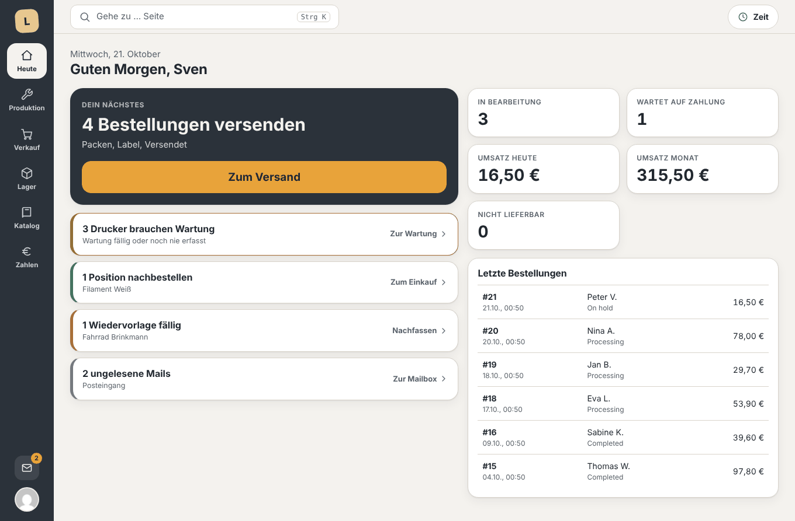
Links in der dunklen Leiste stehen sechs Plätze. Sie sind nach Aufgabe geordnet:
| Platz | Wofür | Wer arbeitet dort |
|---|---|---|
| Heute | Dein Start in den Tag: was als Nächstes dran ist, was Aufmerksamkeit braucht, wie der Tag im Shop läuft | alle |
| Produktion | Plan und Board, Drucker und Wartung, Tagesplan und Nachtschicht, Soll gegen Ist, Kapazität, Druckjournal, Qualität | Werkstatt, Betriebsleitung |
| Verkauf | Versand, Aufträge, Picklisten, Shop-Bestellungen, Angebote, Kunden (Kontakte / B2B, Loyalty, Reklamationen, Nachkauf), Kasse, Marketing | Versand, Betriebsleitung |
| Lager | Bestand, Lagerplätze und Picklisten, Scannen, Inventur, Material, Einkauf, Bedarf, Bestellungen an Lieferanten | Werkstatt, Versand, Betriebsleitung |
| Katalog | Alle Produkte mit Stammdaten, Revisionen, Stückliste, Kalkulation; Konfigurator; AR-Ansicht | Fertigung, Betriebsleitung |
| Zahlen | Übersicht und Wochenrückblick, Berichte und Stundenlohn, Prognose und Liquidität, Buchhaltung, Bankabgleich und Offene Posten, Steuer und DATEV | Verwaltung |
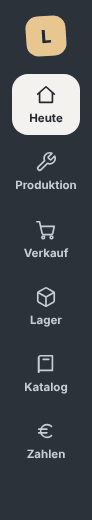
Unten in der Leiste liegen zwei weitere Knöpfe: der Briefumschlag öffnet die Mailbox (mit einer Zahl für ungelesene Mails), das Bild darunter öffnet das Profilmenü.
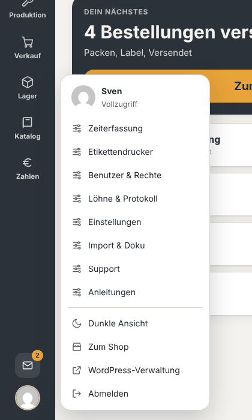
Jeder Platz hat oben Reiter, darunter bei Bedarf eine Auswahl aus kleinen runden Knöpfen. Beides zusammen bildet den Weg zu einer Seite. In dieser Anleitung steht er so:
Produktion → Drucker → 3D-Drucker & Wartung
Das heißt: Klicke links auf Produktion, oben auf den Reiter Drucker und darunter auf den runden Knopf 3D-Drucker & Wartung. Das erste Wort ist immer einer der Plätze, das zweite der Reiter, das dritte die Auswahl. Hat ein Reiter nur eine Seite, entfällt der dritte Teil.
| Platz | Reiter | Auswahl |
|---|---|---|
| Produktion | Plan und Board | Workflow · Produktion |
| Drucker | Druckfarm · 3D-Drucker & Wartung · Bambu-Lab-Drucker | |
| Tagesplan | Tagesplan · Nachtschicht | |
| Soll gegen Ist | Soll gegen Ist · Kapazität | |
| Journal | Druckjournal · Qualität | |
| Verkauf | Bestellungen | Versand · Aufträge · Picklisten · Shop-Bestellungen |
| Kunden | Kontakte / B2B · Loyalty · Reklamationen · Nachkauf | |
| Kasse | – | |
| Marketing | Marketing · Kurzlinks · Affiliates | |
| Angebote | – | |
| Lager | Bestand | Lager · Lagerplätze & Picklisten · Scannen · Inventur |
| Material | – | |
| Einkauf | Einkauf · Bedarf · Bestellungen an Lieferanten | |
| Katalog | Produkte | Alle Produkte · Shop-Produkte |
| Konfigurator | – | |
| AR-Ansicht | – | |
| Zahlen | Übersicht | Dashboard Finanzen · Wochenrückblick |
| Berichte | Berichte · Reporting · Stundenlohn | |
| Prognose | Prognose & Planung · Liquidität | |
| Buchhaltung | Belege · Rechnungen · Kasse · Journal · Dauerbuchungen · Anlagen · EÜR · GoBD-Prüfung · Export · Jahresabschluss | |
| Bank & Posten | Bankabgleich · Offene Posten | |
| Steuer | Steuer & DATEV |
Dazu kommen die Seiten, die oben, unten oder im Profilmenü liegen:
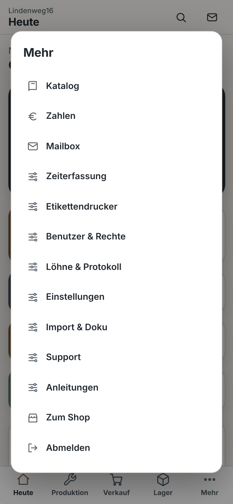
Was du nicht siehst, darfst du nicht. Fehlt dir ein Platz, ein Reiter oder eine Auswahl aus deiner Anleitung, fehlt dir das passende Recht. Das ist kein Defekt, sondern eine Einstellung – frag die Person, die im Plugin Vollzugriff hat (Kapitel C.10).
Eine Seite ist noch nicht ins ERP umgezogen und erscheint darin eingebettet: die Shop-Produkte. Sie funktioniert wie bisher; über Eigener Tab öffnest du sie ohne ERP-Rahmen. Die Kasse gibt es nur noch im ERP, nicht mehr im wp-admin.
Das tust du Das macht das ERP
Für alle, die drucken, entgraten, montieren und Teile ins Regal legen. Diese Anleitung setzt nichts voraus – außer dass du dich am Computer anmelden kannst.
Das tust du Das macht das ERP Außerhalb (Drucker, Bank, Post, Lieferant) Ergebnis
Alles, was du für die Produktion brauchst, liegt im ERP. Das erreichst du über den Browser – Chrome, Firefox, Safari, egal.
/erp. Also zum Beispiel lindenweg16.de/erp. Dann Enter.Wenn irgendwo steht Produktion → Journal → Druckjournal, dann heißt das: links auf Produktion, oben auf den Reiter Journal, darunter auf den runden Knopf Druckjournal. Wie das genau aufgebaut ist, steht im Kapitel 2 ganz oben in dieser Anleitung.
Das ist Absicht. Je nach Rechteprofil blendet das ERP aus, was du nicht brauchst. Mit dem Profil Werkstatt siehst du zum Beispiel Workflow, Druckjournal, Qualität, Lager, Lagerplätze, Scannen und die Zeiterfassung – genau das, was in den Kapiteln A.2 bis A.8, A.13 und A.16 steht. Der Rest ist für die Betriebsleitung.
Heute
Das tust du Das macht das ERP Ergebnis
Das ist dein Startpunkt. Die Seite beantwortet drei Fragen: Was ist als Nächstes dran? Was braucht Aufmerksamkeit? Wie läuft der Tag?
| Karte | Was sie bedeutet | Was du tust |
|---|---|---|
| Platte … rüsten / melden | Eine freigegebene Platte wartet auf dich, oder ein fertiger Druck wartet auf die Mengenmeldung | Kapitel A.3 |
| … Bestellungen versenden | Bestellungen sind bezahlt und warten auf Packen und Label | Teil B |
| … Drucker brauchen Wartung | Eine Wartung ist fällig oder wurde noch nie erfasst | Kapitel A.10 |
| … Positionen nachbestellen | Filament oder ein Kleinteil reicht nicht mehr lange | Kapitel A.9, Lager → Einkauf |
| … Lieferungen überfällig | Bestelltes Material ist nicht pünktlich angekommen | Betriebsleitung, Lager → Einkauf |
| … Rechnungen überfällig | Ein Händler hat eine Rechnung nicht bezahlt | Betriebsleitung, Kundenakte (Kapitel B.11) |
| … Wiedervorlagen fällig | Bei einem Händler sollte jemand nachfassen | Betriebsleitung |
| … ungelesene Mails | Im Posteingang liegt etwas | Kapitel D.25 |
| … Affiliate-Auszahlungen angefordert | Ein Ambassador möchte sein Guthaben ausgezahlt haben; die Karte nennt Namen und Summe (an der Wand nur die Anzahl) | Kapitel B.15, nur mit dem Recht Affiliate-Provision auszahlen |
| Rechnung zur Dauerbuchung hochladen | Ein Vertrag (Telefon, Software, Strom) wartet auf die Rechnung dieses Monats | Buchhaltung, Kapitel D.10 |
Produktion → Plan und Board → Workflow
Das tust du Das macht das ERP Außerhalb (Drucker, Bank, Post, Lieferant) Ergebnis
Das ist die Seite, an der gedruckt wird. Sie zeigt von links nach rechts den Weg jeder Platte: Bedarf (was gebaut werden müsste), Freigegeben (die Platte ist geplant und wartet), Im Druck, Ist melden (der Druck ist fertig, es fehlt die Meldung der Menge) und Eingelagert (fertig im Lager). Jede Karte hat einen nächsten Schritt.
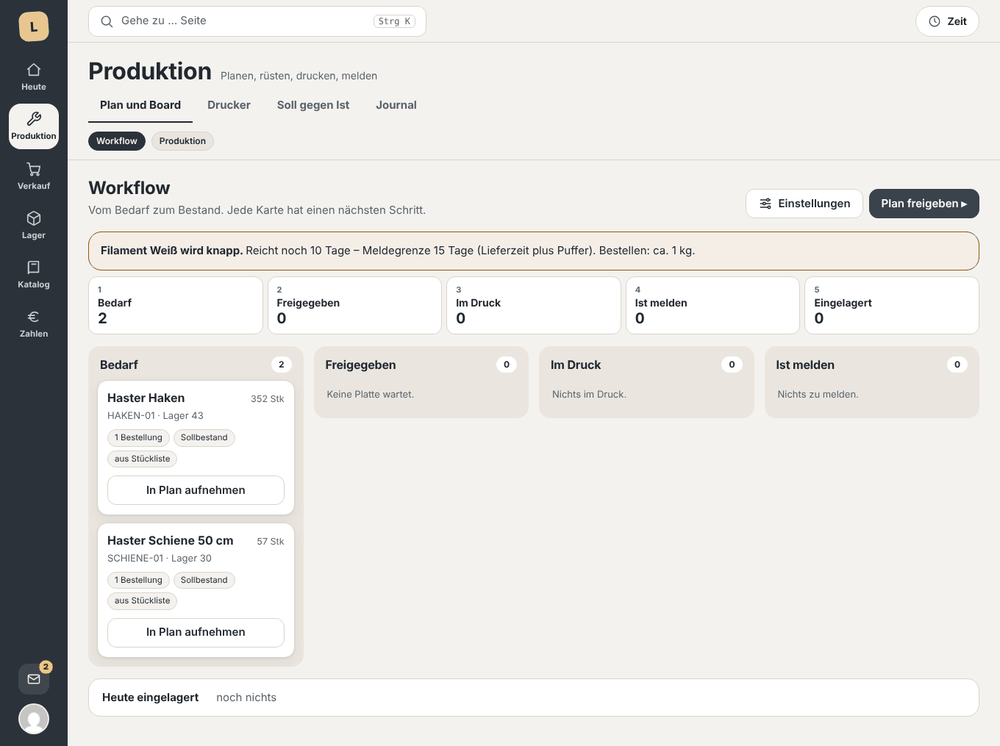
Eine rote oder orange Meldung ganz oben, etwa „Filament Weiß wird knapp“, ist der Beschaffungsalarm (Kapitel A.9).
Das ERP rechnet ihn selbst aus drei Quellen:
Davon zieht es ab, was schon im Lager liegt oder in laufenden Aufträgen steckt. Was übrig bleibt, steht als Karte da. Artikel ohne hinterlegte Projektdatei (3MF) lassen sich nicht in einen Plan aufnehmen; an der Karte steht dann ein Hinweis (Kapitel A.12).
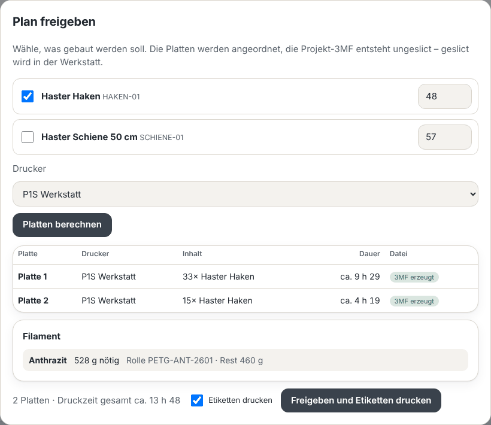
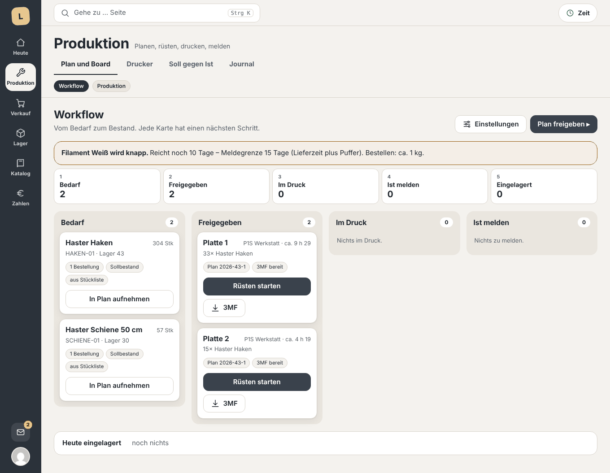
Das tust du Außerhalb (Drucker, Bank, Post, Lieferant) Pflicht oder Ausnahme Ergebnis
Ab jetzt arbeitest du an der Platte – am besten mit dem Handy in der Hand. Das Etikett mit dem QR-Code öffnet direkt die Seite der Platte. Du kannst sie auch am Computer über die Karte öffnen (Klick auf Platte 1).
| Station | Was du siehst | Dein Knopf |
|---|---|---|
| Freigegeben | Schritt 1 „Datei an den Drucker“: der Knopf Automatisch slicen und an den Drucker bzw. der Stand von Slicen und Warteschlange (siehe unten), dazu 3MF herunterladen für den Weg von Hand; Schritt 2 „Material bereit?“ mit der Rolle und dem Bedarf in Gramm; ggf. Platte ist frei | Rüsten starten ▶ – ab dem Tippen läuft die Rüstzeit |
| Rüsten | Die laufende Rüstzeit | Druck gestartet ▶ – wird automatisch erkannt, wenn der Drucker verbunden ist (Kapitel A.11) |
| Im Druck | Fortschrittsbalken, Restzeit, Temperaturen (live vom Bambu-Drucker oder geschätzt nach Zeit), Rüst- und Druckzeit | Druck fertig ▶; oder Direkt Ist-Menge melden, wenn du den Druck nicht mitgezählt hast |
| Ist melden | Je Artikel die geplante Menge, daneben Zähler für Gut und Ausschuss, die Rolle mit dem geschätzten Verbrauch | Melden und einlagern ✓ |
| Erledigt | Bestätigung, was ins Lager gebucht wurde, und wie viel Filament abgezogen wurde | Ggf. die nächste Platte vorbereiten |
Wurde die Platte automatisch geslict, zeigt ihre Seite, was im Hintergrund passiert:
| Anzeige | Bedeutung | Was du tust |
|---|---|---|
| Wird geslict | Der Slicing-Worker hat die Platte (noch nicht) abgeholt; der Text sagt, welches von beiden | Warten. Passiert lange nichts, läuft der Worker nicht. |
| Slicen fehlgeschlagen | Der Grund steht darunter (z. B. kein Slicing-Profil für das Material) | Ursache beheben, dann Erneut slicen |
| In der Warteschlange | Die Druckdatei wartet auf den Drucker – bei belegter Platte, bis sie als frei bestätigt ist | Platte räumen, Platte ist frei tippen |
| Wird übertragen / druckt | Die Bridge hat übernommen; Druckstart und -ende schalten die Platte von selbst weiter | Nichts |
| Druck fehlgeschlagen | Der Drucker hat den Start abgelehnt, etwa weil das Filament nicht im AMS liegt; der Grund steht darunter | Ursache beheben, dann Erneut in die Warteschlange |
| Unklar | Niemand weiß sicher, wie der Druck ausging | Am Drucker nachsehen und unter Bambu-Lab-Drucker → Aufträge klären |
Alle Knöpfe an der Platte sind groß gebaut und mit Handschuhen bedienbar. Die Zeiten laufen auf dem Server, nicht auf dem Handy – ein gesperrter Bildschirm unterbricht nichts.
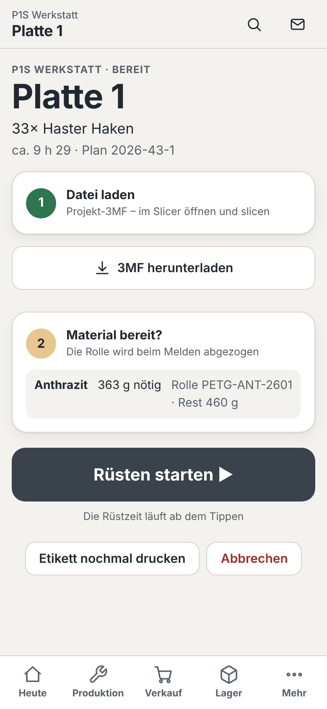
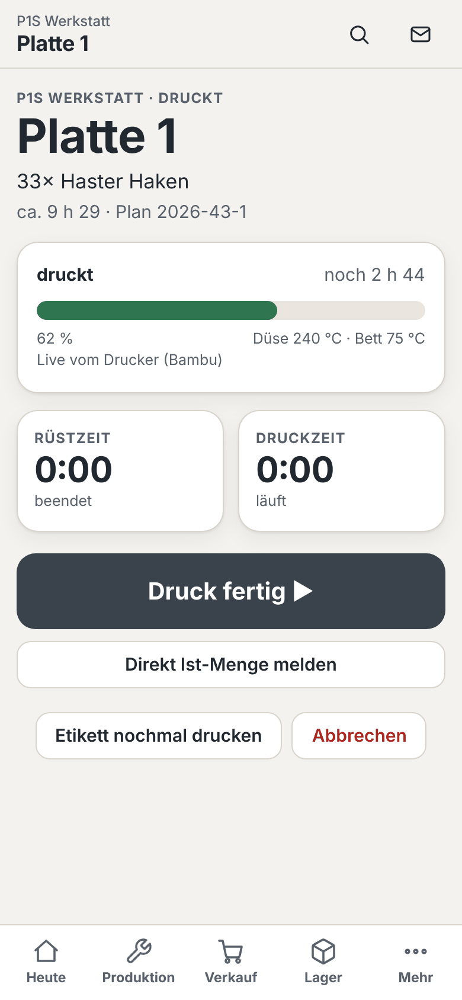
Das ERP misst an jeder Platte getrennt, was Handarbeit ist und was die Maschine tut:
| Zeit | Von – bis | Wer arbeitet |
|---|---|---|
| Rüsten | Rüsten starten ▶ bis Druck gestartet | Du (Handarbeit). Zählt als Arbeitszeit. |
| Druck | Start bis Ende des Drucks | Die Maschine. Start und Ende kommen vom Bambu-Drucker, nicht aus dem Zeitpunkt der Abfrage. Die Quelle (Drucker, Abfrage, Hand) steht an der Platte. |
| Warten | Freigegeben bis Rüsten, und Druck fertig bis gemeldet | Niemand. Hier gehen Stunden verloren, ohne dass es auffällt. |
Das tust du Das macht das ERP Pflicht oder Ausnahme Ergebnis
Der Druck ist fertig. Jetzt zählst du, was wirklich gut geworden ist.
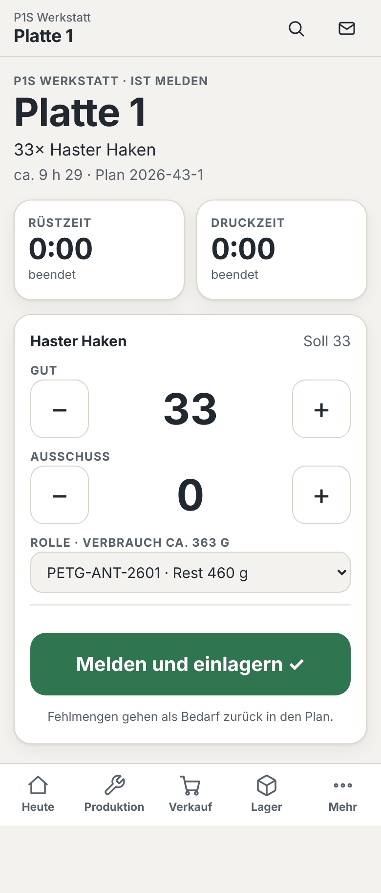
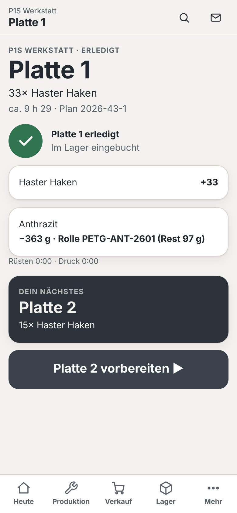
Mit dem Melden passiert in einem Rutsch: Der Lagerzugang der guten Teile wird auf den gewählten Lagerplatz gebucht, eine Charge für die Rückverfolgung entsteht, das Filament wird von der Rolle abgezogen, die eingebauten Kleinteile werden verbraucht, die Zeiten gehen in die Auswertung Soll gegen Ist, und der Ausschuss geht als Bedarf zurück in den Plan. Fehlmengen verschwinden also nicht, sie kommen wieder.
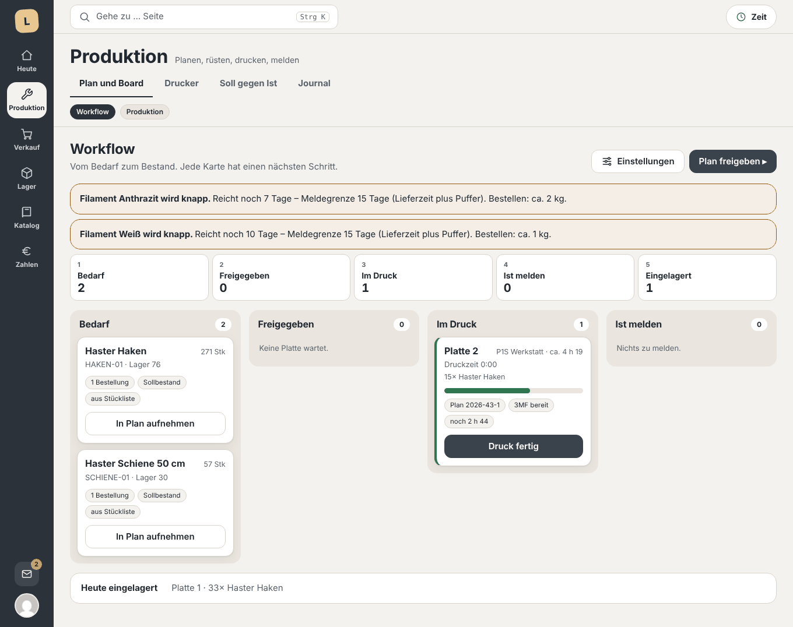
Auf der Seite der Platte liegt unten der Knopf Abbrechen (nur mit dem Recht, Pläne freizugeben). Es wird nichts gebucht. Die Platte bleibt als abgebrochen stehen, der Bedarf kommt zurück. Daneben gibt es Etikett nochmal drucken, wenn das Etikett verloren ging.
Oben rechts auf der Seite liegt Einstellungen. Das ist Sache der Betriebsleitung; es steht hier, damit du weißt, woher Etikett und Alarm kommen.
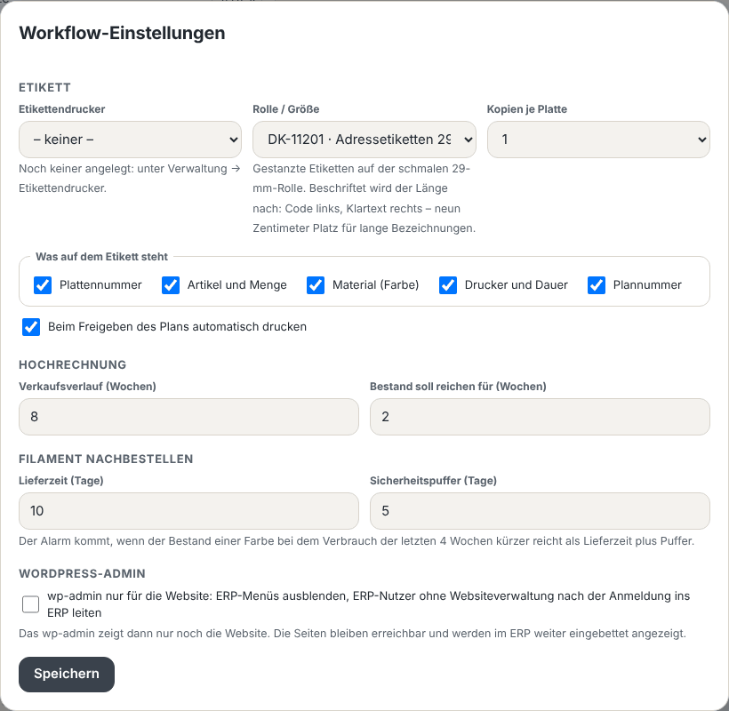
| Einstellung | Wirkung |
|---|---|
| Etikettendrucker, Rolle / Größe, Kopien | Wohin die Plattenetiketten gehen und wie sie aussehen. Der Drucker muss vorher unter Profilmenü → Etikettendrucker angelegt sein. |
| Beim Freigeben des Plans automatisch drucken | Setzt den Haken Etiketten drucken beim Freigeben vor. |
| Verkaufsverlauf (Wochen) und Bestand soll reichen für (Wochen) | Wie weit der Bedarf aus dem Verkauf der letzten Wochen in die Zukunft gerechnet wird. |
| Lieferzeit und Sicherheitspuffer beim Filament | Der Alarm kommt, sobald eine Farbe bei dem Verbrauch der letzten vier Wochen kürzer reicht als Lieferzeit plus Puffer. |
| wp-admin nur für die Website | Leitet ERP-Nutzer ohne Websiteverwaltung nach der Anmeldung ins ERP um und blendet die klassischen Menüs aus. |
Neben Workflow gibt es unter Produktion → Plan und Board → Produktion die ältere Produktionsplanung mit Druckaufträgen des Produktionsmoduls. Für die tägliche Arbeit brauchst du sie nicht; der Workflow ersetzt sie.
Lager → Einkauf → Bedarf
Das tust du Das macht das ERP Ergebnis
Der Workflow zeigt dir den Bedarf an Drucksachen. Die Seite Bedarf zeigt ihn für alles – auch für Sets, die montiert, und für Zukaufteile, die bestellt werden müssen. Sie schaut sich an, was bestellt ist, welcher Sollbestand vereinbart wurde, was im Regal liegt und was schon in Arbeit ist – und sagt dir, was übrig bleibt.
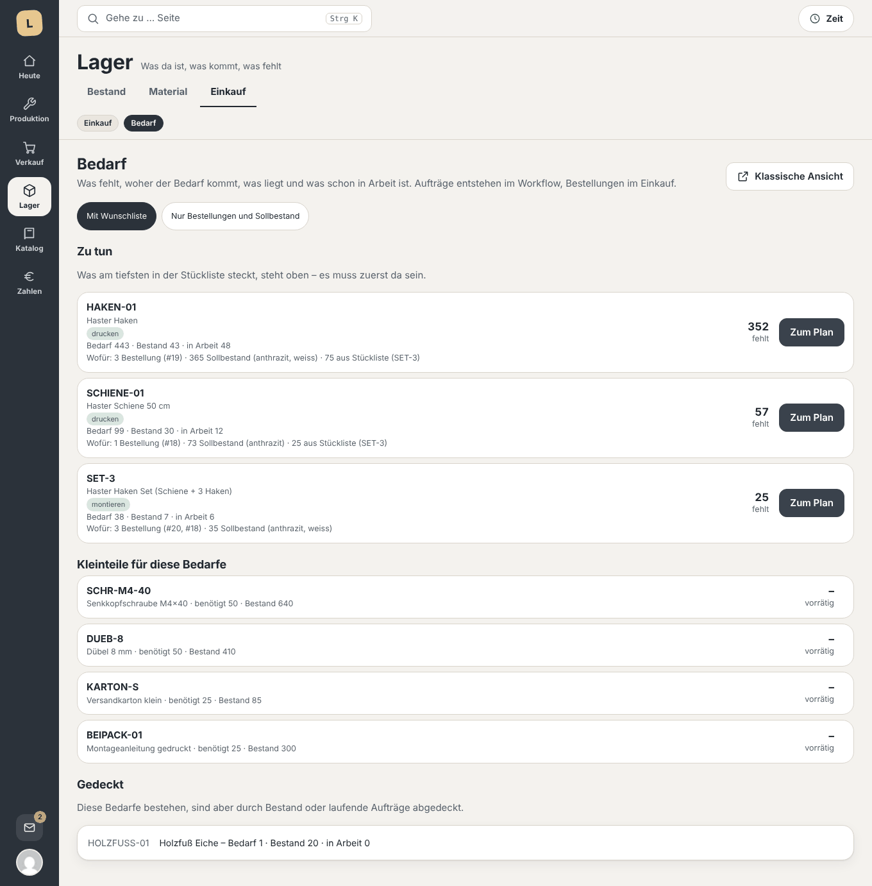
| Angabe | Bedeutung |
|---|---|
| drucken · montieren · bestellen | Die Art der Arbeit. Eine Karte mit drucken führt dich zum Workflow, bestellen zum Einkauf. |
| Bedarf | Wie viele Stück insgesamt gebraucht werden |
| Bestand | Wie viele davon schon im Lager liegen |
| in Arbeit | Wie viele in laufenden Platten oder Aufträgen stecken |
| Fehlt | Die Zahl, die zählt: so viele musst du machen oder bestellen |
| Wofür | Woher der Bedarf kommt – Bestellnummer oder Sollbestand |
Mit den beiden Knöpfen oben wählst du, ob die Wunschliste (Artikel, die Kunden sich gemerkt haben) mitzählt oder nur Bestellungen und Sollbestand.
Arbeite von oben nach unten ab. Was in der Stückliste am tiefsten steckt, steht oben: Ein Set kannst du erst montieren, wenn Haken und Schiene gedruckt sind – deshalb stehen Haken und Schiene über dem Set. Der Abschnitt Kleinteile sagt dir außerdem, ob Schrauben, Dübel und Kartons für die geplante Arbeit reichen. Steht dort etwas, sag der Betriebsleitung Bescheid, bevor du anfängst.
Lager → Bestand → Lagerplätze & Picklisten → Fertigungsaufträge
Das tust du Das macht das ERP Ergebnis
Für alles, was nicht auf einer Platte entsteht, gibt es Aufträge. Ein Auftrag ist ein Zettel im System: „Von diesem Artikel sollen so viele Stück in dieser Farbe entstehen.“ Es gibt zwei Sorten:
| Sorte | Wofür | Kürzel |
|---|---|---|
| Fertigungsauftrag | Etwas, das aus vorhandenen Teilen zusammengebaut wird – ein Set | FA… |
| Druckauftrag | Etwas, das aus dem Drucker kommt, wenn du ohne den Workflow arbeitest. Er wird im Druckjournal gebucht. | DA… |
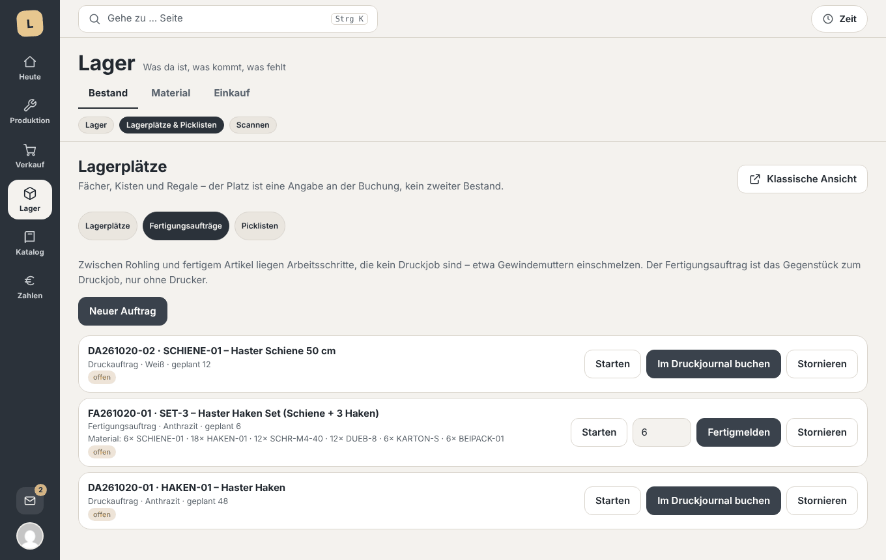
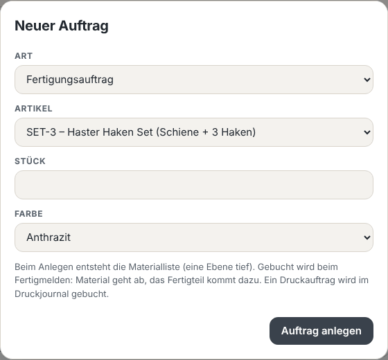
Beim Fertigungsauftrag rechnet das ERP sofort die Materialliste aus und zeigt sie in der Zeile an: 6× SCHIENE-01 · 18× HAKEN-01 · 12× SCHR-M4-40 …. Gebucht wird davon noch nichts – das passiert erst beim Fertigmelden.
Klick beim Auftrag auf Starten. Damit passiert dreierlei (ein Druckauftrag lässt sich so ebenfalls starten; gebucht wird er danach über Im Druckjournal buchen):
Musst du zwischendurch etwas anderes tun, klick auf Pausieren (so heißt der Knopf, solange die Uhr läuft). Die Uhr hält an und läuft beim nächsten Starten weiter. Die Zeit summiert sich – sie fängt nicht von vorn an. In der Zeile steht rechts neben dem Status die bisherige Zeit.
Produktion → Journal → Druckjournal
Das tust du Das macht das ERP Pflicht oder Ausnahme Ergebnis
Der Workflow (A.3) bucht Drucke selbst, sobald du eine Platte meldest. Das Druckjournal ist die Liste aller Drucke – und der Ort, an dem du einen Druck von Hand erfasst: wenn du ohne Plan gedruckt hast, einen Druckauftrag aus A.5 abschließt oder etwas von gestern nachträgst. Aus einem einzigen Formular entstehen automatisch:
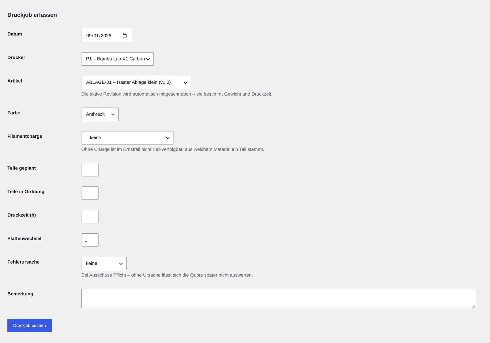
Feld für Feld:
| Feld | Was du einträgst | Warum |
|---|---|---|
| Aus Druckauftrag | Nur wenn der Druck zu einem offenen Druckauftrag gehört. Dann füllen sich Drucker, Artikel, Farbe und Menge von selbst. | Mit dem Buchen wird der Auftrag fertiggemeldet |
| Datum | Steht schon auf heute. Nur ändern, wenn du etwas von gestern nachträgst. | Bestimmt die Kalenderwoche in den Auswertungen |
| Drucker | Das Gerät, auf dem gedruckt wurde | Zählt die Betriebsstunden und den Maschinenstundensatz |
| Artikel | Was gedruckt wurde. In Klammern steht die aktive Revision, z. B. (v1.1) | Aus der Revision kommen Gewicht und Druckzeit je Teil |
| Farbe | Die Farbe des Filaments | Bestand wird je Farbe geführt |
| Filamentcharge | Die Rolle, von der du gedruckt hast | Nur damit ist im Ernstfall nachvollziehbar, aus welchem Material ein Teil ist |
| Teile geplant | Wie viele auf der Platte waren | Grundlage der Ausschussquote |
| Teile in Ordnung | Wie viele brauchbar sind | Nur diese gehen in den Bestand |
| Druckzeit (h) | Die Zeit, die der Drucker angezeigt hat, in Stunden mit Komma – 6,9 für 6 Stunden 54 Minuten | Maschinenkosten und Auslastung |
| Plattenwechsel | Wie oft du die Platte gewechselt hast. Meist 1. | Kennzahl „Teile je Plattenwechsel“ |
| Fehlerursache | Nur nötig, wenn Teile kaputt sind | Ohne Ursache lässt sich Ausschuss später nicht auswerten |
| Bemerkung | Freitext, alles was auffiel | Hilft dem nächsten, der dasselbe Problem hat |
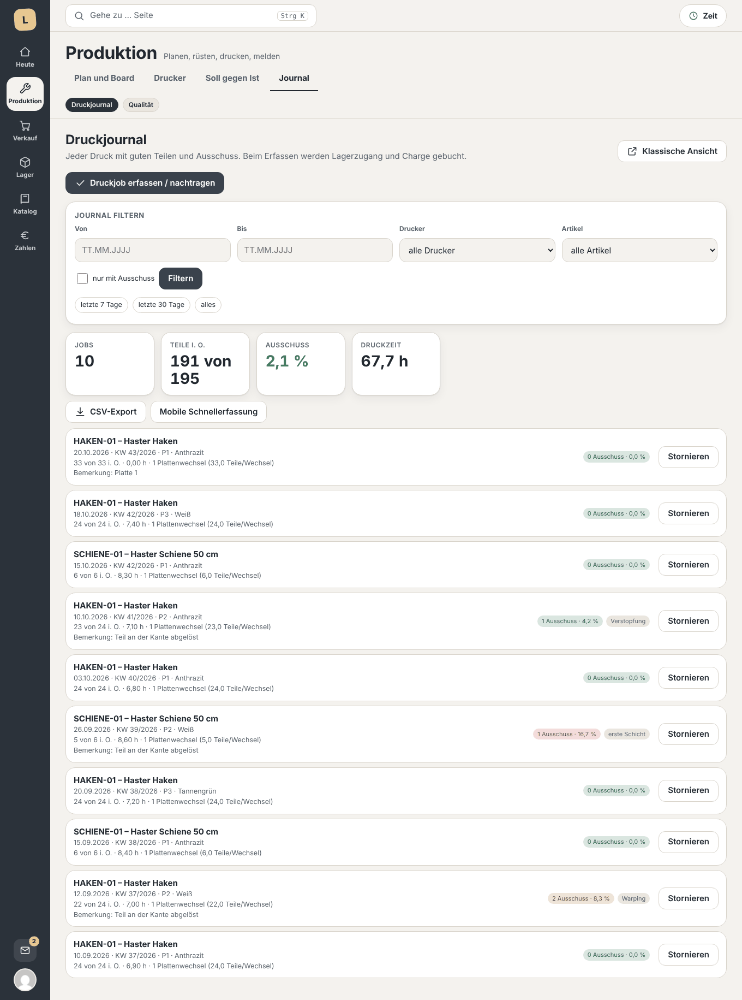
Oben über der Liste stehen die Summen (Jobs, Teile in Ordnung, Ausschuss, Druckzeit) für das, was der Filter gerade zeigt. Mit letzte 7 Tage, letzte 30 Tage oder alles stellst du den Zeitraum ein, mit nur mit Ausschuss suchst du die Problemfälle. CSV-Export lädt die Liste als Tabelle herunter.
Es gibt keinen Löschknopf, und das ist Absicht. Klick in der Zeile auf Stornieren, trag eine Begründung ein (zum Beispiel „Stückzahl vertippt, waren 12 statt 21“) und bestätige. Der Lagerzugang wird gegengebucht, die Kleinteile kommen zurück, die Charge wird storniert. Der Job selbst bleibt im Journal stehen, und du buchst danach neu. So ist die Bestandsrechnung wieder richtig, und man sieht trotzdem, was passiert ist.
Das tust du Das macht das ERP Außerhalb (Drucker, Bank, Post, Lieferant) Ergebnis
Am Gerät steht selten ein Computer. Deshalb gibt es eine eigene, sehr kurze Seite fürs Handy: die mobile Schnellerfassung.
/betrieb-erfassen/ eintippen. Leg sie dir einmal als Lesezeichen auf den Startbildschirm.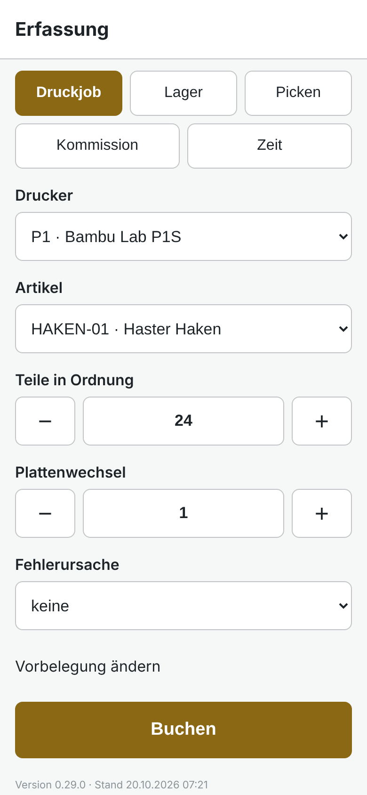
Unter dem Formular steht dieser Link. Damit stellst du dauerhaft ein, welcher Drucker, welcher Artikel und welche Menge beim Öffnen schon eingetragen sind. Wenn du drei Wochen lang dasselbe druckst, sparst du dir damit jedes Mal vier Tipper.
Jede Buchung wandert zuerst in eine Warteschlange im Browser und verschwindet erst, wenn der Server sie bestätigt hat. Fällt im Keller das WLAN aus, bleibt die Eingabe stehen und wird später gesendet. Das gilt auch für die Platten-Seite aus A.3.
Das tust du Das macht das ERP Pflicht oder Ausnahme
Ein Set kommt nicht aus dem Drucker – es wird aus Teilen zusammengebaut, die schon im Regal liegen. Der Ablauf:
Mit dem Fertigmelden bucht das ERP in einem Rutsch: das verbaute Material geht ab, die fertigen Sets kommen zu, die gestoppte Zeit wird dem Auftrag zugeschrieben.
Trag die wirkliche Menge ein, nicht die geplante. Der Auftrag bleibt dann mit dem Rest offen, und der Bedarf zeigt weiterhin an, was fehlt. Wer die Sollmenge einträgt, um „den Haken zu setzen“, erzeugt Bestand, der nicht existiert – und der fällt erst beim Packen auf, wenn der Kunde schon wartet.
Lager → Material
Das tust du Das macht das ERP Außerhalb (Drucker, Bank, Post, Lieferant) Ergebnis
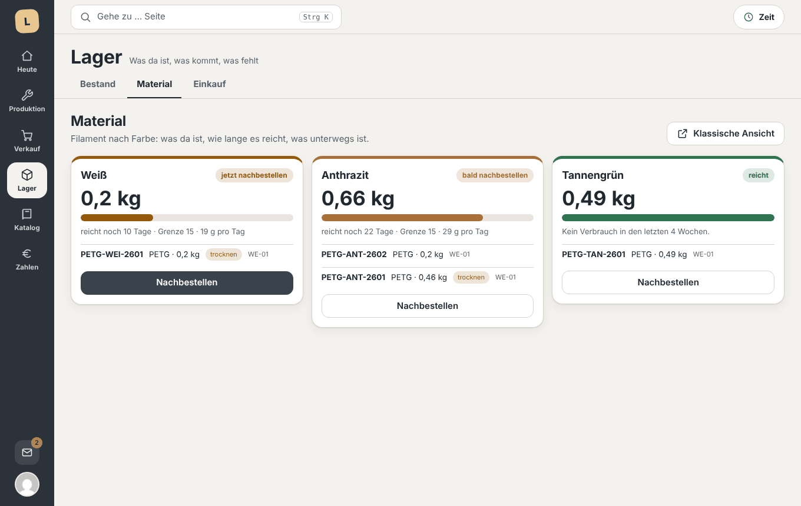
Das Schild oben rechts auf jeder Karte sagt, was zu tun ist: reicht, bald nachbestellen oder jetzt nachbestellen. „Jetzt“ heißt: Der Vorrat reicht kürzer als Lieferzeit plus Sicherheitspuffer. Bei Rollen, die noch trocknen müssen, steht trocknen dabei.
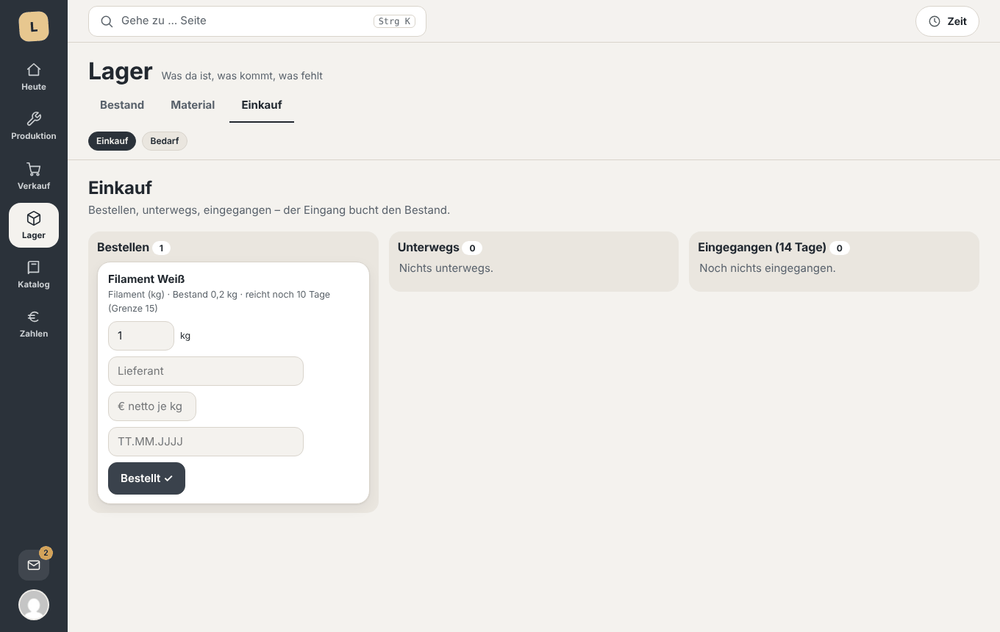
Wenn ein Kunde reklamiert, ist die erste Frage: aus welchem Material war das Teil? Über die Charge findest du in zwei Klicks alle Teile derselben Rolle und alle Bestellungen, in denen sie steckten (Kapitel A.16). Jede Rolle, die ins Haus kommt, braucht deshalb einen eindeutigen Code, den du mit Stift auf die Rolle schreibst. Bewährt hat sich MATERIAL-FARBE-JAHR NUMMER, zum Beispiel PETG-ANT-2601. Zweimal derselbe Code geht nicht.
Weiter unten im Lager, unter Lager → Bestand → Lager → Kleinteile & Kartons, stehen Schrauben, Dübel, Kartons und Klebeband. Wareneingang und Verbrauch schreiben deren Bestand fort; Verbrauchsmaterial wie Karton und Füllstoff wird je Bestellung pauschal abgebucht. Wenn ein Vorrat zur Neige geht, meldet sich der Beschaffungsalarm von selbst.
Bei jeder Rolle steht Als aktiv setzen (und Nicht mehr aktiv). Vom Verbrauch einer Charge zieht das ERP immer zuerst die aktive Rolle ab, erst danach die übrigen Rollen im Drucker und die neuen. Je Charge (Farbe und Material) ist nur eine Rolle aktiv; eine neu aktive Rolle löst die bisherige ab und gilt automatisch als „in Benutzung“. Wird die aktive Rolle leer gemeldet, entfällt die Markierung.
Das hilft, wenn mehrere Rollen derselben Farbe offen sind: Die Restmenge jeder Rolle stimmt, weil du bestimmst, von welcher gerade gedruckt wird.
Produktion → Drucker → 3D-Drucker & Wartung
Das tust du Das macht das ERP Pflicht oder Ausnahme Ergebnis
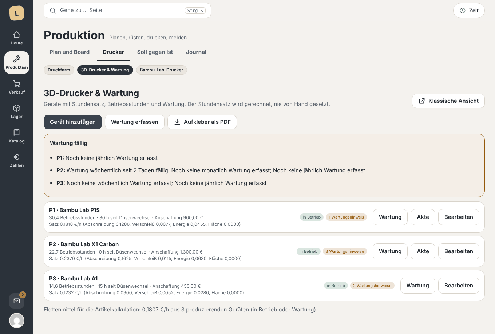
Der Kasten ganz oben, Wartung fällig, nennt je Gerät, was ansteht. Daneben stehen drei Knöpfe: Gerät hinzufügen, Wartung erfassen und Aufkleber als PDF.
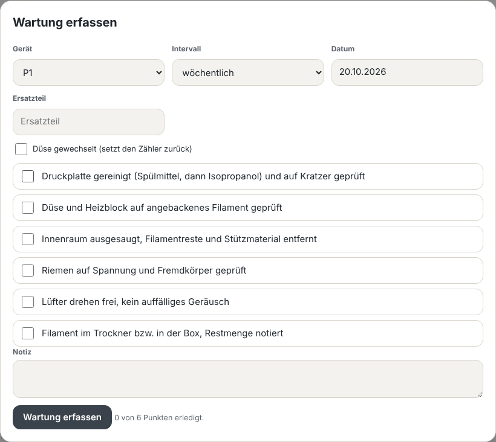
Wöchentlich, monatlich und jährlich nimmt das Formular nur an, wenn jeder Punkt gehakt ist – und es sagt dir namentlich, welche fehlen. Das ist kein Schikane-Formular: Die Liste ist der Nachweis, dass die Wartung wirklich stattgefunden hat. Bist du noch nicht fertig, mach erst die Arbeit und trag danach ein. Für eine Reparatur zwischendurch nimmst du Verschleiß – dort ist keine Liste vorgeschrieben, dafür gehören Ersatzteil und Notiz ausgefüllt.
Die längeren Intervalle enthalten die kürzeren: Wer monatlich wartet, saugt vorher aus. Deshalb wird bei „monatlich“ auch die Wochenliste mit abgefragt.
Mit Gerät hinzufügen oder Bearbeiten (Recht Stammdaten ändern) pflegst du die Daten, aus denen der Stundensatz entsteht: Anschaffungspreis, Lebensdauer, Stromkosten, Ersatzteile pro Jahr, geplante Betriebsstunden pro Jahr. Leere Felder nehmen die globale Annahme aus den Einstellungen (Kapitel D.5); der Wert steht jeweils als Hinweis unter dem Feld. Jede Änderung braucht eine Begründung und steht im Protokoll.
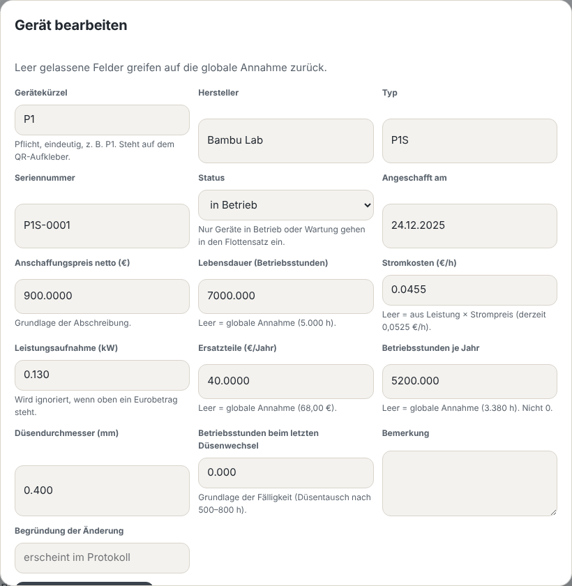
Bei Geräten, die mit einem Bambu-Drucker verknüpft sind, führt Akte zur Druckerakte: Druckzeit der Woche, die aktuelle Platte, Betriebsstunden, fällige Wartung, der Verlauf der letzten Platten mit Soll- und Ist-Zeit und die Verbindung zum Drucker.
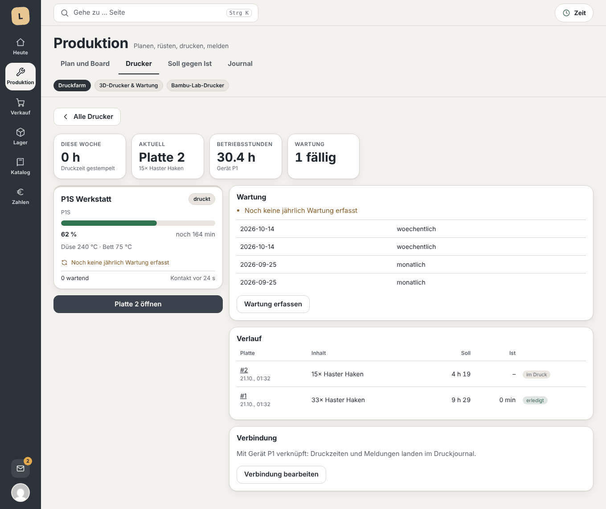
Aufkleber als PDF erzeugt für jedes Gerät einen Aufkleber mit QR-Code im Rollenformat DK-11201 – dasselbe, das auch Lagerplätze und Artikel benutzen, damit im Brother nur eine Rolle liegen muss. Kleb ihn an das Gerät: Dann ist die Handy-Erfassung (Kapitel A.7) einen Scan entfernt.
Die Betriebsstunden eines Druckers entstanden früher nur aus dem Druckjournal, also erst, wenn jemand eine Platte meldete. Heute misst die Bambu-Bridge jeden Druck von Beginn bis Ende, auch Drucke von Hand, aus Bambu Studio oder der App und nie gemeldete Platten. Läuft dazu keine Werkstatt-Platte, wird die Laufzeit am Drucker gesammelt und zu den Betriebsstunden des verknüpften Geräts addiert (Wartungsfälligkeit, Düsentausch, Anzeige). Platten werden dabei nicht doppelt gezählt.
Produktion → Drucker → Druckfarm · Produktion → Drucker → Bambu-Lab-Drucker
Das tust du Das macht das ERP Außerhalb (Drucker, Bank, Post, Lieferant) Ergebnis
Bis hierher war der Drucker ein Gerät, dessen Ergebnis du meldest. Ein Bambu-Lab-Drucker im LAN-Modus kann mehr: Das ERP schickt ihm die Druckdatei, startet den Druck, sieht Fortschritt und Restzeit und trägt am Ende die tatsächliche Druckzeit selbst ein. Dafür läuft im Betrieb ein kleiner Vermittler auf einem Raspberry Pi, die Bambu-Bridge – eingerichtet hat sie die Verwaltung (Kapitel D.20). Für dich zählt nur, was auf der Seite passiert.
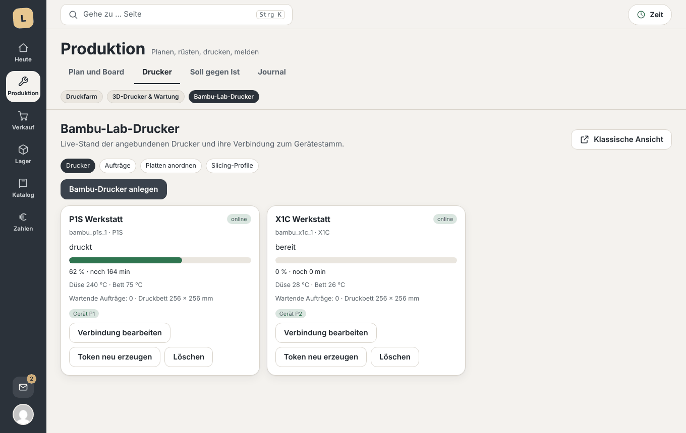
| Angabe | Bedeutung |
|---|---|
| online / offline | Online heißt: Der Pi meldet sich regelmäßig. Offline heißt: seit einigen Minuten kein Kontakt – Pi aus, Netz weg oder Dienst gestoppt. Dann passiert gar nichts, auch kein Druck. Wie lange der letzte Kontakt her ist, steht dabei. |
| Zustand | bereit, druckt, bereitet vor, pausiert, fertig oder Fehler. Steht dort Drucker nicht erreichbar, läuft die Bridge, findet aber den Drucker im Netz nicht: Gerät aus, andere IP-Adresse oder falscher Zugangscode. |
| Balken, Temperaturen | Fortschritt und Restzeit; Düse und Bett live. |
| Wartende Aufträge, Druckbett | Wie viele Druckdateien in der Warteschlange dieses Druckers liegen und wie groß sein Bett ist. |
| Gerät P1 | Mit welchem Gerät aus 3D-Drucker & Wartung er verknüpft ist. Nur dann landen Zeiten im Druckjournal und Platten lassen sich auf ihn einplanen. Fehlt die Verknüpfung, steht eine Warnung auf der Karte. |
| AMS-Filamente, Kamera | Wenn ein AMS angeschlossen ist, siehst du dessen Fächer; bei der X1-Serie kommt alle paar Sekunden ein Kamera-Standbild. |
Dieselben Karten ohne Formulare drumherum zeigt Produktion → Drucker → Druckfarm – gedacht für einen Bildschirm in der Werkstatt. Mit Vollbild-Anzeige füllen sie den ganzen Schirm.
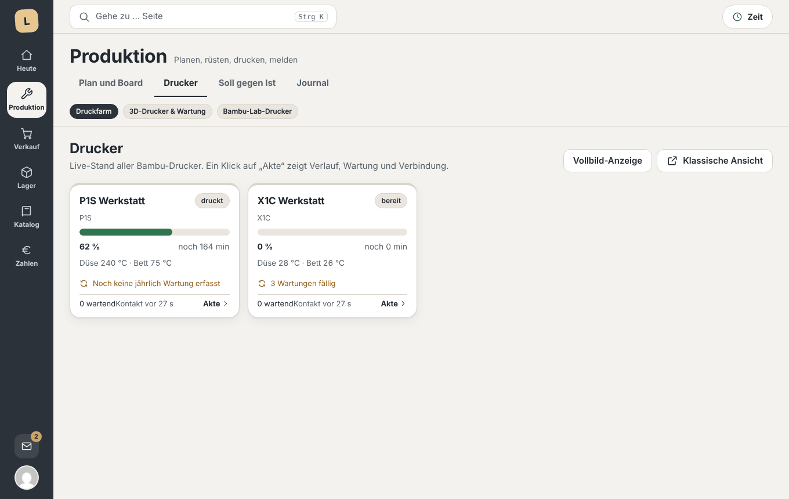
Auf der Seite Bambu-Lab-Drucker wählst du oben Aufträge. Der Weg über den Workflow (A.3) legt Platten selbst an; hier kannst du eine fertig geslicte Druckdatei (.gcode.3mf aus Bambu Studio oder OrcaSlicer) von Hand einreihen. Eine reine Projektdatei mit Modell kann der Drucker nicht ausführen.
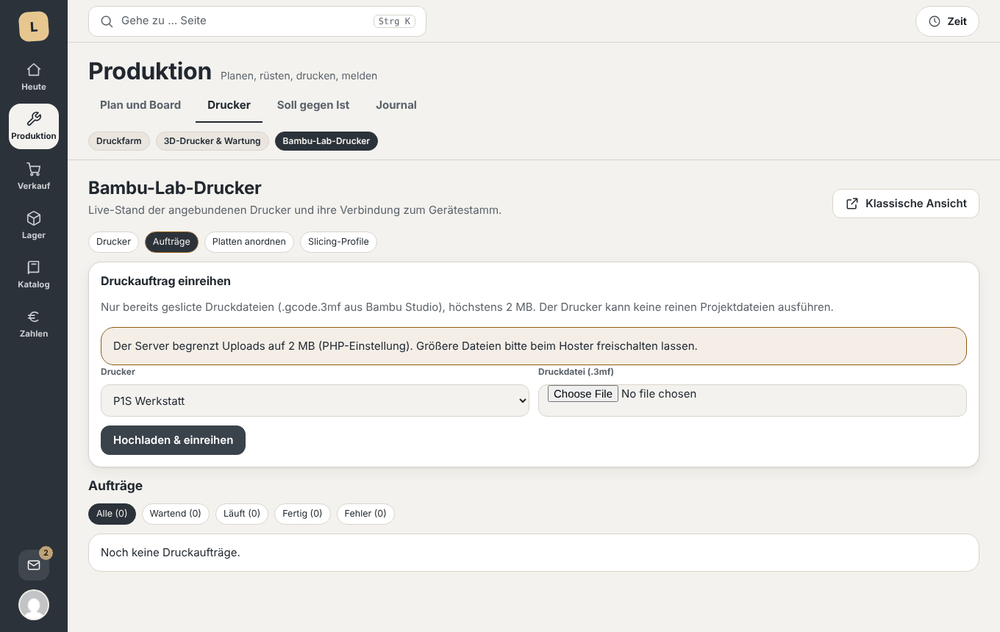
Die Bridge holt den Auftrag beim nächsten Kontakt ab, überträgt die Datei und startet den Druck. In der Liste wandert er durch die Stationen Wartend → Geclaimt → Wird übertragen → Druckt → Fertig. Fehler heißt: Der Drucker hat abgebrochen oder ist nicht angelaufen; Storniert heißt: jemand hat ihn zurückgezogen. Meldet der Drucker eine AMS-Belegung, kannst du außerdem wählen, mit welchem Filament gedruckt wird. Ohne Auswahl druckt das Gerät mit dem gerade eingelegten Filament.
Ein hier eingereihter Auftrag ist ein Einzeldruck – Muster, Ersatzteil, privat. Er bucht weder Lager noch Druckjournal. Was ins Lager soll, läuft über den Workflow (Kapitel A.3): Plan freigeben, automatisch slicen, Ist-Menge melden.
Platten werden nur noch im Workflow angeordnet und freigegeben (Kapitel A.3). Dort lassen sie sich gleich beim Freigeben oder später von der Seite der Platte aus automatisch slicen: Der Slicing-Worker, ein Rechner im Betrieb mit OrcaSlicer ohne Bildschirm (Kapitel D.20), slict mit den hinterlegten Profilen und legt die Druckdatei von selbst in die Warteschlange des Druckers. Den Stand – wird geslict, fehlgeschlagen samt Grund, in der Warteschlange – zeigt die Seite der Platte. Der frühere eigene Reiter Platten anordnen ist entfallen: Was dort gedruckt wurde, buchte nichts ins Lager.
Das automatische Slicen nimmt das Material des ersten Artikels auf der Platte und sucht dazu das passende Slicing-Profil (Reiter Slicing-Profile, Kapitel D.20). Mehrfarbige oder Mehrmaterial-Platten mit AMS-Zuordnung je Bauteil kann der Worker nicht – dafür bleibt Bambu Studio zuständig: auf der Plattenseite die Projekt-3MF herunterladen, von Hand slicen und am Drucker starten; der Workflow erkennt den Druck am Dateinamen.
Auf der Druckerseite steht eine Liste der Drucke, die nicht aus dem Workflow kamen, sondern aus der Bambu-App, aus Bambu Studio oder von Hand gestartet wurden: Zeit, Datei, Dauer, Ende. So fällt auf, wenn ein Drucker Zeit und Filament für etwas verbraucht, das in keiner Rechnung steht. Erfasst wird ab Version 0.78.
Früher fragten die Programme auf dem Raspberry Pi laufend bei WordPress nach, ob es etwas zu tun gibt. Heute klingelt WordPress, wenn es etwas gibt (neuer Druck, Slicing- oder Etikettenauftrag, Kamerabild geöffnet). Ein Auftrag startet dann nach ein bis zwei Sekunden. Wie das eingerichtet wird, steht im Kapitel D.20.
Katalog → Produkte → Alle Produkte
Das tust du Außerhalb (Drucker, Bank, Post, Lieferant) Ergebnis
Das Ändern von Produkten verlangt das Recht Stammdaten ändern (Profil Fertigung oder höher). Mit dem Profil Werkstatt siehst du die Seite nicht – dann überspring das Kapitel. Alles, was an einem Produkt hängt, liegt an einem Ort: Stammdaten, Druckprofil, Stückliste, Kalkulation und Shop.
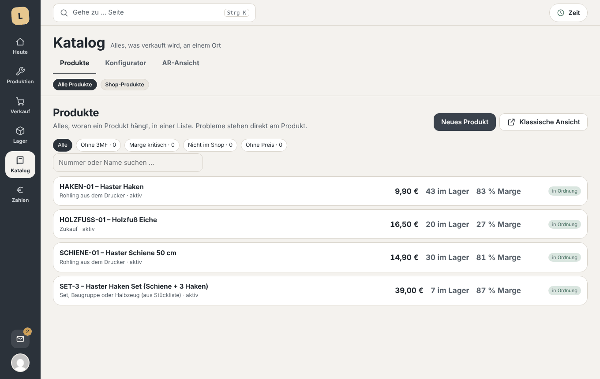
Klick auf ein Produkt, dann öffnet sich seine Akte. Oben stehen sechs Reiter: Übersicht, Stammdaten, 3MF und Revisionen, Stückliste, Kalkulation und Shop. Neue Produkte legst du mit Neues Produkt oben rechts an.
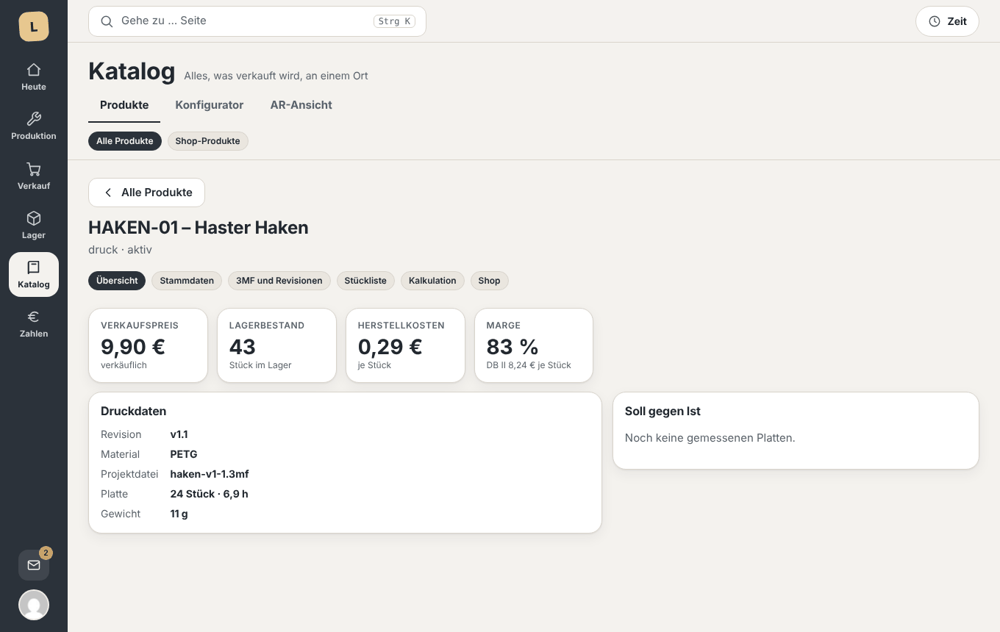
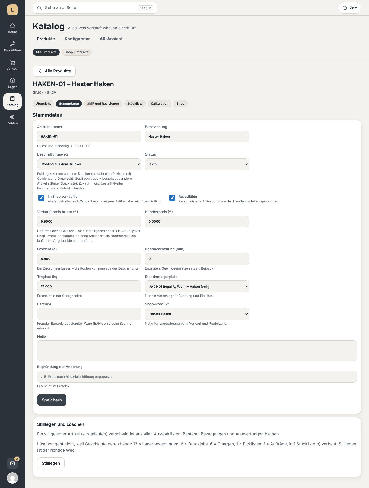
Der Beschaffungsweg entscheidet über alles Weitere:
| Beschaffungsweg | Bedeutung | Braucht |
|---|---|---|
| Rohling aus dem Drucker (druck) | Kommt aus dem Drucker | eine Revision (Druckprofil) |
| Set, Baugruppe oder Halbzeug (montage) | Wird aus anderen Teilen gebaut | eine Stückliste |
| Zukauf | Wird fertig eingekauft | Beschaffungsdaten (Lieferant, Preis) |
| Hybrid | Teils gedruckt, teils zugekauft | beides |
Unter dem Formular steht Stilllegen und Löschen. Ein stillgelegter Artikel verschwindet aus allen Auswahllisten; Bestand, Bewegungen und Auswertungen bleiben. Löschen geht nur, solange noch keine Geschichte daran hängt – sonst ist Stilllegen der richtige Weg.
Eine Revision ist die Beschreibung, wie ein Teil gedruckt wird: Material, Düse, Schichthöhe, Füllung, Temperaturen, Teile je Platte, Druckzeit je Platte und Bauteilgewicht. Aus ihr rechnet das ERP Materialkosten und Druckzeit je Stück. Genau eine Revision ist aktiv – mit der wird gedruckt und gerechnet.
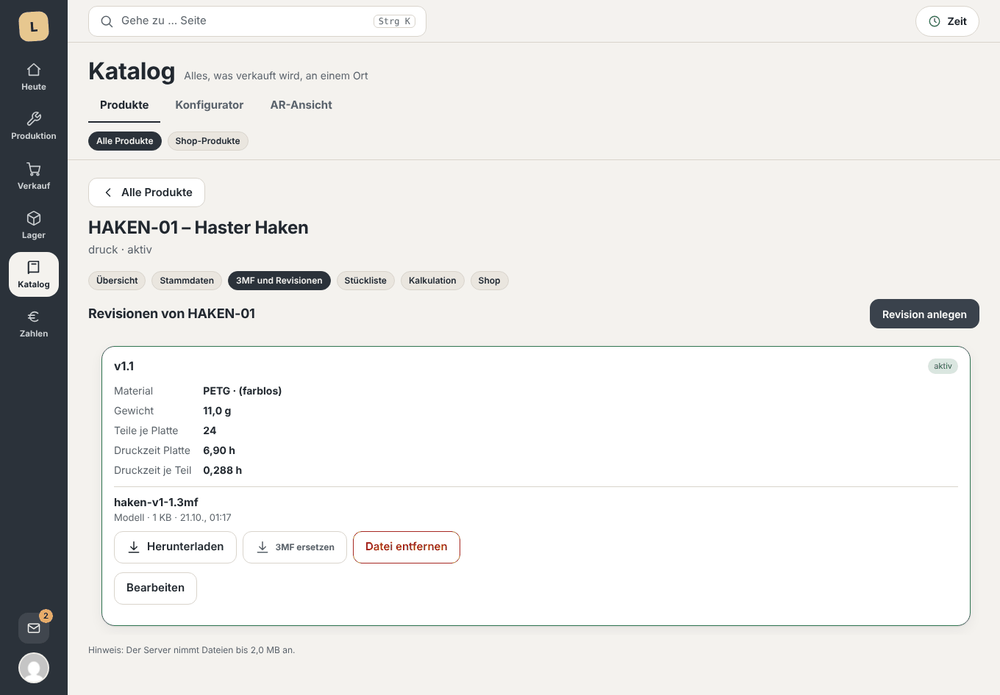
haken-v1-1.3mf.v1.2. Zweimal dieselbe Version je Produkt geht nicht.Hängt an der Revision eine ungeslicte Projektdatei, kann das ERP sie für den Plan (A.3) verwenden. Hängt dort eine geslicte Druckdatei, kann der Drucker sie direkt ausführen. Das Produkt wird in beiden Fällen als mit 3MF gezählt.
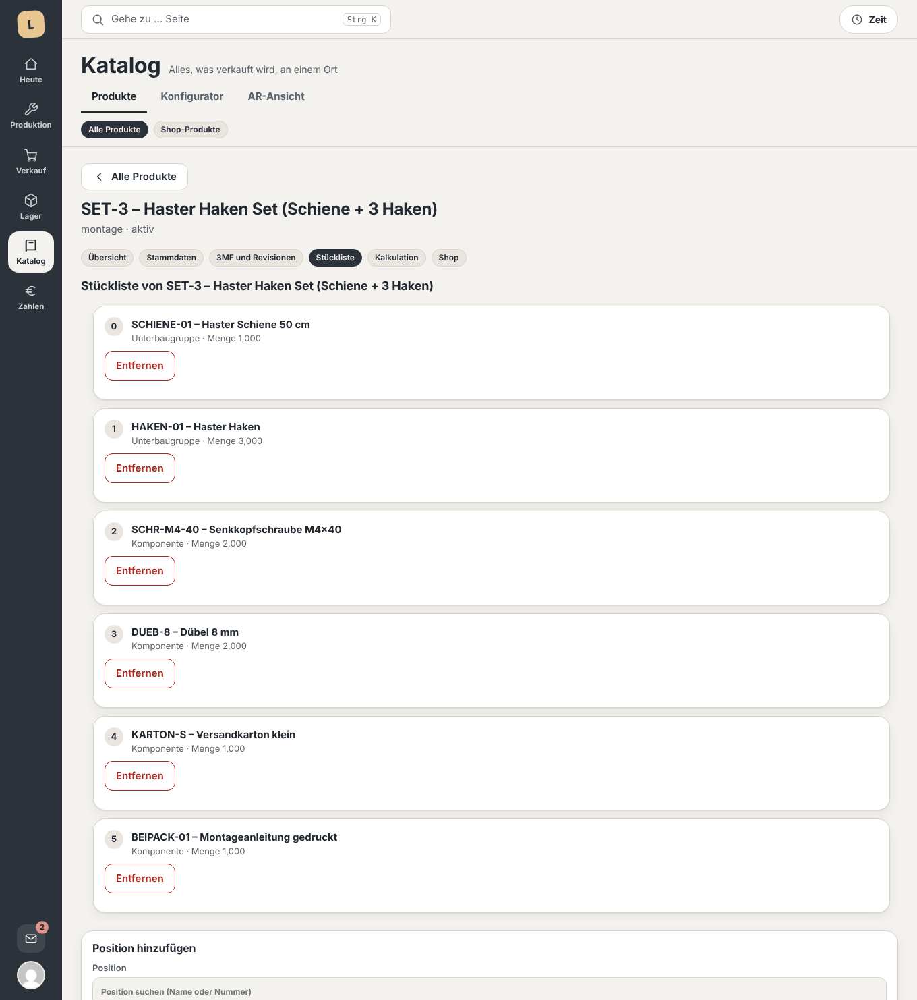
Wenn du versuchst, das Set in die Stückliste des Sets zu legen, weist das ERP das ab. Das ist kein Fehler, sondern verhindert eine Rechnung, die nie zu Ende käme.
Das tust du Das macht das ERP Außerhalb (Drucker, Bank, Post, Lieferant) Ergebnis
Für jedes Produkt, das im Shop steht, gibt es ein Etikett mit Produktname, einem Foto des Moduls (das Produktbild aus dem Shop) und der Artikel-Nr. Es klebt am Modul, am Karton oder am Regal. Dafür braucht es das Recht Etikettendrucker; ohne es fehlt die Karte.
Hat das Shop-Produkt kein Produktbild, druckt das ERP das Etikett ohne Foto, nur mit Name und Artikel-Nr. Der Name stammt aus dem Shop; ist er lang, wird er auf bis zu drei Zeilen umgebrochen. Ändere Name oder Bild im Shop, gilt es beim nächsten Druck.
Die Reiter Kalkulation und Shop behandelt Kapitel D.9: Herstellkosten, Preisebenen und die Übertragung des Preises in den Shop.
Lager → Bestand → Lager
Das tust du Das macht das ERP Pflicht oder Ausnahme Ergebnis
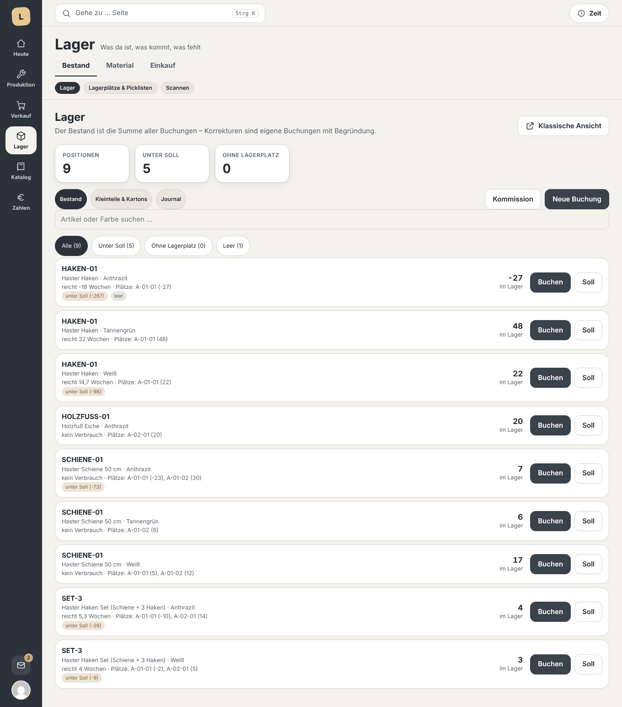
Jede Zahl hier ist die Summe aller Bewegungen zu diesem Artikel. Es gibt nichts, was man „verstellen“ könnte. Stimmt eine Zahl nicht, fehlt eine Buchung oder ist eine zu viel da – such nach der Bewegung, nicht nach einem Bestandsfeld.
Die Auswahl über der Liste hat drei Ansichten: Bestand, Kleinteile & Kartons (Schrauben, Dübel, Verpackung; hier legst du sie auch an, Kapitel A.15) und Protokoll (alle Bewegungen).
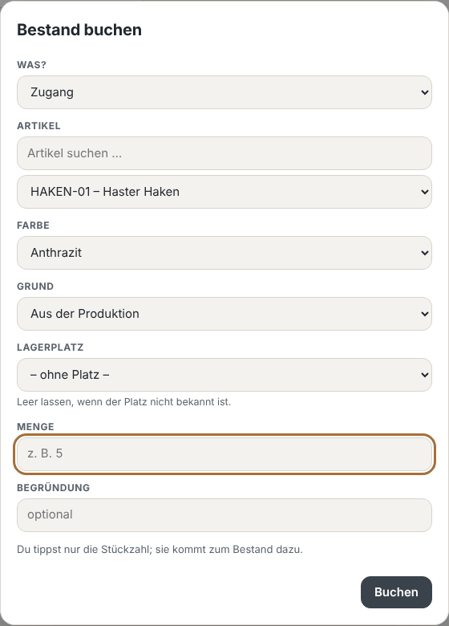
| Was? | Wann | Was du eingibst |
|---|---|---|
| Zugang | Etwas kommt zum Bestand dazu, z. B. aus der Produktion oder als Retoure | Nur die Stückzahl – sie kommt dazu |
| Abgang | Etwas verlässt das Lager ohne Verkauf, z. B. als Muster oder Ausschuss | Nur die Stückzahl – sie geht ab |
| Korrektur | Die Zahl im ERP stimmt nicht mit dem Regal überein (Inventur) | Die Differenz mit Plus oder Minus und eine Begründung (Pflicht) |
| Umlagerung | Die Ware wechselt den Platz; der Gesamtbestand bleibt gleich | Von Platz, nach Platz, Menge |
| Kommission | Ware geht zu einem Händler in Kommission oder kommt zurück | Händler, Vorgang, Menge – siehe Kapitel B.11 |
-2 ein.Im Journal steht jede Bewegung. Jede Zeile hat einen Storno-Knopf – auch hier wird nicht gelöscht, sondern gegengebucht.
Das Protokoll zeigt alle Bewegungen, nicht nur die letzten 200: seitenweise, neueste zuerst, mit Nummer und Person in jeder Zeile. Gefiltert wird nach
#1234), SKU, Artikelname, Notiz oder Stornogrund,Über der Liste stehen Anzahl, Summe der Zugänge, der Abgänge und der Saldo, passend zu den gesetzten Filtern. Ein Klick auf einen Artikel filtert auf diesen Artikel in dieser Farbe; im Bestand führt der Knopf Verlauf direkt ins gefilterte Protokoll. CSV lädt dieselbe Auswahl herunter (bis 10.000 Zeilen). Ansehen darf es, wer „Lager · Bestand“ hat; Stornieren nur die Betriebsleitung.
Der Knopf Soll in der Zeile legt fest, wie viel von diesem Artikel in dieser Farbe mindestens im Lager liegen soll. Fällt der Bestand darunter, meldet die Bedarfsplanung Bedarf (Kapitel A.3 und A.4). „Soll entfernen“ ist etwas anderes als Soll 0: Es meldet dann gar nicht mehr. Das Setzen von Sollbeständen ist Sache der Betriebsleitung.
Wareneingang, Umlagerung oder eine Korrektur direkt am Regal gehen auch am Handy: /betrieb-erfassen/ öffnen und oben auf den Reiter Lager tippen.
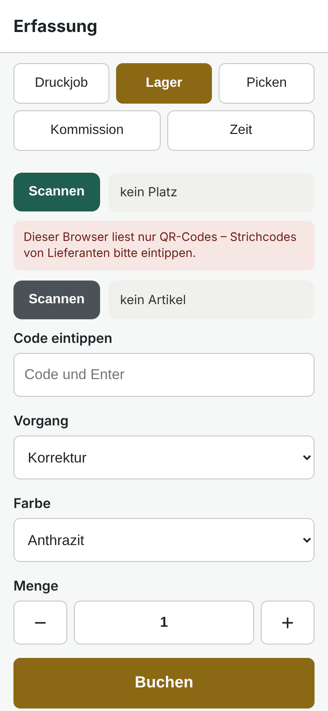
Steht diese Meldung oben auf der Seite, hat der Shop bei einer Bestellung keine Farbe mitgeliefert. Die Buchung ist trotzdem gemacht worden – sie hängt nur an keiner Farbe. Sag der Betriebsleitung Bescheid, damit das Farbattribut am Produkt ergänzt wird; anschließend lässt sich die Bewegung per Korrektur auf die richtige Farbe umbuchen.
Lager → Bestand → Inventur
Das tust du Das macht das ERP Ergebnis
Bei der Inventur zählst du, was wirklich im Regal liegt, und das ERP bucht die Unterschiede als Korrektur. Der Bestand bleibt dabei eine Summe aus Bewegungen (A.13): Es wird nichts überschrieben, es kommt eine Buchung dazu.
Die Zählliste gibt es auch als PDF, sortiert nach Lagerplatz. Als Blindzählung steht das Soll nicht darauf: Wer zählt, sieht die erwartete Zahl nicht und rechnet nicht unbewusst nach ihr. Mit einem Handscanner zählt es sich am schnellsten: Code scannen, die passende Zeile ist sofort zum Zählen bereit, nach Enter springt der Cursor zurück in die Suche.
Gebucht wird die Differenz zwischen deiner Zählung und dem Bestand zum Zeitpunkt des Zählens, nicht zum Zeitpunkt des Abschließens. Das ist der Trick, der Verkäufe während der Inventur schützt: Zählst du um 10:00 Uhr 18 Stück und um 10:30 Uhr geht eine Bestellung mit 2 Stück raus, ist der Bestand um 10:30 Uhr 16 – und das ist auch richtig. Würde das ERP am Ende gegen 16 vergleichen, buchte es eine Differenz von +2 und der Bestand stimmte nicht mehr. Jede Buchung trägt als Herkunft Inventur und eine Begründung im Änderungsprotokoll, genau wie eine Korrektur von Hand. Das Protokoll der Inventur lässt sich als CSV herunterladen.
Aus dem Bewegungskonto rechnet das ERP, wie viel zu einem beliebigen Stichtag im Lager lag, beim Händler (Kommission) und unterwegs, jeweils mal Herstellkosten. Wählst du heute, zählen zusätzlich Kleinteile und Kartons (Stückpreis aus dem Einkauf) und das Filament (Restmenge mal Preis je kg der Charge) mit. Die Liste lässt sich als CSV laden. Sichtbar ist sie nur mit dem Recht Preise, Kosten und Löhne sehen.
Die Differenz sagt, dass etwas fehlt, nicht warum. Bevor du abschließt, lohnt ein Blick ins Lagerprotokoll (A.13) bei den größten Abweichungen: Oft steht dort der vergessene Zugang oder die doppelt gebuchte Platte.
Lager → Einkauf → Einkauf · Lager → Einkauf → Bedarf · Lager → Einkauf → Bestellungen an Lieferanten
Das tust du Das macht das ERP Außerhalb (Drucker, Bank, Post, Lieferant)
Der Einkauf hat drei Seiten, die aufeinander aufbauen: Einkauf sagt, was nachbestellt werden sollte und was schon unterwegs ist. Bedarf (A.4) sagt, was die Produktion braucht. Bestellungen an Lieferanten bündelt Einkäufe zu einem Bestellschein, den du dem Lieferanten schickst.
In der Spalte Bestellen stehen alle Vorschläge für Kleinteile, Komponenten und Filament: mit Bestand, Reichweite, Meldegrenze und Bestellmenge. Ist beim Teil ein Bestell-Link hinterlegt, öffnet Zum Lieferanten ↗ die Artikelseite in einem neuen Tab. Den Link pflegst du im Lager beim Bearbeiten des Kleinteils oder Kartons. Mit Bestellt ✓ wandert der Vorschlag nach Unterwegs und wartet dort auf den Wareneingang.
Oben steht Bestellung vermerken – auch ohne Meldebestand: Kleinteil oder Verbrauchsmaterial wählen, Menge, Lieferant, Preis und Liefertermin eintragen, Bestellt ✓. Menge, Lieferant und Preis sind aus den Stammdaten vorbelegt. Das brauchst du, wenn du etwas bestellst, bevor das ERP es für knapp hält.
BE-JJJJ-0001.Bestellt ist nicht geliefert. Weder „Bestellt ✓“ noch ein Bestellschein verändern den Bestand. Erst der Wareneingang (A.9) bucht zu, und ein zweiter Klick auf denselben Eingang wird abgewiesen.
Im Lager, Ansicht Kleinteile & Kartons, gibt es Kleinteil anlegen, Karton anlegen und je Zeile Bearbeiten: Code, Bezeichnung, Kategorie, Lieferant, Gebinde und Preis, Bestell-Link, Lieferzeit, Standardplatz. Der Bestand wird nur beim Anlegen gesetzt; danach ändert ihn ausschließlich Korrigieren mit Begründung. Beim Bearbeiten lässt ein leeres Feld den gespeicherten Wert stehen. Kleinteile verlangen dasselbe Recht wie Artikel & Revisionen, Kartons wie Material.
Produktion → Journal → Qualität
Das tust du Das macht das ERP Außerhalb (Drucker, Bank, Post, Lieferant) Pflicht oder Ausnahme Ergebnis
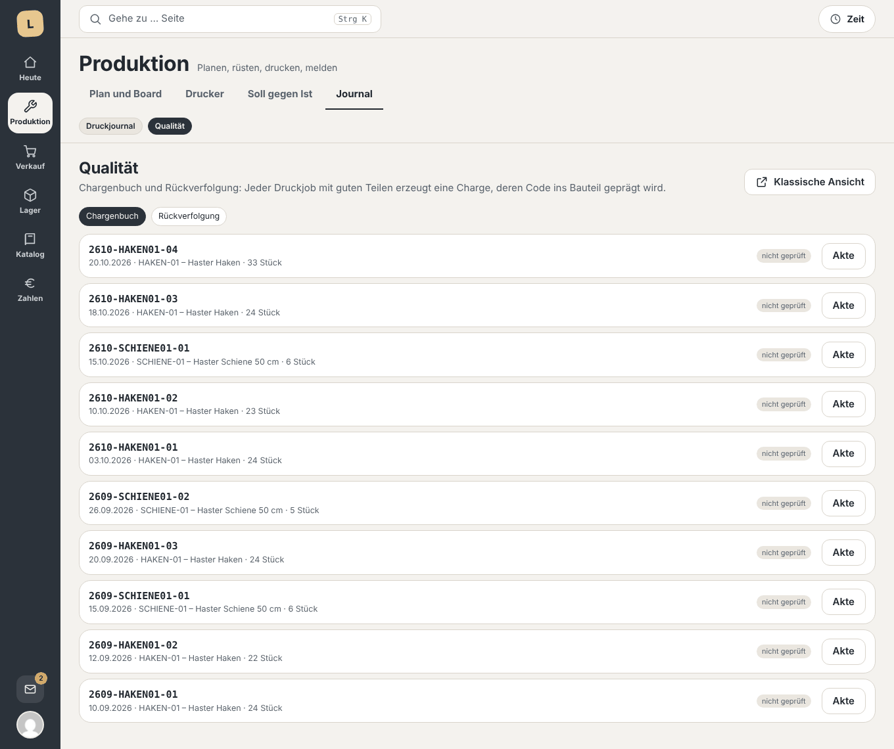
Klick bei einer Charge auf Akte, um sie zu öffnen. Dort steht alles beisammen: Artikel, Revision, Material, Filamentcharge, Drucker, Stückzahl, Datum – und welche Bestellungen betroffen sind. Von dort erzeugst du den GPSR-Nachweis als PDF – das Dokument, das du beiliegen lässt oder auf Nachfrage vorzeigst. Den Chargencode prägst du ins Bauteil und übernimmst ihn in den Slicer.
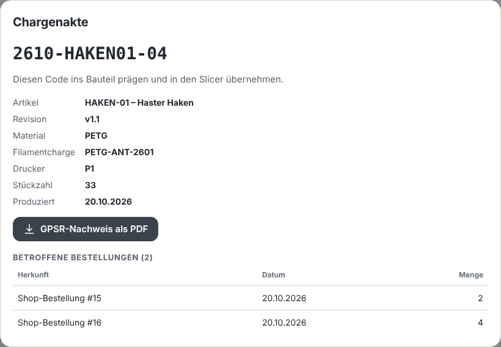
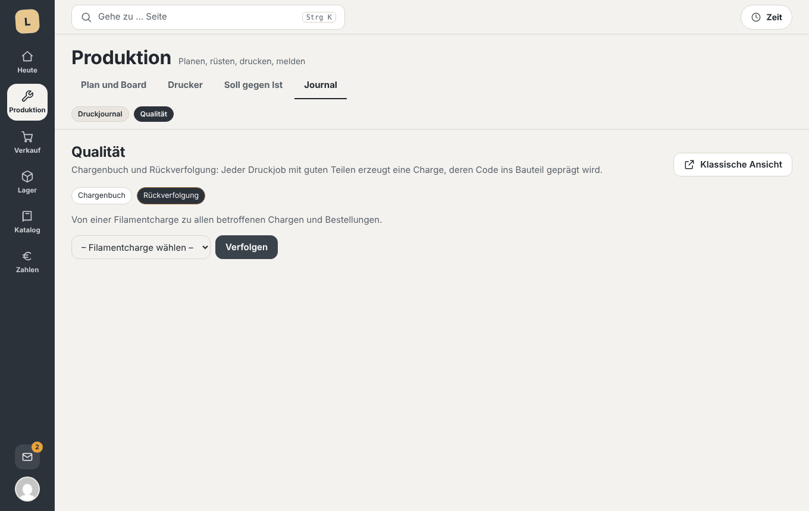
Das ist der Weg, wenn eine Rolle Material sich als schlecht herausstellt: Du siehst in einem Schritt, welche Kunden betroffen sind – und musst nicht raten.
Produktion → Soll gegen Ist → Kapazität
Das tust du Das macht das ERP Ergebnis
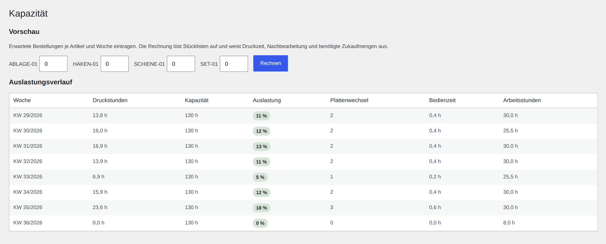
Trag unter Vorschau für eine Woche ein, wie viele Bestellungen du je Produkt erwartest, und klick auf Rechnen. Das ERP löst die Stücklisten auf und sagt dir, wie viele Druckerstunden und wie viele Handstunden das kostet – und ob das in eine Woche passt. Nutz das vor Weihnachten oder vor einem Markt, bevor du zusagst. Die Kapazität kommt aus den Geräten, die in Betrieb sind, und den Nettostunden je Gerät.
Das tust du Das macht das ERP Pflicht oder Ausnahme
Produktion → Soll gegen Ist → Soll gegen Ist
Hier siehst du, wie gut Plan und Wirklichkeit zusammenpassen: Die gestempelte Druck- und Rüstzeit gegen die Planzeit. Sobald Platten gemeldet sind, erscheinen sie in dieser Liste (die letzten 90 Tage). Wer das Recht Stammdaten ändern hat, kann dort die gemessene Zeit als neue Planzeit in die Revision übernehmen – dann folgen Plan und Kalkulation der Wirklichkeit.
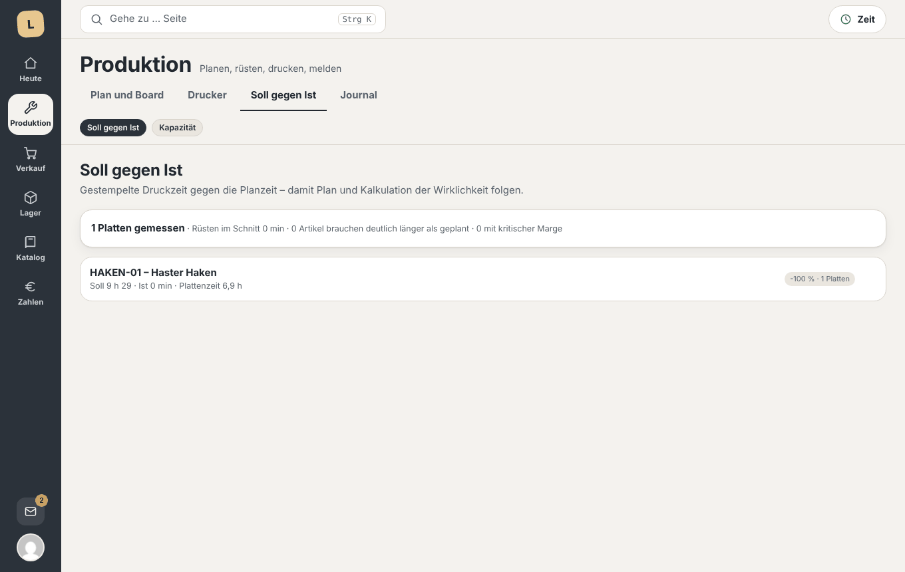
Die Seite wurde neu aufgebaut. Gemessen wird die Druckzeit je Teil aus reinen Platten (nur ein Artikel darauf), und zwar als Median statt Mittelwert, damit ein einzelner Ausreißer das Bild nicht verzerrt. Gemischte Platten zählen nur, wenn es für den Artikel keine reine gibt, und sind als geschätzt markiert. Fehlgeschlagene Drucke und Platten ohne Druckzeit werden nicht gewertet, aber unter Datenqualität gezählt – so siehst du, wie belastbar die Zahl ist.
Für das Rüsten gibt es das Rüst-Soll: Die Einstellung Geplante Rüstzeit je Platte (Workflow → Einstellungen → Rüsten) steht neben dem Ist (Median) und der Abweichung, auch je Drucker. Alte Platten ohne Herkunftsangabe zählen für das Rüsten nicht.
Produktion → Tagesplan → Tagesplan · Produktion → Tagesplan → Nachtschicht
Das tust du Das macht das ERP Außerhalb (Drucker, Bank, Post, Lieferant) Pflicht oder Ausnahme
Der Tagesplan beantwortet die Frage „Was läuft heute auf welchem Drucker?“. Er zeigt, was am Tag gedruckt wird, was in die Nacht gehört und was du am Tag noch bestücken musst, dazu den Stand des Betriebs. Die Nachtschicht ist die Seite, die dir die Entscheidung für den Abend abnimmt.
Über Nacht wechselt niemand die Platte. Jeder freie Drucker bekommt deshalb genau eine – und zwar die, die am besten passt. Der Planer rechnet mit den freigegebenen Platten aus dem Workflow (A.3) und dem Live-Zustand der Bambu-Drucker (A.11). Je Drucker bevorzugt er die Platte,
Drucker, die noch bis in die Nacht drucken oder offline sind, stehen mit dem Grund daneben. Kurze Platten bleiben für den Tag liegen, weil sich ein Plattenwechsel am Abend dafür nicht lohnt.
Feierabend und Aufstehzeit stellst du auf der Seite ein. Eine Stunde vor dem Feierabend schickt das ERP den Plan als Push-Nachricht aufs Handy. Die Meldungsart heißt Nachtschicht und ist von selbst aus: Jede Person schaltet sie im eigenen Profil ein. Die Seite braucht das Recht Nachtschicht.
Der Plan bucht nichts und startet nichts. Er sagt, welche Platte du an welchem Drucker rüsten solltest. Gedruckt wird erst, wenn du sie wie gewohnt freigibst und die Platte am Drucker bestätigst (A.3).
Das tust du Das macht das ERP Pflicht oder Ausnahme
| Meldung oder Beobachtung | Was wirklich los ist | Was du tust |
|---|---|---|
| „Bei Ausschuss ist eine Fehlerursache Pflicht“ | Du hast weniger gute als geplante Teile eingetragen, aber keine Ursache gewählt | Fehlerursache auswählen, nochmal buchen |
| „Für diesen Artikel ist keine Revision hinterlegt“ | Der Artikel hat kein freigegebenes Druckprofil | Kapitel A.12 – oder die Betriebsleitung fragen |
| „Dieser Artikel wird nicht gedruckt“ | Du hast im Druckjournal ein Set oder einen Zukaufartikel gewählt | Sets über einen Fertigungsauftrag (Kapitel A.8) |
| „Die Wartung ist noch nicht vollständig“ | In der Checkliste fehlen Haken | Die genannten Punkte machen und abhaken |
| „Es können nicht mehr Teile gut sein als geplant waren“ | Zahlendreher in einem der beiden Felder | Beide Zahlen prüfen |
| „Der Chargencode ist bereits vergeben“ | Diesen Code gibt es schon | Laufende Nummer erhöhen |
| Ein Platz oder Reiter fehlt | Dein Rechteprofil deckt ihn nicht ab | Person mit Vollzugriff fragen |
| Der Bestand stimmt nicht mit dem Regal überein | Eine Buchung fehlt oder ist doppelt | Kapitel A.13, Korrektur mit Begründung |
| Im Workflow fehlt für einen Artikel der Knopf In Plan aufnehmen | An der aktiven Revision hängt keine Projektdatei (3MF) | Datei anhängen (Kapitel A.12) |
| Beim Plan steht „Kein Bambu-Drucker angelegt“ | Platten lassen sich nur auf einen angelegten und mit einem Gerät verknüpften Bambu-Drucker einplanen | Betriebsleitung: Kapitel A.11 und D.20 |
| Ein Drucker steht auf offline | Die Bridge meldet sich nicht | Pi und Netz prüfen lassen (Kapitel D.20) |
| Eine Platte steht auf Wird gesliced und „wartet seit … auf den Slicing-Worker“ | Kein Worker holt den Auftrag ab | Nach ein paar Minuten der Verwaltung Bescheid sagen |
| Eine Platte steht auf Fehlgeschlagen | Der Slicer konnte sie nicht verarbeiten – der Grund steht unter dem Status | Grund lesen, weitergeben, dann Erneut slicen |
| Der QR-Aufkleber führt auf „Seite nicht gefunden“ | Die Adressen sind nach einem Update noch nicht neu registriert | Der Verwaltung sagen: Einmal die Seite /erp öffnen oder die Permalinks neu speichern |
Das tust du Pflicht oder Ausnahme
Für alle, die Pakete packen. Von der offenen Bestellung bis zum Paket in der Kiste für die Post – in einem durchgehenden Ablauf, Schritt für Schritt.
Das tust du Ergebnis
Nach Lagerplatz sortiert: einmal durchs Regal statt fünfmal.
Ein Paket entsteht immer in derselben Reihenfolge. Wenn du nur eine Sache aus dieser Anleitung behältst, dann diese fünf Schritte:
| # | Schritt | Wo | Ergebnis |
|---|---|---|---|
| 1 | Pickliste erzeugen | Computer, Verkauf → Bestellungen → Picklisten | Eine Liste, sortiert nach Lagerplatz |
| 2 | Picken | Handy oder Computer, Verkauf → Bestellungen → Picklisten | Ware auf dem Packtisch, Bestand gebucht |
| 3 | Packen | Packtisch | Karton mit Ware und Beipackzettel |
| 4 | Lieferschein drucken | Computer, Verkauf → Bestellungen → Versand | PDF, kommt ins Paket |
| 5 | Versandlabel, Versendet ✓ | Computer, Verkauf → Bestellungen → Versand | Paket ist adressiert und frankiert; der Lagerabgang ist gebucht |
Die Pickliste ist nicht nach Bestellungen sortiert, sondern nach Lagerplatz. Du läufst einmal durchs Regal statt fünfmal. Erst am Packtisch wird die Ware wieder auf Bestellungen verteilt. Bei einer Bestellung merkt man den Unterschied nicht – bei zehn schon.
Das tust du Das macht das ERP Außerhalb (Drucker, Bank, Post, Lieferant) Ergebnis
/erp anhängen, also zum Beispiel lindenweg16.de/erp, dann Enter.Verkauf → Bestellungen → Versand heißt: links auf Verkauf, oben auf den Reiter Bestellungen, darunter auf den runden Knopf Versand (Kapitel 2 erklärt die Wegangaben).
Verkauf → Bestellungen → Picklisten
Das tust du Das macht das ERP Pflicht oder Ausnahme
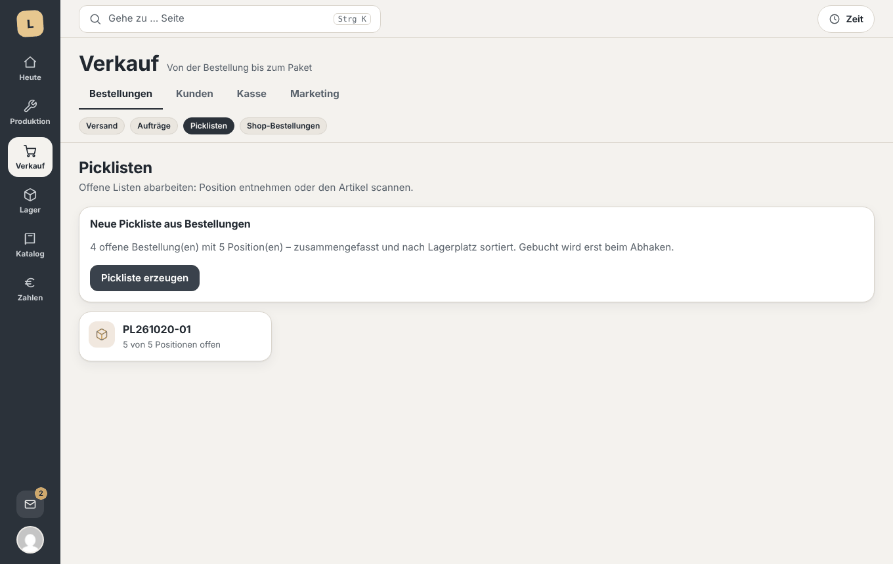
PL261020-01 und ist nach der Spalte Platz sortiert – das ist deine Laufreihenfolge.Die Liste fasst gleiche Artikel in gleicher Farbe zusammen; die Spalte Bestellung sagt weiter, zu welcher Bestellung eine Zeile gehört.
| Spalte | Bedeutung |
|---|---|
| Platz | Das Fach, aus dem du greifst – der Code steht auf dem Etikett am Regal |
| Artikel | Artikelnummer und Bezeichnung; Kleinteil markiert Schrauben, Dübel und Ähnliches |
| Farbe | Die Farbe, die entnommen werden soll – nicht raten, es gibt mehrere |
| Bestellung | Zu welcher Shop-Bestellung diese Zeile gehört, z. B. #19 |
| Soll | Wie viele Stück |
| Entnommen | Wie viele du schon abgehakt hast. Startet bei 0. |
Die Liste enthält alle offenen Bestellungen. Wenn du sofort noch einmal auf den Knopf drückst, hast du zwei Listen mit derselben Ware und pickst am Ende doppelt. Gibt es schon eine offene Liste aus Bestellungen, fragt das ERP vorher nach. Eine Liste, ein Durchgang. Erst wenn sie abgearbeitet ist, machst du die nächste.
Verkauf → Bestellungen → Picklisten
Das tust du Das macht das ERP Pflicht oder Ausnahme Ergebnis
Zum Picken nimmst du am besten das Handy mit ins Lager. Der Computer bleibt am Packtisch stehen. Es geht aber auch am Computer.
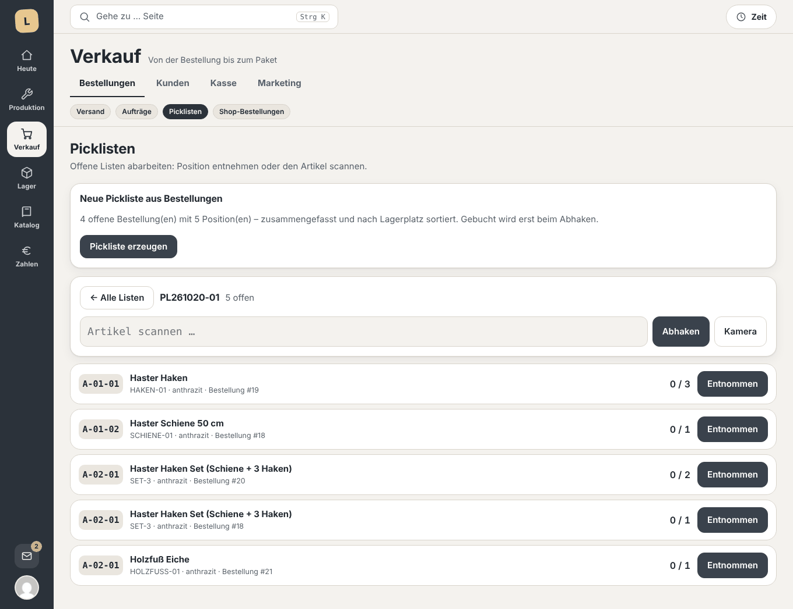
/betrieb-erfassen/ eintippen und oben den Reiter Picken wählen. Leg sie dir einmal als Lesezeichen auf den Startbildschirm – dann ist sie ein Fingertipp entfernt.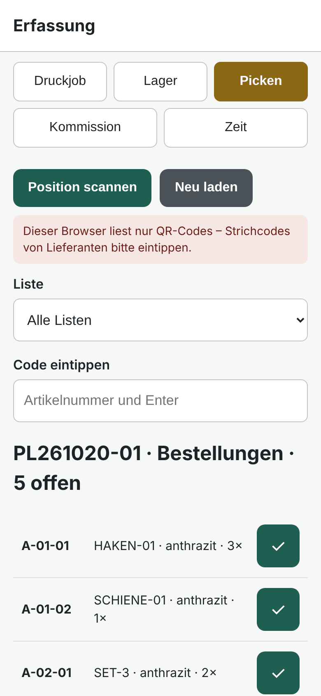
PL261020-01 · Bestellungen · 5 offen.Öffne die Liste und klick in der Zeile auf Entnommen, sobald du die Ware genommen hast. Die Zeilen stehen nach Platz sortiert, erledigte Zeilen rücken nach unten und zeigen erledigt. Oben im Feld Artikel scannen … kannst du mit einem Handscanner (der wie eine Tastatur schreibt) oder mit der Kamera arbeiten: Scannen, Abhaken klicken, fertig.
Statt auf den Haken zu tippen, kannst du auf Position scannen tippen und den QR-Code am Artikel oder am Fach mit der Kamera erfassen. Das ERP sucht sich die passende Zeile selbst und hakt sie ab. Vorteil: Du kannst nicht die falsche Zeile erwischen, weil du in der falschen Zeile geguckt hast. Auch Strichcodes von Lieferanten (EAN) werden erkannt, wenn sie am Artikel hinterlegt sind.
Diese Meldung ist kein Fehler. Sie sagt: Die Kamera dieses Handys erkennt in dieser Ansicht nur QR-Codes, keine Strichcodes vom Lieferanten. Strichcodes tippst du bei Code eintippen ein und drückst Enter.
Wenn im Fach weniger liegt, als auf der Liste steht, nimm mit, was da ist, und sag es weiter. Der Bestand ist dann falsch und muss korrigiert werden – wie das geht, steht in Kapitel A.13. Wer stillschweigend weiterpickt, hinterlässt einen Fehler, der beim nächsten Mal wieder zuschlägt.
Das tust du Das macht das ERP
Am Packtisch verteilst du die gepickte Ware auf die Bestellungen. Die Spalte Bestellung auf der Pickliste sagt dir, was zusammengehört. Alternativ öffnest du die Bestellung im ERP: Auf Verkauf → Bestellungen → Versand klickst du auf den Namen der Bestellung. Dort steht eine Packliste mit Kästchen zum Abhaken.
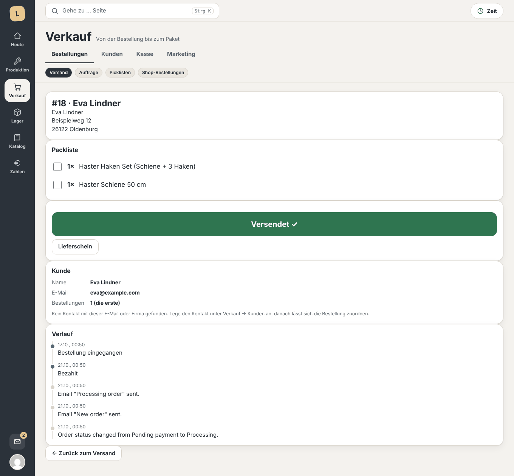
Du musst nicht eintragen, dass du einen Karton verbraucht hast. Verbrauchsmaterial wird je Bestellung pauschal abgezogen. Wenn der Vorrat knapp wird, meldet sich das ERP von selbst auf Heute und im Beschaffungsalarm unter Lager → Material.
Verkauf → Bestellungen → Versand
Das tust du Das macht das ERP Ergebnis
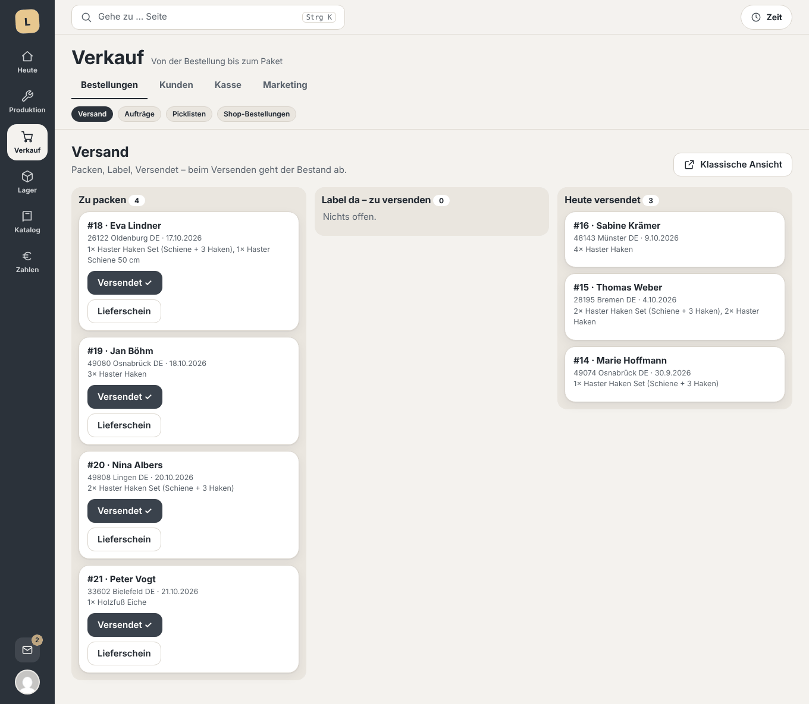
#18, #19 und so weiter, mit dem Namen des Empfängers.Auf dem Lieferschein stehen keine Preise – die Rechnung bekommt der Kunde getrennt. Das ist Absicht und richtig so, besonders wenn ein Paket als Geschenk geht.
Die Pickliste ist der Zettel fürs Lager: Artikel, Menge, Lagerplatz, keine Anschrift. Der Lieferschein liegt in der Kiste: Anschrift und Inhalt, keine Preise. Das Label klebt außen drauf – nur das kostet Geld.
Verkauf → Bestellungen → Versand
Das tust du Das macht das ERP Außerhalb (Drucker, Bank, Post, Lieferant)
Falsches Label? Solange nicht abgeholt: Stornieren.
Auf jeder Karte in Zu packen stehen die Schritte, die noch fehlen. Welche das sind, hängt davon ab, ob ein DHL-Zugang eingerichtet ist (Kapitel D.4):
| Ist DHL eingerichtet? | Was du auf der Karte siehst |
|---|---|
| Ja | Ein Formular mit Produkt, Gewicht (in Gramm), dem Haken sperrig und dem Knopf Label erzeugen. Danach rückt die Karte nach Label da – zu versenden; dort stehen Versendet ✓, Label öffnen, Lieferschein und Stornieren. |
| Nein | Nur Versendet ✓ und Lieferschein. Das Label kommt dann von woanders (zum Beispiel einem Versandplugin); die Sendungsnummer trägst du dort ein. |
Die Sendungsnummer geht im selben Moment in die Sendungsverfolgung: Der Kunde sieht sie in seinem Konto, ohne dass jemand sie abtippt. Auf der Karte steht sie in Schreibschrift mit dem Zustand der Sendung.
Wenn das Paket die Werkstatt verlässt, klickst du auf Versendet ✓ und bestätigst die Rückfrage („Als versendet melden? Dabei wird der Lagerabgang gebucht.“). Die Bestellung wird abgeschlossen, der Lagerabgang wird gebucht, die Rechnung entsteht, und die Karte wandert nach Heute versendet.
Mit dem Klick ist die Sendung frankiert. Falsches Produkt, falsche Adresse, doppelt geklickt? Dann in derselben Karte auf Stornieren – solange die Sendung nicht abgeholt ist, wird sie nicht berechnet. Danach nicht mehr. Der Vorgang bleibt als storniert stehen, damit die Abrechnung der DHL nachvollziehbar bleibt.
Die Meldung sagt, woran es liegt. Steht dort etwas von Zugang abgewiesen, ist nicht das Paket schuld, sondern die Einstellung: Die Meldung an den weitergeben, der die Einstellungen pflegt (Kapitel D.4). Steht dort etwas zu Adresse, Gewicht oder Abrechnungsnummer, ist die Sendung gemeint.
„DHL-Sandbox aktiv“ heißt: Das Label sieht echt aus, ist aber keine gültige Frankierung. Nicht aufkleben und wegschicken – Bescheid sagen, wer die Einstellungen pflegt.
… storniert das ERP von selbst die Rechnung samt Einnahmebuchung und bucht den Lagerabgang zurück (Kapitel D.27). Wenn die Ware schon beim Kunden ist, ist das nicht gewollt – dann sagt die Betriebsleitung, wie sie die Retoure bucht.
Das tust du Das macht das ERP Außerhalb (Drucker, Bank, Post, Lieferant) Ergebnis
Es gibt zwei Listen. Beide liegen unter Verkauf → Bestellungen:
Verkauf → Bestellungen → Shop-Bestellungen
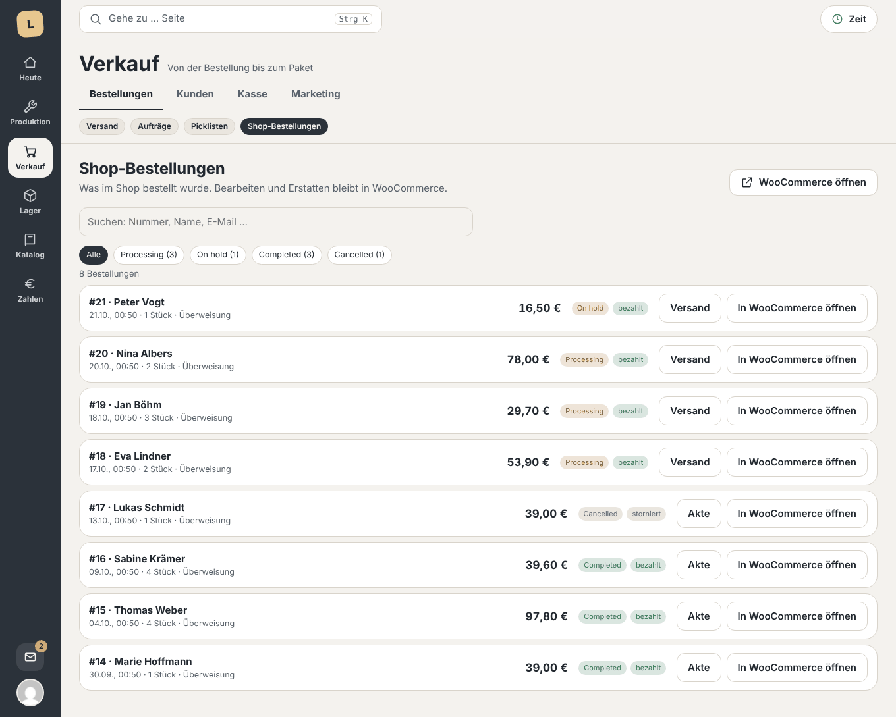
Über Ansehen öffnet sich die Bestellung im ERP: Adressen, Positionen, Summe, bisherige Erstattungen und Notizen; Status ändern, Notizen schreiben und Erstatten gibt es dort mit den passenden Rechten (Kapitel D.15). In WooCommerce öffnen führt weiter in den Shop. Bei offenen Bestellungen steht daneben Versand – das öffnet die Bestellung zum Packen (B.5). Bei abgeschlossenen steht Akte.
Verkauf → Bestellungen → Aufträge
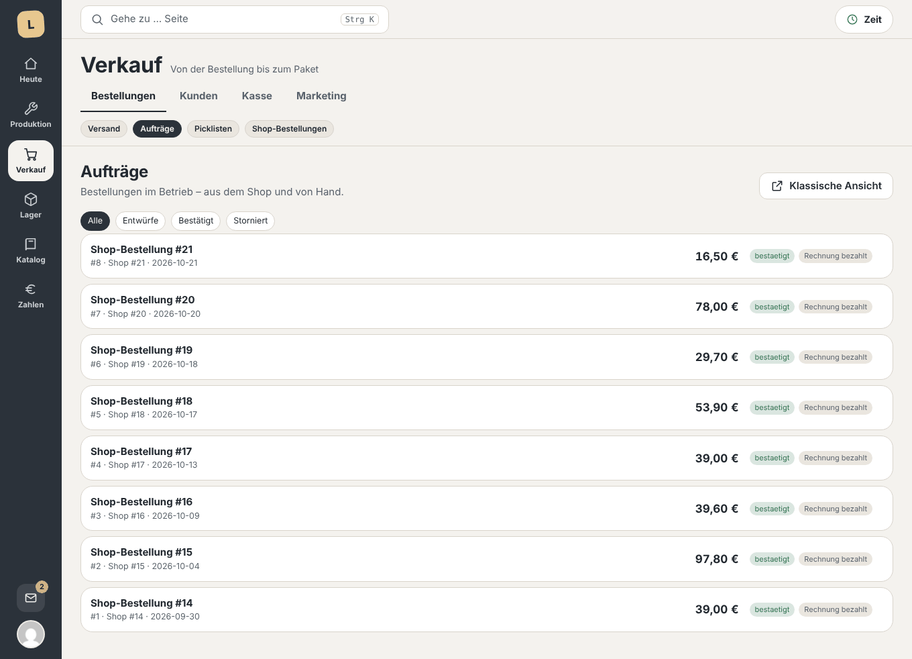
| Schild | Bedeutung |
|---|---|
| entwurf | Eine Anfrage, noch nicht bestätigt. Erst mit Bestätigen entstehen Lagerabgang und offener Posten. Das betrifft Nachbestellungen von Händlern (B.10) und manuell erfasste Entwürfe. |
| bestaetigt | Gilt, der Lagerabgang ist gebucht |
| storniert | Zurückgenommen |
| Rechnung bezahlt / offen / überfällig | Wie weit die Rechnung ist. Überfällig ist orange und taucht auf Heute auf. |
Die Minuten, die das Packen einer Bestellung dauert, landen in der Kennzahl „Ø Handlingzeit“ unter Zahlen → Berichte. Aus ihr wird sichtbar, welche Bestellart wirklich Arbeit macht – und daran hängt später der Preis. Eingetragen wird sie in der klassischen Ansicht der Bestellungen; eine grobe Schätzung ist besser als ein leeres Feld.
Das tust du Das macht das ERP Pflicht oder Ausnahme
Für Barverkauf am Markt, Abholung ab Werkstatt oder eine Bestellung, die per Telefon kam, gibt es zwei Wege:
Der Rabatt für Händler wird dabei automatisch aus der Rabattstaffel zum Bestelldatum aufgelöst und an der Bestellung festgeschrieben. Ändert sich die Staffel später, bleibt diese Bestellung, wie sie war (Kapitel D.7).
Eine manuelle Bestellung bucht genauso Ware aus dem Lager wie eine Shop-Bestellung. Erfasse deshalb nur, was wirklich über den Tisch gegangen ist – und nicht zur Übung.
Das tust du Das macht das ERP Außerhalb (Drucker, Bank, Post, Lieferant)
Händler bekommen eine Karte mit QR-Code. Wer sie scannt, landet auf einer schlichten Seite, wählt Mengen und schickt sie ab. Bei uns erscheint das dann als Entwurf unter Verkauf → Bestellungen → Aufträge (Filter Entwürfe).
Erst mit dem Klick auf Bestätigen entstehen der Lagerabgang und der offene Posten. Vorher ist es nur eine Anfrage. Damit kann kein Händler versehentlich deinen Bestand leerbuchen.
Erzeugt wird die Karte in der Kundenakte (Kapitel B.11), Abschnitt Nachbestell-Link.
Gespeichert wird nur seine Prüfsumme, nicht der Link selbst. Druck die Karte also sofort aus oder gib die Adresse gleich weiter. Ist sie weg, erzeugst du einen neuen Link – der alte wird damit ungültig. Der Link ist für den Händler persönlich: ohne Anmeldung, nicht indexierbar, gedrosselt, und er zeigt weder Bestände noch Umsätze noch fremde Konditionen.
Verkauf → Kunden → Kontakte / B2B
Das tust du Das macht das ERP Ergebnis
Hier stehen Händler, Vereine, Firmen und Interessenten. Jeder bekommt eine Akte, in der alles zusammenläuft: Stammdaten, Konditionen, Bestellungen, Kommissionsware und Gespräche.
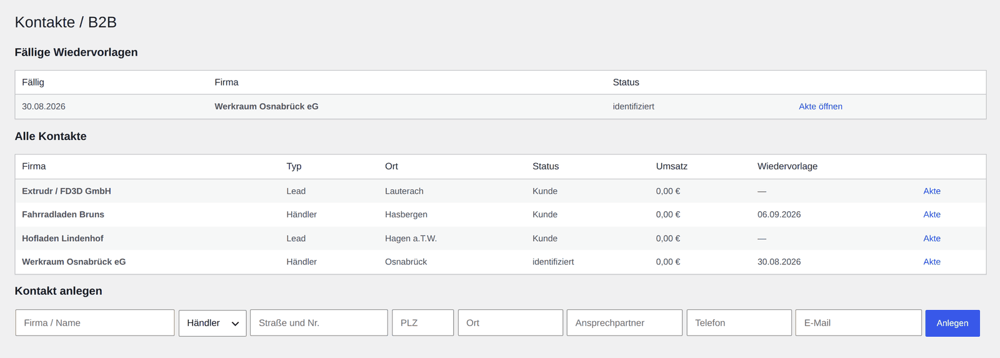
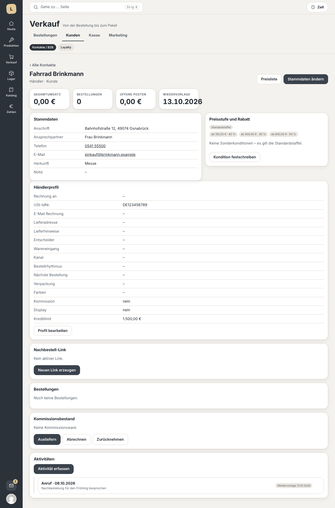
| Abschnitt | Was du damit machst |
|---|---|
| Stammdaten ändern | Anschrift, Ansprechpartner, Kontaktdaten, Typ und Status (identifiziert → angesprochen → Muster abgegeben → Interesse → Kunde), Wiedervorlage. |
| Preisliste | Öffnet die Händlerpreisliste: Händlerpreise netto, Mengenrabatt-Staffel und Zahlungsziel des Kunden – druckbar und als PDF speicherbar. |
| Preisstufe und Rabatt | Zeigt die Standardstaffel. Kondition festschreiben legt eine eigene Vereinbarung an. Sie gilt ab einem Datum; ältere Bestellungen bleiben unverändert. |
| Händlerprofil | USt-IdNr., Rechnungs- und Lieferadresse, Lieferhinweise, Entscheider, Wareneingang, Bestellrhythmus, nächste erwartete Bestellung, Verpackung, Farben, Kommission vereinbart, Display, Kreditlimit. Über Profil bearbeiten. Überschreiten offene Posten das Kreditlimit, erscheint eine Warnung. |
| Nachbestell-Link | Erzeugt den persönlichen Link und die Karte mit QR-Code (Kapitel B.10). |
| Bestellungen | Alle zugeordneten Bestellungen. Auf der Bestellseite schlägt das ERP einen Kontakt mit gleicher E-Mail oder Firma vor – ein Klick ordnet zu, Zuordnung lösen hebt es auf. |
| Kommissionsbestand | Ware, die beim Händler liegt. Ausliefern und Zurücknehmen verschieben nur zwischen Lager und Händler; Abrechnen verkauft, und zwar als ein offener Posten über die ganze Lieferung, damit die Rabattstaffel auf den Gesamtwert greift. |
| Aktivitäten | Besuche, Anrufe, Mails, Muster. Aktivität erfassen verlangt ein Datum zum Nachfassen – eine Aktivität ohne Wiedervorlage versandet. |
| Mailverkehr | Die letzten Mails von und an den Kontakt (Adresse der Akte und E-Mail für Rechnungen) aus den Postfächern, die du lesen darfst – → gesendet, ← empfangen. Ein Klick öffnet die Mail in der Mailbox, Mail schreiben eine neue an den Kontakt. Auch ein Klick auf die E-Mail-Adresse bei den Stammdaten öffnet den ERP-Mailer statt des Mail-Programms. Ohne Recht auf die Mailbox fehlt die Karte. |
| Zahlungserinnerung schreiben | Erscheint bei überfälligen Posten. Das ERP bereitet einen Mailtext vor, den du ändern kannst. Nach dem Senden steht eine Aktivität mit Wiedervorlage in einer Woche in der Akte. |
Neben den Aktivitäten zeigt die Akte eine Karte Angebote, Mahnungen, Reklamationen des Kontakts (je nach Recht). Die Schritte dahinter stehen in den Kapiteln B.12, D.12 und B.13; das Nachfassen bei Stammkunden in Kapitel B.14.
Verkauf → Angebote
Das tust du Das macht das ERP Außerhalb (Drucker, Bank, Post, Lieferant)
Ein Angebot ist ein Versprechen mit Preis, das erst mit der Zusage des Kunden zum Auftrag wird. Das ERP führt es von der ersten Position bis zum bestätigten Auftrag durch.
Nimmt der Kunde an, legst du mit einem Klick einen bestätigten Auftrag an. Zahlungsziel kommt aus der Kondition, der Lagerabgang wird gebucht, der Auftrag erscheint unter Verkauf → Bestellungen → Aufträge (B.8). Die Angebotsnummer hat den Nummernkreis AN-JJJJ-0001.
Angebote kurz vor Ablauf stehen in der täglichen Übersichtsmail (D.14). In der Kundenakte zeigt eine Karte Angebote, Mahnungen, Reklamationen alles, was zu diesem Kontakt gehört.
Verkauf → Kunden → Reklamationen
Das tust du Das macht das ERP Außerhalb (Drucker, Bank, Post, Lieferant) Ergebnis
Eine Reklamation ist ein Fall mit Anfang, Lösung und Ende. Das ERP hält fest, was zurückkam, was daraus wurde und warum – damit aus Beschwerden eine Auswertung wird.
Gehört der Fall zu einer Shop-Bestellung, führt ein Knopf direkt zur Bestellung, bei einer Gutschrift zum Erstatten (D.15). Die Rückzahlung bleibt eine eigene, bewusste Handlung – das Reklamationsformular zahlt nichts aus.
Das ERP zählt die Gründe und die häufigsten Artikel. Das ist der Teil, der sich auszahlt: Taucht ein Artikel immer wieder auf, liegt es an Material, Druckprofil oder Verpackung (A.16). Fälle, die länger als 14 Tage offen sind, stehen in der täglichen Übersichtsmail.
Verkauf → Kunden → Nachkauf
Das tust du Das macht das ERP Pflicht oder Ausnahme Ergebnis
Aus dem Bestellrhythmus jedes Händlers und Stammkunden (mindestens zwei Bestellungen) rechnet das ERP, wann die nächste Bestellung zu erwarten ist und wie sicher das ist. Die Seite zeigt, wer überfällig ist und wer verloren zu gehen droht, jeweils mit den Lieblingsartikeln.
Fällige Händler stehen auch im täglichen Überblick.
Der Rhythmus ist ein Durchschnitt. Bei Händlern mit sehr unregelmäßigen Bestellungen sagt die Seite das mit einer niedrigen Sicherheit. Behandle den Vorschlag als Erinnerung, nicht als Prognose.
Verkauf → Marketing → Affiliates
Das tust du Das macht das ERP Außerhalb (Drucker, Bank, Post, Lieferant) Pflicht oder Ausnahme
Meldet sich ein Influencer, der einen Code für seine Zuschauer haben möchte, legst du ihn hier an. Er bekommt einen eigenen Rabattcode: Seine Zuschauer sparen beim Einkauf, und er selbst bekommt eine Provision auf das, was über seinen Code verkauft wird. Das ERP zählt mit und sagt dir, was du ihm schuldest.
ANNA). Du kannst ihn ändern, etwa in ANNA10. Erlaubt sind Buchstaben ohne Umlaute, Ziffern, Bindestrich und Unterstrich, 3 bis 32 Zeichen.Ein Code steht in Videos, Beschreibungen und Stories. Deshalb lässt er sich nach dem Anlegen nicht mehr ändern, und einen Affiliate gibt es nicht zum Löschen. Willst du die Zusammenarbeit beenden, nimmst du bei Ändern den Haken „Code ist aktiv“ heraus: Der Gutschein im Shop wird abgeschaltet, die bisherigen Zahlen bleiben stehen. Gibt es den Code schon als anderen Gutschein im Shop, sagt dir das ERP das und legt nichts an.
Im selben Dialog steht das Pflichtfeld Konto im Shop: Ohne Konto lässt sich kein Affiliate anlegen. Mit der E-Mail-Adresse verknüpft das ERP den Affiliate mit diesem Konto und gibt ihm zusätzlich die Rolle Ambassador. Seine Kundenrolle bleibt, er kann also ganz normal weiter einkaufen.
Die Rolle selbst gibt keine Rechte im ERP oder im wp-admin, nur das Lesen. Sie ist das Kennzeichen; ob jemand die Seite sieht, hängt an der Verknüpfung mit dem Affiliate.
Im Dialog steht der Haken Willkommensmail mit Dank und Anleitung senden, bei neuen Affiliates vorgesetzt. Beim Speichern geht die Mail an die Adresse des Kontos. Sie sagt kurz und herzlich Danke und was es dir bedeutet, und erklärt in vier Schritten, wie es funktioniert: der Code mit Rabatt und Provision, der Link, der Bereich unter „Mein Konto“ mit der Aufteilung, und die Auszahlung mit Wartezeit und Mindestbetrag. Dazu die Spielregel zu Eigenkäufen und der Hinweis auf eine Rechnung bei gewerblichen Influencern. Wurde das Konto gerade angelegt, steht darin auch, dass noch eine Mail von WordPress mit dem Link zum Passwort kommt.
{vorname}, {code} und {link} stehen darunter.Du legst den Gesamtanteil fest, zum Beispiel 20 %. Der Influencer entscheidet unter „Mein Konto → Ambassador“, wie viel davon seine Follower als Rabatt bekommen und wie viel er selbst behält: 10 und 10, 5 und 15, 0 und 20 oder 20 und 0. Die Summe bleibt immer der Gesamtanteil. Er tippt den Rabatt ein, die Provision rechnet die Seite mit. Die Änderung gilt sofort für den Gutschein im Shop, aber nur für neue Bestellungen: Bezahlte Bestellungen behalten ihren Satz. Jede Änderung steht im Ereignisprotokoll. Mit abgeschaltetem Haken kann der Affiliate nichts verstellen; du änderst die Aufteilung dann selbst über Ändern.
Im Shop erscheint für ihn im Konto der Punkt Ambassador (andere Kunden sehen ihn nicht). Dort stehen:
Mit Auszahlung anfordern verlangt er sein ganzes auszahlbares Guthaben. Er sagt dazu, wohin das Geld soll (zum Beispiel seine PayPal-Adresse). Das geht ab einem Mindestbetrag (Vorgabe 20 €, einstellbar unter Einstellungen → Marketing) und nur einmal gleichzeitig. Die Zahlen auf seiner Seite können bis zu fünf Minuten hinterherhinken; beim Anfordern wird frisch gerechnet.
Du bekommst eine Mail an die Firmen-Adresse aus den Einstellungen, und auf der Affiliates-Seite steht oben der Kasten Auszahlung angefordert mit Betrag und Zahlungsangabe. Zwei Wege:
Beides verlangt das Recht Affiliate-Provision auszahlen.
Oben stehen Bestellungen, Umsatz und Provision im gewählten Zeitraum, dazu Auszahlbar und In Wartezeit. Darunter hat jeder Affiliate eine Zeile mit Code, Satz, Bestellungen, Umsatz, verdienter Provision und dem Guthaben, das du ihm schuldest.
Mit Auszahlen in der Zeile des Affiliates hältst du fest, was du ihm überwiesen hast: Betrag, Datum und eine Notiz („PayPal“). Das ERP überweist nichts. Du zahlst bei deiner Bank oder bei PayPal und trägst es danach hier ein, damit das Guthaben stimmt. Mehr als das auszahlbare Guthaben lässt sich nicht eintragen.
Auszahlungen werden nie geändert oder gelöscht. Hast du zu viel eingetragen, stornierst du die Auszahlung in der Liste darunter, mit einer Begründung: Das Guthaben des Affiliates steigt wieder, und ein gebuchter Beleg bekommt einen Gegenbeleg. Ein Minusbetrag lässt sich nicht eintragen. Auszahlen und Stornieren verlangen das Recht Affiliate-Provision auszahlen; es steht in keiner Vorlage, du vergibst es einzeln.
Jede festgehaltene Auszahlung bucht das ERP gleich als festgeschriebenen Eigenbeleg auf dem Konto Werbekosten (Händler „Affiliate-Provision: Name (Code)“). Du musst nichts abtippen. Beim ersten Mal legt das ERP außerdem eine Kostenstelle „Affiliate: Name“ an, trägt den Code als Gutscheincode ein und ordnet den Beleg ihr zu. Unter Verkauf → Marketing stehen dann Provision und Umsatz dieses Influencers nebeneinander (siehe Kapitel D.15).
Wer nicht buchen lassen möchte, nimmt unter Einstellungen → Marketing den Haken Affiliate-Auszahlungen automatisch als Beleg buchen heraus; das Festhalten funktioniert dann wie vorher.
Zu jedem Affiliate gehört ein Link der Form lindenweg16.de/?aff=ANNA10 (in der Liste unter dem Code, beim Ambassador unter „Mein Konto“). Wer ihn öffnet, bekommt den Rabatt von selbst in den Warenkorb, sobald dort etwas liegt, ohne den Code einzutippen. Das ERP merkt sich den Code dafür in einem Cookie (Laufzeit wie beim Empfehlungs-Cookie, Einstellungen → Loyalty), das nur entsteht, wenn jemand den Link anklickt, und nichts als den Code enthält. Wer den Code im Warenkorb selbst entfernt, bekommt ihn in dieser Sitzung nicht noch einmal. Ein abgeschalteter Code wird nicht angewendet.
Ein Affiliate kann seinen Code nicht bei sich selbst einlösen. Das ERP prüft in drei Stufen:
Ein Strohmann mit ganz anderem Konto und anderer Adresse lässt sich nicht erkennen. Das bleibt eine Vertrauensfrage.
Die Zahlungsangabe der Ambassadors (PayPal-Adresse oder IBAN) steht in der Anforderung. Gib sie nicht weiter und lösche die Mail, wenn du sie nicht mehr brauchst. Der Beleg hat keine Datei: Nimm die Rechnung oder Gutschrift des Influencers zum Beleg und bewahre sie auf. Ob der Influencer Gewerbetreibender ist und Umsatzsteuer ausweisen muss, klärst du mit deiner Steuerberatung, bevor die erste Provision fließt.
Lager → Bestand → Lagerplätze & Picklisten → Lagerplätze
Das tust du Das macht das ERP
A-01-01, V-01, WE-01.Mit Alle Etiketten als PDF oben auf der Seite entsteht ein Bogen mit allen QR-Codes. In der klassischen Ansicht wählst du, ob Lagerplätze, Artikel, Drucker oder mehreres davon darauf sollen, und das Rollenformat. Ein Lagerplatz führt beim Scannen auf sein Fach, ein Artikel auf seine Buchungsmaske, ein Drucker auf die Erfassung mit vorausgewähltem Gerät.
Lagerplätze, Artikel und Drucker benutzen dasselbe Rollenformat, damit im Brother nur eine Rolle liegen muss. DK-11201 ist 29 mm breit und 90 mm lang – die erste Zahl ist immer die Rollenbreite, so benennt Brother seine Rollen. Beschriftet wird der Länge nach: QR-Code links, Klartext rechts, neun Zentimeter Platz für lange Bezeichnungen.
Gedreht ist dabei der Aufdruck, nicht die Seite. Im Druckdialog also nichts auf Querformat stellen – jede Seite des PDFs ist bereits genau ein Etikett. Liegt bei dir eine andere Rolle im Gerät, wähl das passende Format aus der Liste; es muss zur eingelegten Rolle passen.
Sonst schrumpft der Bogen um ein paar Prozent. Auf dem Klebebogen liegen die Etiketten dann neben der Stanzung, und auf der Rolle wird der QR-Code so klein, dass keine Kamera ihn mehr liest.
Lager → Bestand → Scannen
Ein Lagerplatz zeigt dir, was dort liegt. Ein Artikel zeigt Bestand und springt auf die Buchung. Ein Kleinteil oder Artikel mit offener Bestellung zeigt darunter den Block Wareneingang mit der Menge und dem Knopf Eingegangen ✓.
Lager → Bestand → Lager
Das tust du Das macht das ERP Pflicht oder Ausnahme
Wenn beim Picken im Fach weniger lag als auf der Liste: Klick beim Artikel auf Buchen, wähle Korrektur, trag die Differenz ein – lagen 18 statt 20 Stück da, trägst du -2 ein –, schreib eine Begründung (Pflicht: „Fach A-01-01 nachgezählt, zwei Stück fehlten“) und klick auf Buchen. Die Einzelheiten stehen in Kapitel A.13.
Das tust du Das macht das ERP Pflicht oder Ausnahme
| Beobachtung | Was los ist | Was du tust |
|---|---|---|
| Die Pickliste ist leer, oder es gibt keine | Es gibt keine offenen Bestellungen – oder sie wurden schon gepickt, oder es wurde keine Liste erzeugt | Unter Shop-Bestellungen nachsehen; Liste in der klassischen Ansicht erzeugen (B.3) |
| Eine Position hat keinen Platz („–“) | Dem Artikel ist noch kein Lagerplatz zugeordnet | Picken geht trotzdem; Zuordnung von der Betriebsleitung nachtragen lassen |
| Der Haken auf dem Handy reagiert nicht | Verbindung weg oder Liste veraltet | Auf Neu laden tippen |
| Der Scan erkennt den Code nicht | Etikett verschmutzt, zu klein gedruckt oder es ist ein Strichcode | Code bei Code eintippen von Hand eingeben |
| Zwei Picklisten mit derselben Ware | Der Erzeugen-Knopf wurde zweimal gedrückt | Nur eine abarbeiten, die andere liegenlassen und der Betriebsleitung melden |
| Der Lieferschein-Knopf fehlt | Die Bestellung ist schon versendet | Den Lieferschein über die Bestellseite öffnen oder in WooCommerce |
| Auf der Karte fehlt das Labelformular | Kein DHL-Zugang eingerichtet, oder dir fehlt das Recht Versandetiketten erzeugen | Kapitel B.7; Person mit Vollzugriff fragen |
| „Ohne Shop-Bestellung“ steht bei einem Auftrag | Eine Bestellung wurde in WooCommerce gelöscht | Nicht selbst stornieren – der Betriebsleitung sagen |
| Ein Platz oder Reiter fehlt | Dein Profil hat dafür kein Recht | Person mit Vollzugriff fragen |
Das tust du
/betrieb-erfassen/ → Reiter Picken → Zeile für Zeile abhaken, bis „0 offen“. (Oder am Computer: Verkauf → Bestellungen → Picklisten.)Immer die Farbe auf der Liste prüfen – Anthrazit und Schwarz verwechselt man schneller, als man denkt.
Fehlbestand sofort korrigieren, nicht „nachher“.
Nichts abhaken, was nicht wirklich im Karton liegt.
Vor Label erzeugen das Gewicht anschauen – ab da ist das Paket frankiert.
Zwei Anleitungen in einer. Die Kapitel C.1 bis C.8 sind für alle, die ihre Arbeitszeit aufschreiben. Ab Kapitel C.10 geht es um Löhne, Rechte und Auswertungen – das braucht nur, wer Personal führt.
Das tust du Das macht das ERP Ergebnis
Nicht zur Kontrolle. Die erfasste Zeit hat drei ganz praktische Zwecke:
Zeiterfassung kostet nur dann Nerven, wenn man sie am Monatsende rekonstruiert. Läuft die Uhr mit, sind es zwei Klicks – morgens starten, abends stoppen.
Das tust du Ergebnis
/erp eintippen, Enter.Das tust du Das macht das ERP
Die Stempeluhr ist der bequemste Weg: Du startest sie, wenn du anfängst, und stoppst sie, wenn du fertig bist. Die Uhr bucht nichts von selbst – erst beim Stoppen legst du Tätigkeit, Datum und Stunden fest, dann entsteht genau ein Eintrag.
Mit Pause hält die Uhr an – der Knopf oben rechts zeigt dann Pause und die bisherige Zeit. Mit Weiter läuft sie wieder. Die Pause zählt nicht mit; es gilt nur die gearbeitete Zeit.
Gespeichert wird nur der Startzeitpunkt, nicht ein mitlaufender Zähler. Deshalb überlebt die Uhr einen zugeklappten Laptop, einen gesperrten Bildschirm und einen Neustart des Browsers.
Das tust du Das macht das ERP Pflicht oder Ausnahme
Wenn du fertig bist, klick auf Stoppen und erfassen – auf der Zeitseite, die du mit dem Knopf Zeit öffnest. Es erscheint das Fenster Zeit erfassen.
1,26 heißt eine Stunde und knapp 16 Minuten.Steht dort eine sehr große Zahl (mehr als zehn Stunden), weist das ERP darauf hin, dass das nach einer vergessenen Uhr aussieht – es kürzt nichts heimlich. Trag dann die tatsächlich gearbeitete Zeit ein, bevor du erfasst. Gebucht wird auf den Starttag: Wer um 23:40 anfängt, hat am Vortag gearbeitet. Läuft die Uhr nur kurz, war es vermutlich ein Fehlklick: Dann klick auf Verwerfen – es wird nichts gebucht.
Das tust du Das macht das ERP
Uhr vergessen? Kein Drama. Auf der Zeitseite steht das Formular Zeit nachtragen.
0,75, zweieinhalb Stunden sind 2,5. Nicht 2:30.15 Min = 0,25 · 20 Min = 0,33 · 30 Min = 0,5 · 45 Min = 0,75 · 50 Min = 0,83 · 1 Std 10 Min = 1,17
Unter dem Formular steht Meine Woche mit der Kalenderwoche, deinen Einträgen und der Summe. Mit den kleinen Pfeilen blätterst du zur vorigen Woche; vor der aktuellen Woche geht es nicht weiter. Daneben steht der Richtwert in Stunden. Ganz unten zeigen die Wochensummen, wie weit jede Woche vom Richtwert entfernt war.
Der Richtwert ist keine Obergrenze, sondern eine Planungsgröße. Er zeigt, ob die Woche so gelaufen ist wie gedacht. Steht dort dauerhaft ein dickes Plus, stimmt entweder die Planung nicht – oder es ist wirklich zu viel Arbeit.
Das tust du Das macht das ERP Pflicht oder Ausnahme
Es gibt zehn Kategorien. Sie entscheiden, in welcher Auswertung deine Stunden landen. Nimm die, die den größten Teil der Zeit ausmacht – es muss nicht auf die Minute stimmen, aber es sollte nicht dauernd „Sonstiges“ sein.
| Kategorie | Beispiele |
|---|---|
| Produktion | Entgraten, montieren, Teile prüfen |
| Rüstzeit | Platte rüsten, Material wechseln, Drucker vorbereiten |
| Druckzeit | Plattenwechsel am Drucker, Druck beobachten |
| Versand | Picken, packen, frankieren, zur Post fahren |
| Konstruktion | Modelle zeichnen, Revisionen anpassen, slicen, Probedrucke bewerten |
| Marketing | Produktfotos, Texte, Social Media, Messevorbereitung |
| Vertrieb | Händlergespräche, Angebote schreiben, Kundenanfragen |
| Verwaltung | Belege sortieren, Buchhaltung, Bestellungen beim Lieferanten |
| Wartung | Drucker reinigen, Düse wechseln, Reparaturen |
| Sonstiges | Alles, was in keine der obigen passt |
Das tust du Ergebnis
Wer in der Werkstatt keinen Computer hat, erfasst am Handy. Öffne /betrieb-erfassen/ und tipp oben auf den Reiter Zeit. Dort läuft eine Stoppuhr mit Starten und, solange sie läuft, Pause und Weiter; gespeichert wird der Startzeitpunkt, nicht ein mitlaufender Zähler. Beim Stoppen gibst du Kategorie, Stunden und Tätigkeit ein und tippst auf Buchen. Auch die Uhr oben im ERP (Knopf Zeit) funktioniert am Handy.
Das tust du Das macht das ERP Ergebnis
Wenn du unter Lager → Bestand → Lagerplätze & Picklisten → Fertigungsaufträge bei einem Auftrag auf Starten klickst, läuft die Uhr an diesem Auftrag. In der Zeile steht danach die bisherige Zeit. Bei Platten läuft die Rüstzeit ab Rüsten starten und die Druckzeit ab Druck gestartet (Kapitel A.3).
Der Vorteil: Die Zeit hängt dann nicht nur am Tag, sondern am konkreten Auftrag oder an der Platte. Daraus entstehen die Ist-Lohnkosten je Auftrag – und die Auswertung Soll gegen Ist (Kapitel A.17), also die Antwort auf die Frage, ob ein Set beim aktuellen Preis überhaupt lohnt. Pausierst du den Auftrag, hält auch die Uhr an.
Die folgenden Kapitel setzen das Recht für Benutzer & Rechte und Löhne & Protokoll voraus (Profil Vollzugriff). Beide Seiten liegen im Profilmenü (Bild unten in der Seitenleiste). Ohne dieses Recht siehst du sie nicht – dann ist diese Anleitung für dich hier zu Ende.
Profilmenü → Urlaub & Abwesenheit
Das tust du Das macht das ERP
Urlaub und Krankheit stehen an einer Stelle: beantragen, melden, genehmigen und im Kalender sehen. Daraus entsteht später auch der Vorschlag für die Lohnabrechnung.
Bei anderen steht nur abwesend, nie der Grund. Wer Krankheit und Urlaub unterscheiden darf, ist eine Frage des Rechts, nicht der Neugier.
Wer das Recht Abwesenheit genehmigen hat, sieht offene Anträge, die Urlaubskonten und Krankheitstage aller und setzt den Urlaubsanspruch je Person. Geht ein Antrag ein, bekommen alle, die genehmigen dürfen, eine Mail; offene Anträge stehen auch in der täglichen Übersichtsmail.
Der Übertrag ins neue Jahr wird zuerst verbraucht und verfällt nach einem einstellbaren Tag (Vorgabe: 31.03.).
In der Lohnabrechnung (C.12) stehen die genehmigten Abwesenheiten des Monats als Vorschlag: Urlaubsentgelt, Entgeltfortzahlung, Sonderurlaub, Fortbildung. Gerechnet wird Arbeitstage × Stunden je Tag × Stundenlohn. Die Stunden je Arbeitstag sind einstellbar (Vorgabe 8, je Person über lw16_stunden_pro_tag). Mit einem Klick werden die Vorschläge als Zuschläge übernommen.
Profilmenü → Benutzer & Rechte
Das tust du Das macht das ERP Außerhalb (Drucker, Bank, Post, Lieferant) Pflicht oder Ausnahme
Die Konten selbst kommen aus WordPress. Hier bestimmst du pro Person, was sie im ERP sieht und darf. Links steht die Liste aller Personen mit einem Suchfeld und den Filtern Alle, Mit ERP-Zugriff und Ohne; darunter der Hinweis, wie du eine neue Person anlegst. Rechts steht die gewählte Person.
Auf der Karte der Person siehst du ihre WordPress-Rollen (zum Beispiel WP: Subscriber) und, ob sie die Shop-Rolle hat. Der Hinweis aus altem Backend heißt: Die Person wurde in dieser Oberfläche noch nie eingerichtet; ihre Rechte stammen aus dem bisherigen Backend. Wer den Vollzugriff hat, ist mit einer Warnung gekennzeichnet: Das lässt sich hier nicht beschneiden – so kann sich niemand aussperren.
Das tust du Das macht das ERP Ergebnis
Es gibt sechs Vorlagen. Sie sind nicht nach Datenbanktabellen geschnitten, sondern danach, was jemand im Betrieb tut. Eine Vorlage ist nur ein Startpunkt – danach bleibt alles einzeln änderbar.
| Vorlage | Für wen | Sieht Preise und Löhne? |
|---|---|---|
| Kein Zugriff | Sieht das ERP nicht | nein |
| Werkstatt | Aushilfe, Minijob: Drucke protokollieren, Platten abarbeiten, Zeit erfassen, Lager einsehen. Keine Stammdaten, kein Geld. | nein |
| Packtisch | Picken, packen, versenden und Etiketten drucken | nein |
| Fertigung | Wie Werkstatt, dazu Stammdaten, Material, Bedarf, Plan freigeben und Berichte – aber kein Geld | nein |
| Betriebsleitung | Alles Fachliche samt Shop, Kosten und Berichten. Keine Grundeinstellungen, keine Rechtevergabe. | ja |
| Alles einzeln vergebbar | Jedes einzeln vergebbare Recht – bis auf Rechte und Einstellungen sollte das nur die Leitung bekommen | ja |
Du kannst dich nicht selbst aussperren. Die Rechte des Vollzugriffs lassen sich nicht beschneiden – ändern kann sie nur WordPress selbst.
Administratoren behalten ohnehin vollen Zugriff. Wer die Website verwaltet, kommt über das WordPress-Recht an alles heran. Eine Vorlage hier ändert daran nichts, und das ERP sagt das auch offen.
Jemand kann gleichzeitig Redakteur des Shops und Aushilfe in der Werkstatt sein. Deshalb liegen die Rechte am Benutzerkonto und nicht an der Rolle – so überschreibt keins das andere. Die Shop-Seiten (Shop-Bestellungen, Shop-Produkte) brauchen zusätzlich die WordPress-Rolle Shop-Manager.
Mit den neuen Seiten sind Rechte hinzugekommen. Sie stehen unter Einzelrechte anpassen und sind in keiner Vorlage enthalten, bis du sie vergibst:
| Recht | Wofür | Kapitel |
|---|---|---|
verkauf.affiliates, .auszahlen | Affiliates ansehen und anlegen; Auszahlungen festhalten (setzt verkauf.affiliates voraus; Auszahlen steht in keiner Vorlage) | B.15 |
verkauf.shop_orders.status, .erstatten | Status ändern, Notizen, Erstatten (setzt verkauf.shop_orders voraus; Erstatten steht in keiner Vorlage) | D.15 |
verkauf.angebote, verkauf.reklamationen, verkauf.nachkauf | Angebote, Reklamationen, Nachkauf | B.12, B.13, B.14 |
lager.inventur, lager.inventur.abschliessen, lager.bestellungen | Inventur zählen, Inventur abschließen, Bestellscheine an Lieferanten | A.14, A.15 |
finanzen.bank, .mahnwesen, .steuer, .liquiditaet | Bankabgleich, Offene Posten, Steuer & DATEV, Liquidität | D.11–D.14 |
finanzen.stundenlohn, finanzen.rueckblick | Stundenlohn (braucht „Preise, Kosten und Löhne sehen“), Wochenrückblick | D.16 |
fertigung.nachtschicht | Nachtschicht-Planer | A.18 |
verwaltung.abwesenheit, .genehmigen | Urlaub & Abwesenheit, Anträge genehmigen | C.9 |
verwaltung.claude | Claude-Zugang. Nur Vollzugriff, nicht vergebbar | D.26 |
Profilmenü → Löhne & Protokoll
Das tust du Das macht das ERP Pflicht oder Ausnahme
Klick auf eine Person, um ihre Seite zu öffnen. Dort stehen der Stundenlohn mit seinem Verlauf, die erfasste Zeit und das Protokoll.
14,50.Jede Erhöhung ist eine neue Zeile mit einem Stichtag, keine Korrektur der alten. Das ist wichtig: Stunden aus dem letzten Jahr bleiben mit dem damaligen Satz bewertet. Wer den alten Satz einfach ändern könnte, würde rückwirkend alle Auswertungen verbiegen. Nur am selben Stichtag wird die vorhandene Zeile geändert – und protokolliert.
Hat jemand keinen Lohn hinterlegt, erscheinen seine Stunden in den Auswertungen als unbewertet („… h ohne Lohn“). Sie sind nicht verloren – sie zählen nur nicht in die Lohnkosten. Das ERP weist ausdrücklich darauf hin, damit nicht zu wenig herauskommt.
Das tust du Das macht das ERP Pflicht oder Ausnahme
Auf der Seite einer Person steht ganz unten das Protokoll: ihre letzten Vorgänge aus dem hashverketteten Protokoll, mit Zeit, Vorgang und – wenn angegeben – Begründung. Darüber steht, in welchen Bereichen sie hauptsächlich gearbeitet hat.
Das Protokoll hält fest, wer wann was geändert hat. Jeder Eintrag enthält die Prüfsumme seines Vorgängers – wird ein Datensatz nachträglich verändert, bricht die Kette und das fällt bei der Prüfung auf (Kapitel D.18).
Es sagt, was geschah. Es sagt nicht, ob es richtig war. Nimm es als Werkzeug, um einen Fehler zurückzuverfolgen („wann ist der Bestand gekippt?“), nicht als Leistungsmessung. Für Letzteres taugt es nicht, und dafür ist es nicht gebaut.
Das tust du Das macht das ERP Pflicht oder Ausnahme
Auf der Löhne-Seite steht unter der Liste der Kasten Stundensatz: gerechnet gegen bezahlt. Zwei Zahlen stehen sich gegenüber:
Weichen sie deutlich ab, erscheint ein rotes Schild („Der kalkulatorische Stundensatz weicht spürbar ab“). Das ist kein Fehler, sondern eine Frage an dich: Ist der kalkulatorische Satz noch richtig?
Der kalkulatorische Satz steckt in jedem Preis. Ein Preis, der sich jeden Monat von selbst verschiebt, ist keiner. Ändern kannst du ihn bewusst unter Profilmenü → Einstellungen → Kalkulation – mit einem Stichtag, sodass alte Kalkulationen bleiben, wie sie waren (Kapitel D.5).
Das tust du Ergebnis
Das läuft in zwei Schritten, weil zwei Systeme beteiligt sind: WordPress kennt das Benutzerkonto, das ERP vergibt die Rechte.
Setz die Vorlage auf Kein Zugriff statt das Konto zu löschen. Erfasste Zeiten, Buchungen und Protokolleinträge bleiben so zuordenbar. Ein gelöschtes Konto hinterlässt Buchungen ohne Namen – und die Frage, wer das war, lässt sich dann nicht mehr beantworten.
Das macht das ERP Pflicht oder Ausnahme Ergebnis
Das tust du Pflicht oder Ausnahme
| Beobachtung | Was los ist | Was du tust |
|---|---|---|
| „Bitte eine Stundenzahl größer als 0 eintragen“ | Das Feld ist leer oder enthält eine 0 | Stunden als Dezimalzahl eintragen, z. B. 1,5 |
| „Mehr als 24 Stunden an einem Tag sind ein Tippfehler“ | Wahrscheinlich 7:30 statt 7,5 eingegeben | Als Dezimalzahl schreiben |
| Die Uhr lief über Nacht | Stoppen vergessen | Beim Stoppen die tatsächliche Zeit eintragen, nicht die Vorgabe |
| Der Zeit-Knopf zeigt „Zeit“, obwohl ich die Uhr gestartet habe | Die Seite hat den Stand noch nicht geholt | Seite neu laden (F5) |
| Lohnkosten stehen auf 0 € | Kein Stundenlohn hinterlegt | Kapitel C.12 |
| „… Stunden ohne hinterlegten Lohn“ | Ein Teil der Stunden fällt in eine Zeit vor dem ersten Lohnstichtag | Lohn mit früherem Stichtag nachtragen |
| Eine Person taucht in der Liste nicht auf | Sie hat kein WordPress-Konto, oder der Filter steht auf Mit ERP-Zugriff | Filter auf Alle stellen; Konto anlegen (Kapitel C.15) |
| Die Vorlagen sind bei mir selbst gesperrt | Absicht – niemand ändert seine eigenen Vollzugriff-Rechte | Andere Person mit Vollzugriff bitten |
| Beim Wechsel der Person fragt das ERP „Ungespeicherte Änderungen verwerfen?“ | Du hast Rechte geändert, aber noch nicht gespeichert | Abbrechen und erst Speichern – oder bewusst verwerfen |
Profilmenü → Angemeldete Geräte (am Handy: Mehr → Angemeldete Geräte)
Das tust du Das macht das ERP Pflicht oder Ausnahme Ergebnis
Jedes Gerät und jeder Browser hat eine eigene Anmeldung. Auch die App vom Home-Bildschirm und Safari auf demselben Handy sind getrennt: Man meldet sich in jedem einmal an. Eine neue Anmeldung meldet die anderen nicht ab. Die Anmeldung gilt mindestens 14 Tage, die Live-Anzeige ein Jahr.
Du siehst und beendest nur deine eigenen Anmeldungen. Ein einzelnes Gerät kann man nicht gezielt abmelden.
Für die Person, die das Plugin einrichtet, die Zahlen dahinter pflegt und dafür geradesteht. Von der Installation über die Kalkulationsgrundlagen bis zum Livegang und der Buchhaltung.
Lindenweg16 ERP ist ein einziges WordPress-Plugin, das direkt in WooCommerce lebt. Es gibt keinen externen Dienst, keine Zwischenschicht und keinen nächtlichen Abgleich – die Bestellung im Shop und die Buchung im Lager sind dieselbe Datenbank.
Bedient wird es über die Oberfläche unter /erp (Kapitel 2). Die klassischen Seiten im WordPress-Verwaltungsbereich gibt es weiterhin; auf fast jeder ERP-Seite führt der Knopf Klassische Ansicht dorthin. Die Plätze und was in ihnen liegt, steht in der Tabelle in Kapitel 2. Für die Verwaltung sind vor allem diese Stellen wichtig:
| Aufgabe | Weg |
|---|---|
| Firma, DHL, E-Mail-Vorlagen, Storno-Verhalten | Profilmenü → Einstellungen → Plugin |
| Kalkulationsannahmen, Rabattstaffel, Farben und Lagerhoheit | Profilmenü → Einstellungen, die übrigen Reiter |
| Rechte und Löhne | Profilmenü → Benutzer & Rechte und Löhne & Protokoll (Teil C) |
| Artikel, Stücklisten, Preise | Katalog → Produkte → Alle Produkte |
| Buchhaltung, Berichte, Reporting | Zahlen |
| Drucker im Netz, Etikettendrucker, Import | Profilmenü und Produktion → Drucker |
| Livegang, Komponenten, Verbrauchsmaterial, erste Filamentcharge, manuelle Bestellung | nur in der Klassischen Ansicht (wp-admin) |
Das tust du Das macht das ERP Außerhalb (Drucker, Bank, Post, Lieferant) Pflicht oder Ausnahme
WooCommerce muss installiert und aktiv sein. Ohne WooCommerce bricht die Aktivierung mit einer Meldung ab und das Plugin deaktiviert sich selbst wieder. Außerdem: WordPress 6.2 oder neuer, PHP 7.4 oder neuer. Die Seite unter /erp braucht außerdem, dass „schöne“ Permalinks eingestellt sind (Einstellungen → Permalinks in WordPress, nicht „Einfach“).
wp-content/plugins/ kopieren – per FTP, SFTP oder über die Dateiverwaltung des Hosters.lw16_manager und lw16_betrieb werden registriert, und das geschützte Belegverzeichnis wird erstellt.deine-website.de/erp öffnen und prüfen, dass die Oberfläche erscheint.Das Plugin aktualisiert sich über die normale WordPress-Update-Funktion, direkt aus GitHub. WordPress fragt zweimal täglich (und unter Dashboard → Aktualisierungen → Erneut prüfen) nach neuen Versionen. Ist die Versionsnummer im Hauptzweig höher als die installierte, erscheint Jetzt aktualisieren wie bei jedem anderen Plugin. Herunterladen, Entpacken, Ersetzen und Reaktivieren erledigt WordPress selbst; beim ersten Aufruf danach läuft der Schema-Abgleich mit und ergänzt fehlende Tabellen und Spalten. Es geht dabei nichts verloren. Das Theme-Paket lindenweg16.zip (Block-Theme) ist ein eigenes Paket und wird auf demselben Weg, aber getrennt aktualisiert.
Unter Profilmenü → Einstellungen → Updates wählst du den Update-Kanal: Jeder Stand von main (sofort) oder Nur getaggte Veröffentlichungen (Release), damit nicht jeder Zwischenstand sofort in den Shop geht. Vor jedem Update legt das System ein ZIP der bisherigen Programmdateien an; die letzten zwei bleiben liegen. Mit Zurück auf diese Fassung setzt du nur die Programmdateien zurück, nie deine Daten.
Das ist kein Ritual, sondern die einzige Rückfahrkarte. Das Plugin hat keinen Papierkorb.
Das tust du Pflicht oder Ausnahme
Jeder Schritt braucht, was der vorige angelegt hat.
Die Reihenfolge ist nicht beliebig: Jeder Schritt braucht, was der vorige angelegt hat.
| # | Was | Wo | Warum zuerst |
|---|---|---|---|
| 1 | Firmendaten, Logo, Kleinunternehmer-Kennzeichen | Profilmenü → Einstellungen → Plugin | Steht auf Rechnungen und Lieferscheinen |
| 2 | Kalkulationsannahmen | Einstellungen → Kalkulation | Ohne sie rechnet jede Kalkulation gegen Standardwerte |
| 3 | Farbattribut und Standardfarbe | Einstellungen → Farben & Lager | Jede Lagerbuchung braucht eine Farbe |
| 4 | Lagerplätze | Lager → Bestand → Lagerplätze & Picklisten | Artikel bekommen einen Standardplatz |
| 5 | Drucker | Produktion → Drucker → 3D-Drucker & Wartung | Aus Gerätedaten kommt der Maschinenstundensatz |
| 6 | Komponenten (Kleinteile), Verbrauchsmaterial, erste Filamentcharge | Klassische Ansicht von Katalog bzw. Lager → Material | Werden in Stücklisten und Aufträgen gebraucht |
| 7 | Artikel, Revisionen, Stücklisten | Katalog → Produkte → Alle Produkte | Grundlage von allem Weiteren |
| 8 | Rabattstaffel | Einstellungen → Rabattstaffel B2B | Wird bei jeder Händlerbestellung aufgelöst |
| 9 | Benutzer und Rechte | Profilmenü → Benutzer & Rechte | Damit alle arbeiten können |
| 10 | Livegang (Probedaten löschen) | wp-admin → Verwaltung → Livegang | Ganz zum Schluss, siehe Kapitel D.22 |
Drei Dinge legst du noch nicht in der ERP-Oberfläche an: Artikel in der Stückliste, die erste Filamentcharge und manuelle Bestellungen. Kleinteile und Kartons legst du im Lager an (Kapitel A.15). Du erreichst sie über den Knopf Klassische Ansicht auf den Seiten Lager → Material und Verkauf → Bestellungen (im wp-admin: Lager → Material, Verkauf → Bestellungen, Fertigung → Artikel & Revisionen). Danach arbeitest du wieder im ERP weiter. Die Seite Kleinteile & Kartons unter Lager → Bestand → Lager zeigt, was dort angelegt wurde.
Profilmenü → Einstellungen → Plugin (Firma, DHL, …)
Das tust du Außerhalb (Drucker, Bank, Post, Lieferant) Pflicht oder Ausnahme
Gespeicherte Passwörter und Schlüssel zeigt die Seite nie an. Ein leeres Feld heißt unverändert; nur was du hineinschreibst, wird überschrieben. Das Logo wählst du weiterhin in der Klassischen Ansicht aus der Mediathek.
Firmenname, Straße, PLZ/Ort, Steuernummer, E-Mail, Telefon, IBAN und BIC. Diese Angaben erscheinen auf Rechnungen, Lieferscheinen und in den automatischen E-Mails. Trag sie vollständig ein – ein Lieferschein ohne Absender sieht unseriös aus.
| Einstellung | Bedeutung |
|---|---|
| Kleinunternehmer §19 UStG | Ist der Haken gesetzt, wird keine Umsatzsteuer ausgewiesen und alle Beträge sind brutto. Prüf das mit deiner Steuerberatung, bevor du es änderst. |
| Zahlungsgebühren aus Bestellhinweisen übernehmen | Zieht die Gebühren von PayPal & Co. automatisch aus der Bestellung. |
| Geschätzter Steuersatz für Rücklage | Nur für die Rücklagenanzeige. Ein Richtwert, keine Steuerberatung. |
| Rechnungsnummern-Modus | jahr = je Jahr neu durchlaufend. |
| Rechnung automatisch stornieren (Gruppe „Storno und Erstattung“) | Siehe Kapitel D.27. |
Zwei getrennte Abschnitte mit zwei getrennten Zugängen – die DHL vergibt sie einzeln, und der eine funktioniert nicht für den anderen.
| Abschnitt | Wofür | Was hinein gehört |
|---|---|---|
| Reporting & DHL-Sendungsverfolgung | Den Stand einer Sendung abfragen | Ein API-Key für die Tracking-Schnittstelle |
| DHL Geschäftskundenversand | Labels erzeugen und stornieren | API-Key und API-Secret der Anwendung, dazu Benutzer und Passwort des Geschäftskundenportals |
Fürs Frankieren prüft die DHL auf zwei Ebenen: Wer ist die Anwendung (API-Key + API-Secret von developer.dhl.com), und wer ist der Geschäftskunde (Benutzer + Passwort aus dem Geschäftskundenportal). Fehlt eine der beiden Ebenen, lehnt sie ab – ein API-Key allein genügt nicht.
Diese vier Angaben gibt es getrennt für Sandbox und Live – zwei eigene Zeilenblöcke in den Einstellungen. Ein Login, das im Echtbetrieb gilt, weist die Sandbox mit invalid_grant zurück, und umgekehrt. Benutzer und Passwort der Sandbox sind ein von DHL öffentlich dokumentierter fester Testzugang und stehen deshalb schon vorbelegt da – nur den Sandbox-API-Key (und ggf. das -Secret) trägst du selbst aus deiner Sandbox-App auf developer.dhl.com ein.
Beide Passwortfelder zeigen einen gespeicherten Wert nie an. Ein leeres Feld heißt „unverändert“.
Dazu gehören die zehnstellige Kundennummer (EKP) und die zweistellige Teilnahme aus dem Geschäftskundenportal. Aus beidem und dem Verfahren des gewählten Produkts baut das Plugin die vierzehnstellige Abrechnungsnummer selbst – sie entscheidet, welcher Vertrag greift und welches Konto belastet wird. Weicht die Teilnahme je Produkt ab, gibt es dafür eigene Felder; sonst gilt überall dieselbe. Beide Felder gelten nur im Echtbetrieb: In der Sandbox bucht die DHL auf ihre eigene Testkundennummer, und das Plugin setzt sie ein, solange der Haken sitzt – deine Angaben bleiben dabei unberührt.
Nach dem Speichern auf Verkauf → Bestellungen → Versand gehen und oben auf DHL-Zugang prüfen klicken. Der Knopf meldet sich einmal an, ohne ein Label zu erzeugen, und sagt im Klartext, was fehlt. Ohne ihn merkt man einen falschen Zugang erst beim ersten Paket – und liest dort eine Meldung, die nach einem Adressproblem aussieht.
910-300-610 für das Thermo-Rollenetikett (103 × 199 mm), A4 für Papier. Was dein Konto kann, steht im Geschäftskundenportal.Unter jedem Feld stehen die verfügbaren Platzhalter – {firmenname} gibt es in jeder Vorlage. Schreib die Platzhalter genau so ab, mit geschweiften Klammern.
Profilmenü → Einstellungen → Kalkulation
Das tust du Das macht das ERP Ergebnis
Das ist die wichtigste Seite des ganzen Plugins. Hier stehen die Zahlen, aus denen jeder Preis entsteht.
| Annahme | Was sie bedeutet |
|---|---|
| Filamentpreis (€/kg) | Rückfallwert, wenn an einem Druckjob keine Charge hängt |
| Kalkulatorischer Stundensatz (€/h) | Der Satz, mit dem Handarbeit in den Preis eingeht – nicht der bezahlte Lohn |
| Lebensdauer je Gerät (Betriebsstunden) | Grundlage der Abschreibung im Maschinenstundensatz |
| Ersatzteile und Verschleiß (€ je Gerät und Jahr) | Wird über die Betriebsstunden umgelegt |
| Geplante Betriebsstunden je Gerät und Jahr | Der Nenner dieser Umlage – darf nie 0 sein |
| Leistungsaufnahme (kW) und Strompreis (€/kWh) | Ergeben die Energiekosten je Druckstunde |
| Zahlungsgebühr variabel / fix | Anteil und Festbetrag je Transaktion |
| Verpackung + Beileger (€ je Bestellung) | Fällt genau einmal je Bestellung an – deshalb trägt sich ein Set besser als Einzelteile |
| Ausschusszuschlag (Anteil) | Kalkulatorischer Aufschlag für Ausschuss |
| Umsatzsteuersatz (Anteil) | Bei Kleinunternehmerregelung 0 |
| Nettodruckstunden je Gerät und Woche | Kapazitätsplanung |
| Minuten je Plattenwechsel | Bedienzeit, die auf die Teile umgelegt wird |
| Eigene Arbeitsstunden je Woche | Das Wochenbudget in der Zeiterfassung |
| Kundengewinnungskosten Direktverkauf (€) | Fließt in den Deckungsbeitrag II ein |
| Warnschwelle DB II je Position (€) | Ab wann eine Position als unwirtschaftlich markiert wird |
Der alte Wert wird zum Vortag abgeschlossen und bleibt stehen. Im Verlauf siehst du die ganze Geschichte. Mit dem Feld Gültig zum Stichtag oben kannst du dir ansehen, welche Werte an einem beliebigen Tag galten – und damit jede alte Kalkulation nachrechnen.
Profilmenü → Einstellungen → Farben & Lager
Das tust du Das macht das ERP Pflicht oder Ausnahme
Die Farben kommen aus einem globalen WooCommerce-Produktattribut, üblicherweise pa_farbe. Es gibt bewusst keine zweite, plugin-eigene Farbliste: Die Farbe muss ohnehin im Shop sichtbar sein, und zwei Listen driften genau dann auseinander, wenn eine Farbe dazukommt. Gespeichert wird immer der Slug (anthrazit), nie der Anzeigename – so verlieren alte Buchungen ihre Zuordnung nicht, wenn der Anzeigename sich ändert.
Das Plugin kennt zwei Lagermodelle: den fortgeschriebenen Bestand des alten Lager-Moduls und das Bewegungskonto von Betrieb. Beide gleichzeitig buchen zu lassen, würde jeden Abgang doppelt zählen. Der Haken Lagerhoheit entscheidet:
| Stellung | Wirkung |
|---|---|
| Haken gesetzt | Betrieb bucht die Abgänge genau der Produkte, die auf einen Artikel im Artikelstamm zeigen. Das Lager-Modul lässt diese in Ruhe. |
| Haken entfernt | Das Lager-Modul bucht alle Abgänge. Das Bewegungskonto bleibt für Verkäufe leer, die Bestände im Betrieb stimmen dann nicht. |
Schalte die Übernahme erst ein, wenn die Artikel angelegt und mit ihren Shop-Produkten verknüpft sind. Sonst laufen Verkäufe von Produkten ohne Artikelzuordnung ins Leere.
Das ERP schreibt den Bestand in die Shop-Produkte. Die Einstellung Bestand 0 im Shop legt fest, was ein Kunde sieht, wenn ein Produkt keinen Bestand hat. Sie gilt für alle Produkte gleichzeitig, auch für Sets, deren Bestand nur über Fertigungsaufträge steigt.
| Stellung | Im Shop |
|---|---|
| Ausverkauft, nicht bestellbar | Das Produkt ist nicht kaufbar. Das ist die Grundeinstellung. |
| Bestellbar, Kunde wird auf die Lieferzeit hingewiesen | Das Produkt bleibt bestellbar, der Kunde bekommt den Hinweis, dass es nachgeliefert wird. |
| Bestellbar ohne Hinweis | Das Produkt bleibt bestellbar, ohne Hinweis. |
Beim Speichern wird die Regel gleich in alle Shop-Produkte geschrieben. Eine Nachbestell-Einstellung im WooCommerce-Produkt-Editor wird überschrieben, denn die Regel gilt nur hier an einer Stelle. Der Bestand bleibt unverändert; bestellte Stücke ohne Bestand erscheinen weiter in den Aufträgen, damit du sie rechtzeitig baust.
Auf derselben Seite stehen zwei weitere Einstellungen: ob die Nachbestellseite für Händler in das Website-Design eingebettet oder als schlichte eigene Seite mit Logo erscheint, und ob die wöchentliche Zusammenfassung per E-Mail verschickt wird – Kennzahlen, Alarme, Beschaffung, Wartung und Wiedervorlagen der vergangenen Woche. Gespeichert wird alles mit Speichern unten.
Profilmenü → Einstellungen → Rabattstaffel B2B
Das tust du Das macht das ERP Ergebnis
Auch hier wird nichts überschrieben: Die bisherigen Stufen werden zum Vortag abgeschlossen und bleiben stehen. Eine Auswertung alter Bestellungen rechnet weiterhin mit der damals gültigen Staffel.
Verkauf → Kunden → Kontakte / B2B
Sonderkonditionen für einzelne Händler stehen nicht in der Standardstaffel, sondern in der Kontaktakte. Klick in der Liste auf den Kontakt.
Jede Aktivität (Telefonat, Mustersendung, Angebot) braucht eine Wiedervorlage – ohne nächsten Termin versandet ein Gespräch. Ohne sie nimmt das Formular den Eintrag nicht an. Fällige Wiedervorlagen stehen oben in der Liste und auf Heute. Konditionen je Händler werden wie die Staffel mit Stichtag festgeschrieben; der Verlauf der Konditionen klappt darunter auf.
Das tust du Das macht das ERP Ergebnis
Unter dem Kommissionsbestand liegt der Knopf zum Buchen. Der Dialog zeigt die Liste aller verkäuflichen Artikel, je Farbe ein Feld. Oben wählst du den Vorgang – ausliefern, abrechnen oder zurücknehmen –, trägst die Mengen ein und buchst einmal. Eine Auslieferung umfasst selten einen Artikel; Zeile für Zeile zu buchen hieße achtzehn Seitenladungen, und wer im Laden steht und den Karton auspackt, verzählt sich.
Was der Händler von einer Farbe bereits hat, steht neben dem Feld. Beim Zurücknehmen und Abrechnen geht es fast immer um genau diese Kombinationen – so rechnet niemand mehr ab, als draußen liegt.
Von sechzig Feldern füllst du drei aus – die anderen erzeugen keine Buchung über null Stück. Steht dagegen in einer Zeile Unsinn, wird gar nichts gebucht: Eine halb gebuchte Lieferung ist schlimmer als eine nicht gebuchte, weil sie aussieht wie eine fertige.
Die Rabattstaffel hängt am Bestellwert. Acht einzeln abgerechnete Artikel ergaben achtmal einen kleinen Wert und damit achtmal die unterste Staffel; die Lieferung als Ganzes erreicht die Stufe, die dem Händler zusteht.
Dieselbe Liste steht in der mobilen Erfassung unter Kommission – gedacht für den Moment, in dem du beim Händler im Laden stehst. Oben Händler und Vorgang wählen, mit Artikel suchen die Liste eindampfen, Mengen eintippen. Unten läuft eine Summe mit, damit du vor dem Buchen siehst, was du gleich buchst.
Eine Zeile, in der schon eine Menge steht, bleibt beim Suchen sichtbar – sonst bucht man blind etwas mit, das man gerade nicht sieht. Nach dem Buchen leeren sich die Felder: Sonst schickte der nächste Druck auf Liste buchen dieselbe Lieferung ein zweites Mal. Ohne Netz wandert die Liste wie jede andere Buchung in die Warteschlange und geht raus, sobald wieder Empfang da ist.
Das tust du Das macht das ERP Außerhalb (Drucker, Bank, Post, Lieferant)
Der ausführliche Weg steht in Teil A, Kapitel A.12. Hier nur, was aus Verwaltungssicht wichtig ist.
Beschaffungsweg – er entscheidet, ob der Artikel eine Revision, eine Stückliste oder Beschaffungsdaten braucht. Falsch gesetzt, verlangt das System später Dinge, die es gar nicht geben kann.
Verknüpfung zum Shop-Produkt – ohne sie erkennt das Plugin bei einer Bestellung nicht, welcher Artikel gemeint ist, und bucht keinen Bestand ab.
Standard-Lagerplatz – ohne ihn steht auf jeder Pickliste ein Strich statt eines Fachs.
Komponenten (Kleinteile) werden im Gebinde gekauft und im Stück verbraucht. Du trägst Gebindegröße und Gebindepreis ein, der Stückpreis wird gerechnet, nicht gepflegt. Angelegt werden sie in der Klassischen Ansicht (Fertigung → Artikel & Revisionen → Komponenten); im ERP siehst du sie unter Lager → Bestand → Lager → Kleinteile & Kartons.
Auf dem Reiter Beschaffung stehen Lieferant, Mindestmenge und Lieferzeit der Zukauf- und Hybridartikel. Ein Preiswechsel des Lieferanten erzeugt eine neue Zeile – alte Kalkulationen rechnen mit dem damaligen Preis weiter.
Katalog → Konfigurator
Was ein Kunde konfiguriert, landet als codierte Konfiguration im Warenkorb und wird beim Bestellen wieder in echte Artikel aufgelöst – Lagerabgang und Kalkulation funktionieren also genauso wie bei einem normalen Artikel.
Das tust du Außerhalb (Drucker, Bank, Post, Lieferant)
Katalog → AR-Ansicht und in WordPress Produkte → Produkt bearbeiten → 3D-Modell (AR)
Besucher mit dem Handy können ein Produkt mit der Kamera in Originalgröße an ihrer eigenen Wand ansehen – ohne App. Das Ganze besteht aus drei Teilen: einem 3D-Modell am Produkt, einem unaufdringlichen Hinweis auf der Produktseite („Passt der Haster Haken an deine Wand?“) und einer eigenen Seite, auf der die Ansicht startet. Auf dem Rechner sieht man den Hinweis nie; dort zeigt die Seite nur das drehbare Modell und einen QR-Code zum Öffnen am Handy.
Das Modell ist eine GLB-Datei (ein 3D-Format für das Web). Sie entsteht in deiner Konstruktionssoftware oder in Blender und muss zwei Bedingungen erfüllen:
In Blender: Szeneneinheiten auf Meter, Einheitenmaßstab 1,0, am Objekt Skalierung anwenden (Strg+A), dann in den Eigenschaften die Abmessung ablesen: Länge der Leiste = 1,00 m. Export als glTF Binär (.glb), Kompression aus. Die endgültige Probe machst du später am Handy: Leiste an der Wand platzieren und mit einem Zollstock gegenprüfen.
Die Datei sollte einige Megabyte nicht überschreiten – sonst dauert das Laden am Handy zu lange. Optional kannst du zusätzlich eine USDZ-Datei für das iPhone bereitstellen; ohne sie erzeugt der Viewer sie dort selbst aus der GLB. Ein Posterbild wird gezeigt, bis das Modell geladen ist.
Nur Administratoren können GLB- und USDZ-Dateien in die Mediathek laden. Das Plugin prüft außerdem, ob der Inhalt wirklich zur Endung passt – eine umbenannte Datei wird abgewiesen. Die Metabox am Produkt sehen alle, die das Produkt bearbeiten dürfen; sie können vorhandene Dateien zuordnen.
[l16_ar_ansicht] einfügen (Block „Shortcode“ oder einfach als Text). Mehr gehört nicht auf die Seite.Die Seite liest ?produkt=123 aus der Adresse, prüft Produkt und Modell und zeigt den Viewer mit dem Knopf An meiner Wand platzieren, einer kurzen Anleitung, Produktname, Preis, In den Warenkorb und Zurück zum Produkt. Ohne oder mit ungültiger Produktnummer zeigt sie stattdessen eine Auswahl aller Produkte mit Modell.
| Einstellung | Bedeutung |
|---|---|
| Funktion | Schaltet Hinweis und AR-Seite insgesamt ein oder aus. |
| Ziel-Seite | Die Seite mit dem Shortcode, auf die Ja, zeig mal führt. |
| Titel, Text, Knöpfe | Die Texte des Hinweises. Leer gelassene Felder fallen auf die Standardtexte zurück. |
| Sperrdauer | Tage, die der Hinweis nach Nein, danke oder dem Schließen-X auf keiner Produktseite mehr erscheint (Standard 7). |
| Verzögerung | Sekunden bis zum Erscheinen – oder früher, sobald der Besucher scrollt (Standard 3). |
Darunter zeigt die Seite je Produkt, wie oft der Hinweis gezeigt wurde, wie oft Ja und Nein gewählt wurde, wie oft AR gestartet wurde und die Ja-Quote. Die Zähler sind Tageszähler ohne IP-Adresse, Benutzer- oder Gerätedaten. Im Browser des Besuchers wird nur ein Zeitstempel gespeichert (l16_ar_hint_dismissed im lokalen Speicher), kein Cookie und keine Kennung.
?produkt= und der Nummer deines Produkts am Handy öffnen.Eine ausführliche Testliste (iPhone, Android, Rechner, Sperrfrist, Seiten-Cache, Produkt ohne Modell) steht in docs/ar-ansicht-testcheckliste.md.
Dateitypen: Der Webserver sollte .glb als model/gltf-binary und .usdz als model/vnd.usdz+zip ausliefern. Fehlt das (bei nginx und Apache häufig), erkennt das iPhone die USDZ-Datei unter Umständen nicht.
Seiten-Cache: Die AR-Seite zeigt je nach ?produkt=… etwas anderes. Der Cache muss die Adresse samt Parameter unterscheiden – oder die Seite vom Caching ausnehmen.
Datenschutz: Model-viewer und die Schrift Nunito liegen lokal im Plugin; beim Aufruf geht nichts an Dritte. Beim Start von AR übernehmen allerdings Betriebssystem-Funktionen: auf dem iPhone Apples AR Quick Look, auf manchen Android-Geräten Googles Scene Viewer (dann wird die Adresse des Modells an Google übergeben). Das gehört in die Datenschutzerklärung; die rechtliche Einordnung prüfst du selbst oder mit deiner Datenschutzberatung.
Das tust du Das macht das ERP
Katalog → Produkte → Alle Produkte → Produkt öffnen → Reiter „Kalkulation“
Ist etwas unvollständig – fehlende Revision, fehlende Stückliste, fehlender Gerätesatz –, sagt die Seite das ausdrücklich, statt still mit null zu rechnen. Darunter steht der Bestellart-Rechner: Verpackung und Zahlungsgebühr fallen genau einmal je Bestellung an, deshalb trägt sich ein Set besser als dieselben Positionen einzeln. Hier rechnest du aus, wie viel.
Ganz unten im Reiter Kalkulation steht der Abschnitt Preis festlegen – direkt unter der Rechnung, um die es geht.
Es gibt nur eine Stelle, an der ein Preis entsteht: den Artikel. Sobald du ihn speicherst, bekommt das verknüpfte Shop-Produkt ihn als Normalpreis – ohne zweiten Handgriff. Ein laufendes Angebot in WooCommerce bleibt unberührt, sonst wäre eine Preisaktion mit einem Klick weg.
Dann stimmen auf einen Schlag viele nicht mehr. Dafür gibt es im selben Abschnitt Alle Preise in den Shop übertragen. Im Alltag brauchst du den Knopf nicht – nur, wenn jemand einen Shop-Preis von Hand verstellt hat. Vorher eine Datenbanksicherung ziehen.
Sie liegen historisiert unter Profilmenü → Einstellungen → Kalkulation (Kapitel D.5). Diese Seite rechnet nur mit ihnen.
Zahlen → Buchhaltung
Das tust du Das macht das ERP Pflicht oder Ausnahme
Die Seite hat eine Auswahl aus runden Knöpfen: Belege, Rechnungen, Journal, EÜR, GoBD-Prüfung, Betriebsprüfung und Erfassen & ändern. Das Kassenbuch (Kasse), die Dauerbuchungen, die Anlagen, der Export und der Jahresabschluss haben ebenfalls einen eigenen Reiter. Bank, Mahnungen und Steuer liegen daneben unter Zahlen → Bank & Posten und Zahlen → Steuer (Kapitel D.11 bis D.13).
Unter Rechnungen stehen die Rechnungen der Shop-Bestellungen. Ein festgeschriebener Beleg lässt sich nicht mehr ändern – das verlangt die GoBD. Ist etwas falsch, wird der Beleg storniert und neu erfasst; beides bleibt sichtbar. Wird eine Bestellung storniert oder erstattet, storniert das Plugin die Rechnung und ihre Einnahmebuchung von selbst (Kapitel D.27).
Der Kontenrahmen enthält alle rund 1.550 SKR03-Konten (Anlage- und Umlaufvermögen, Verbindlichkeiten, Eigenkapital, Aufwand, Erlöse, statistische Konten). Die kuratierten Konten behalten Obergruppe, Hinweis und Abzugsfähigkeit (zum Beispiel 4650 Bewirtung 70 %; neu kuratiert sind 4635 und 4654 mit 0 %). Alle anderen Konten sind nach Nummernkreis gruppiert (zum Beispiel 4100–4199 „Löhne und Gehälter“). Aufwands- und Erlöskonten erscheinen in der Kontenauswahl der Belege und in der EÜR, Bestands-, Kapital- und Statistikkonten nur im Kontenrahmen selbst.
Wo ein Konto gewählt wird (Beleg erfassen und bearbeiten, Filter Kategorie in der Belegliste), tippst du in ein Suchfeld mit Vorschlägen: Nummer oder Text („46“, „bewir“, „porto“), dann das Konto aus der Liste wählen. Ein ungültiger Text springt auf das letzte Konto zurück, im Filter leert er die Auswahl.
Im Belegdialog gibt es Mehrere Belege auf einmal (jede Datei ein Beleg). Du wählst mehrere Fotos, PDFs oder E-Rechnungen; jede Datei wird ein eigener Beleg. Sie werden nacheinander ausgelesen und im gewohnten Formular gezeigt („Beleg 2 von 10“). Du speicherst, speicherst und schreibst fest, überspringst oder beendest den Stapel; gespeichert wird nur, was du bestätigst. Am Ende steht eine Zusammenfassung („7 von 10 Belegen gespeichert, 3 übersprungen“). Datei wählen bleibt für mehrseitige Belege: mehrere Fotos sind dann Seiten eines Belegs.
Gelesen wird im Browser: Fotos und auch gescannte PDFs (die ersten drei Seiten werden zu Bildern und mit derselben Texterkennung gelesen). Die Datei verlässt das Gerät dabei nicht, nur der gelesene Text geht an den Server. Schlägt das Laden der Texterkennung oder des PDF-Lesers fehl (kein Internet, blockiert), steht genau das in der Meldung.
Das tust du Das macht das ERP Außerhalb (Drucker, Bank, Post, Lieferant) Pflicht oder Ausnahme
Dauerbuchungen buchen Verträge zu festen Terminen. Am Monatsende bleibt der Tag erhalten (31.01. → 28.02. → 31.03.). Für Abos, zu denen jeden Monat eine eigene Rechnung kommt (Telefon, Software, Strom), gibt es den Schalter Auf Rechnung warten:
Dauerbuchungen ohne Schalter laufen unverändert: Beleg sofort, festgeschrieben, im Journal.
Das Plugin rechnet, was du ihm gibst. Ob eine Ausgabe abziehbar ist, ob die Kleinunternehmerregelung noch passt und was in die EÜR gehört, entscheidet nicht die Software.
Zahlen → Bank & Posten → Bankabgleich
Das tust du Das macht das ERP Außerhalb (Drucker, Bank, Post, Lieferant) Ergebnis
Der Bankabgleich ordnet jeden Umsatz auf dem Konto dem zu, wofür er bezahlt wurde: einer Rechnung, einer Shop-Bestellung, einem Beleg. Daraus entsteht die Antwort auf „Wer hat schon gezahlt?“ ohne Kontoauszug zum Abhaken.
Es gibt zwei Wege, die sich ergänzen:
CAMT.053/052/054 (XML) oder die CSV-Datei der Bank (Sparkasse, Volksbank, DKB, ING und andere). Kopfzeile, Vorspann und Windows-Zeichensatz erkennt das ERP selbst. Derselbe Auszug zweimal schadet nicht: Jeder Umsatz hat einen Fingerabdruck. Vorgemerkte Umsätze zählen nicht mit.accounts:read und transactions:read. Das ERP prüft ihn und speichert ihn verschlüsselt (libsodium). Danach kommen Konten, Live-Kontostand und Umsätze stündlich von selbst; der Knopf Vivid abrufen holt sofort.Vivid liefert bei Überweisungen weder Namen noch Verwendungszweck und gibt nur 90 Tage rückwirkend her. Deshalb lässt sich zusätzlich der Umsatz-Export von Vivid einlesen: Gleiche Umsätze (Betrag, ±3 Tage) werden zusammengeführt und um Name, IBAN und Verwendungszweck ergänzt – nicht doppelt angelegt.
Für jeden Umsatz macht das ERP Vorschläge nach Betrag, Nummer im Verwendungszweck (Bestell-, Rechnungs-, Belegnummer) und Name. Was ein Klick auf „Zuordnen“ bewirkt, hängt vom Ziel ab:
| Zuordnung zu | Folge |
|---|---|
| B2B-Auftrag | Die Rechnung gilt als bezahlt (mit Datum, im Protokoll). |
| wartende Shop-Bestellung | Die Zahlung wird in WooCommerce verbucht. |
| Beleg | Nur verknüpft, es ändert sich nichts am Beleg. |
| „Ohne Zuordnung“ | Mit Notiz (Privatentnahme, Umbuchung, Finanzamt). Lässt sich lösen. |
Jede Zuordnung ist lösbar. Der Filter Ausgaben ohne Beleg zeigt, wofür noch ein Beleg fehlt; Beleg erfassen öffnet die Erfassung (D.10).
Mehrere Konten werden mit Saldo und Kontofilter getrennt dargestellt. Vor dem Ablauf des Schlüssels (höchstens 180 Tage) erinnert das ERP; Fehler (Schlüssel abgelaufen, IP nicht erlaubt, Recht fehlt) stehen verständlich auf der Seite.
Der Live-Saldo aller Vivid-Konten (oder der Kontostand aus einem CAMT-Auszug) ist der Startwert der Liquiditätsvorschau (D.14). Der Abgleich ist damit nicht nur Buchhaltung, sondern Grundlage der Planung.
Vivid bietet keine Testumgebung; die Anbindung ist nur mit Testdaten geprüft. Sieh dir den ersten Abruf und die ersten automatischen Zuordnungen mit einem Auszug in der Hand an, bevor du dich darauf verlässt.
Zahlen → Bank & Posten → Offene Posten
Das tust du Das macht das ERP Pflicht oder Ausnahme Ergebnis
Hier stehen alle Forderungen, die noch nicht bezahlt sind – und der Weg vom ersten freundlichen Hinweis bis zur letzten Mahnung.
Die Altersklassen 1–30, 31–60 und über 60 Tage zeigen auf einen Blick, wie dringend es ist.
Zahlungserinnerung → 1. Mahnung → letzte Mahnung, jeweils mit neuer Frist. Wann die nächste Stufe dran ist, stellst du in den Einstellungen der Seite ein. Verschickt wird per Mail mit PDF; dazu entstehen ein Eintrag mit Wiedervorlage in der Kundenakte und ein Protokolleintrag. Alle fälligen verschicken erledigt alle Stufen auf einmal mit dem Vorgabetext.
| Position | Regel |
|---|---|
| Mahngebühr | Steht in der Forderung (auch die aus früheren Stufen). Als Einnahme gebucht wird sie erst, wenn die Zahlung sie deckt – automatisch im Bankabgleich oder per Haken bei „Bezahlt“. Das Konto für DATEV ist einstellbar. |
| Verzugszinsen | Nach § 288 BGB: Basiszins plus 9 Punkte unter Unternehmern, plus 5 bei Verbrauchern. |
| 40-€-Pauschale | Nur bei Unternehmern, in der letzten Mahnung. |
Zinsen und Pauschale lassen sich abschalten. Den Basiszinssatz holt das ERP wöchentlich von der Deutschen Bundesbank (§ 247 BGB, Zeitreihe BBIN1.M.DE.BBK.BBKBAS2.EUR.ME), auf Knopfdruck auch sofort. Du kannst ihn von Hand überschreiben.
Ein Mahnstopp mit Grund und optionalem Enddatum (Ratenzahlung, offene Reklamation) nimmt einen Posten aus allem heraus: kein Vorschlag, kein Sammelversand, kein Einzelversand, im Überblick nicht mehr gezählt. Er fällt mit der Zahlung weg. Bezahlt lässt sich auch von Hand setzen.
Vor „Alle fälligen verschicken“ lohnt ein Blick in die Liste: Wer gestern gezahlt hat, steht erst nach dem nächsten Bankabgleich nicht mehr darin (D.11). Gleiche erst ab, dann mahne.
Zahlen → Steuer → Steuer & DATEV
Das tust du Das macht das ERP Außerhalb (Drucker, Bank, Post, Lieferant)
Die Seite sagt dir, wo du steuerlich stehst, und bereitet die Daten für den Steuerberater auf. Sie rechnet, was im ERP steht – eine steuerliche Beratung ersetzt sie nicht.
Ist die Kleinunternehmerregelung eingeschaltet (D.4), vergleicht die Seite den Umsatz des Vorjahres und des laufenden Jahres mit den Grenzen nach § 19 UStG (25.000 € / 100.000 €), mit Hochrechnung und klaren Warnungen.
Das Buchungsjournal als DATEV-Buchungsstapel (Format EXTF 700, Kontenrahmen SKR03, Windows-1252) mit deiner Berater- und Mandantennummer. Einnahmen buchen „Bank an Erlöse“, Ausgaben „Aufwand an Bank“, Stornos erscheinen als Gegenbuchung. Ist die Vorsteuer erfasst, setzt der Export den BU-Schlüssel 9 (19 %) bzw. 8 (7 %). Die Marktkasse bucht als Bareinnahme (Kasse an Erlöse).
Der DATEV-Import ist streng. Schick der Beratung zuerst einen Probemonat und lass sie bestätigen, dass Konten, Schlüssel und Gegenkonten so ankommen, wie sie erwartet werden.
Bis Version 0.74 zählte der Tagesumsatz der Marktkasse in der EÜR nicht als Einnahme und stand im DATEV-Export mit falschem Vorzeichen. Das ist behoben (D.15); die EÜR des laufenden Jahres solltest du einmal neu ansehen. Schon falsch gebuchte Journaleinträge bleiben stehen (GoBD), bei Bedarf werden sie mit dem Steuerberater storniert und neu gebucht.
Zahlen → Prognose → Liquidität
Das tust du Das macht das ERP Außerhalb (Drucker, Bank, Post, Lieferant)
Die Liquiditätsvorschau zeigt den Kontostand der nächsten zwölf Wochen. Du siehst früh, ob das Geld reicht – und kannst Entscheidungen ausprobieren, bevor du sie triffst.
Ein Mindestpuffer löst eine Warnung aus; jeder Posten lässt sich nachvollziehen.
Mit den Reglern direkt in der Vorschau spielst du Szenarien durch. Die Kurve rechnet sofort neu, grau daneben bleibt der Plan ohne Änderung.
| Regler | Frage dahinter |
|---|---|
| Shop-Umsatz ± | Was, wenn es ein schwächerer (oder stärkerer) Monat wird? |
| Preise ± | Was bringt eine Preisänderung? |
| Kunden zahlen später | Wie verträgt der Puffer einen späten Zahlungseingang? |
| Einmalige Ausgabe in Woche X | Reicht das Geld für den neuen Drucker? |
| Mehrkosten je Monat | Was kostet ein neuer Vertrag auf Dauer? |
| Aushilfe (Stunden × Lohn) | Können wir uns Hilfe leisten? |
| Kunden fallen aus | Was, wenn ein großer Kunde wegbleibt? |
Die Annahmen bleiben im Browser gespeichert; sie ändern nichts im ERP.
Einmal am Tag, und nur wenn etwas zu tun ist, schickt das ERP eine Mail mit: fälligen Mahnstufen (D.12), Angeboten kurz vor Ablauf (B.12), offenen Urlaubsanträgen (C.9), unbestätigten Bestellscheinen (A.15), Reklamationen über 14 Tage (B.13), nicht zugeordneten Bankumsätzen, einem ablaufenden Vivid-Schlüssel oder fehlgeschlagenem Abruf sowie einem Engpass in der Liquidität. An/Aus und Empfänger stellst du in den Einstellungen der Liquiditätsseite ein.
Das tust du Das macht das ERP Pflicht oder Ausnahme
Verkauf → Kasse
Über + Neues Produkt über den Kacheln legst du Ware an, die es nur am Stand gibt. Am Handy öffnet Foto aufnehmen direkt die Kamera. Dazu kommen Name und Preis, optional der Anfangsbestand. Nach Produkt anlegen steht die Kachel in der Liste und ist schon gewählt. Das Produkt erscheint nicht im Shop; der Bestand geht bei jedem Verkauf ab und lässt sich wie bei jedem Artikel im Lager nachbuchen.
Das geht auch ohne offenen Kassatag: Ist keiner offen, steht unter dem Startformular der Block Kassenprodukte mit derselben Anlage und Ändern je Produkt. So bereitest du die Ware vorab am Schreibtisch vor.
Kassenprodukte tragen an der Kachel einen Stift (✎). Damit änderst du Name, Preis und Foto oder blendest das Produkt mit Ausblenden aus: Es verschwindet aus den Kacheln, Bestand und frühere Verkäufe bleiben in den Büchern. Den Bestand korrigierst du im Lager.
Die Kachelliste zeigt nur Kassenprodukte – Artikel aus dem Shop oder aus WooCommerce stehen dort nicht.
Die Ware steht als Kachelliste da – Produktbild, Bezeichnung, Preis. Jeder Tipp auf eine Kachel legt ein Stück auf den Bon (rechts); ein Zähler an der Kachel zeigt, wie oft sie schon liegt. Im Bon änderst du mit − / + die Menge, korrigierst bei Bedarf den Einzelpreis oder entfernst die Zeile mit ×. Ein Tipp auf Kassieren bucht den ganzen Bon auf einmal. Darüber filtert ein Suchfeld die Kacheln.
Unter dem Bon steht Freier Betrag: Bezeichnung und Betrag eintippen, Auf den Bon. Für alles, was es als Artikel nicht gibt – Restposten, Reparatur, Spende. Der Betrag zählt in Tagesumsatz, Beleg und Kassenbuch, bucht aber kein Lager ab.
Der Knopf ⛶ Vollbild oben rechts blendet Kopfzeile und Menü aus und macht Kacheln und Bon groß. Beenden mit Vollbild beenden oder Esc.
Preise und Kassenbestände dürfen mit Komma getippt werden – „12,50“ wird als 12,50 € verstanden, nicht als zwölf Euro. Punkt geht genauso.
Verkauf → Shop-Bestellungen → Ansehen
Die Bestellansicht zeigt Adressen, Positionen, Summe, bisherige Erstattungen und Notizen. Mit dem passenden Recht kannst du hier auch:
Eine Erstattung über den Zahlungsanbieter lässt sich nicht zurückholen. Das Recht steht in keiner Vorlage und wird nur einzeln vergeben. Wer es nutzen soll, braucht außerdem die WordPress-Rolle „Shop-Manager“. Teste neue Abläufe zuerst mit einer Testbestellung.
Plan und Board → Einstellungen → WordPress-Admin (nur der Webmaster)
Mit dem Haken wp-admin sperren kommt nur noch hinein, wer die Website verwaltet. Alle Mitarbeiter arbeiten im ERP; ruft jemand das wp-admin auf, landet er dort. Offen bleiben das eigene Profil (Passwort ändern) und die zwei Seiten, die das ERP noch einbettet (Shop-Produkte, WooCommerce-Bestellung). Für Shop-Bestellungen braucht die Person weiterhin die WordPress-Rolle „Shop-Manager“ plus das ERP-Recht.
Die Sperre ist standardmäßig aus. Schalte sie ein, melde dich mit einem Mitarbeiterkonto an und prüfe: Anmeldung führt ins ERP, Bestellungen und Shop-Produkte lassen sich öffnen. Der Webmaster selbst wird nie ausgesperrt.
Verkauf → Marketing
Kosten kommen aus zugeordneten Belegen und aus der Kilometerpauschale (in den Einstellungen änderbar, wird als Eigenbeleg gebucht). Gegenübergestellt werden Marktkassenumsatz und nachgewiesener Shop-Umsatz. Daraus entstehen Umsatz je Euro Werbekosten und Kosten je Bestellung. Eine neue Kampagne legst du mit dem Knopf oben auf der Seite an.
In WordPress: Events – ein eigener Menüpunkt neben Lindenweg16. Events werden wie Seiten im WordPress-Editor gepflegt und haben keine ERP-Seite.
Ein Event ist eine ganz normale Seite mit Titel, Text und Beitragsbild. Darunter stehen Eckdaten, Zusatzfelder und die Anmeldung. Drei Typen sind angelegt – Social Ride, Markt und Rennen –, weitere legst du unter Events → Eventtypen selbst an.
Jedes Event trägt seine eigenen Felder – beim Social Ride die Tour und die Distanz, beim Markt die Standnummer, beim Rennen die Startzeit. Beim ersten Öffnen schlägt das Plugin die Vorlage zum gewählten Typ vor; jede Zeile lässt sich ändern, löschen und ergänzen, Feld hinzufügen hängt eine neue an.
Für eine Komoot-Tour ein Feld vom Typ Komoot-Tour anlegen und die Adresse der Tour hineinkopieren – die aus der Adresszeile des Browsers, mit oder ohne share_token. Auf der Eventseite erscheint daraus eine eingebettete Karte. Ist die Adresse nicht lesbar, steht dort ein schlichter Link statt der Karte; verschluckt wird nichts.
In der Spalte Darstellung wählst du einen der fünf Stile – dieselben, die Komoots eigener Einbettungsdialog anbietet. Die Auswahl erscheint nur bei diesem Feldtyp.
| Stil | Was man sieht | Höhe |
|---|---|---|
| Klassisch | Karte, Statistiken und Höhenprofil | 700 px |
| Nur Karte | Nur die interaktive Karte, minimale Bedienelemente | 540 px |
| Kompakte Karte | Titelbild und die wichtigsten Statistiken | 260 px |
| Fotostreifen | Galerie zuerst, darunter Titel und Statistiken | 640 px |
| Highlights | Horizontal scrollbare Reihe mit Highlight-Karten | 430 px |
Die Höhe gehört zum Stil und wird mitgesetzt. Neben der Auswahl steht Vorschau: Ein Klick zeigt die Tour im gewählten Stil direkt im Bearbeitungsfenster, noch bevor du das Event speicherst. Gespeichert wird der Stil erst mit dem Event. Welche Grundkarte zu sehen ist – Karte, Satellit, Gelände –, entscheidet der Besucher im Kartenfenster selbst; dafür gibt es keinen Schalter in der Einbettung.
Aus der eingefügten Adresse werden nur Tour-Nummer und Freigabe-Token gelesen, die Einbettung baut das Plugin selbst. Ein Feld, in das man beliebiges Markup kippen kann, läuft auf der eigenen Seite mit – das wäre eine offene Tür, auch wenn heute nur du hineinschreibst.
Das macht das ERP Außerhalb (Drucker, Bank, Post, Lieferant)
Auch ohne Benutzerkonto: Name, E-Mail, Häkchen zur Einwilligung. Begleitpersonen trägt man darunter ein – je Klick auf + weitere Person kommt eine Namenszeile dazu, bis zu zehn. Jede Begleitperson braucht einen Namen und belegt einen eigenen Platz; leere Zeilen werden beim Absenden verworfen. Die Belegung zählt deshalb Plätze, nicht Anmeldungen: Bei 20 Plätzen und einer Anmeldung zu dritt stehen 3 von 20.
Nach dem Absenden geht eine E-Mail mit Bestätigungslink raus. Eine abgesendete, aber nie bestätigte Anmeldung belegt keinen Platz – sonst könnte jeder mit erfundenen Adressen ein Event blockieren. In der Liste steht sie so lange als unbestätigt und verfällt nach sieben Tagen von allein.
Über denselben Link sagt der Teilnehmer später wieder ab. Wird dadurch ein Platz frei, rückt der Erste von der Warteliste automatisch nach und bekommt sofort eine E-Mail. Dasselbe passiert, wenn du die maximale Teilnehmerzahl nachträglich erhöhst. Eine Gruppe rückt nur geschlossen nach, und aufgefüllt wird streng der Reihe nach: Wird ein Platz frei, während vorne eine Dreiergruppe wartet, rückt niemand nach – auch kein Einzelner weiter hinten. Das ist Absicht, sonst käme die Gruppe nie an die Reihe. Willst du es im Einzelfall anders, setzt du den Status in der Anmeldeliste von Hand.
In der Anmeldeliste am Event änderst du jeden Status per Klick und lädst die Teilnehmerliste als CSV – eine Zeile je Person, mit dem Vermerk, wer sie angemeldet hat. Die Texte der vier Event-Mails stehen unter Profilmenü → Einstellungen → Plugin → E-Mail.
Die nächsten Termine erscheinen auf der Startseite als seitlich blätterbare Reihe – ein Event je Ansicht, mit Datum, kleinem Titelbild, Auszug und einem Balken, wie viele Plätze noch frei sind. Die Reihe blättert alle sieben Sekunden von allein weiter. Sie hält an, sobald jemand mit der Maus darüberfährt, sich mit der Tastatur hineintabbt, wischt oder den Tab wechselt – und über den Pausenknopf dauerhaft. Wer im Betriebssystem eingestellt hat, dass Animationen reduziert werden sollen, bei dem blättert die Reihe gar nicht von allein.
Auf der Startseite ist sie schon eingebaut. Wer sie zusätzlich woanders haben will:
[lw16_events]. Mit Zusätzen: [lw16_events anzahl="4" typ="social-ride"] zeigt nur die nächsten vier Social Rides, [lw16_events autoplay="0"] eine Reihe ohne automatisches Weiterblättern, [lw16_events intervall="12"] eine mit längerer Wartezeit.Ein Event ohne Beginn taucht dort nicht auf – ohne Datum lässt sich nicht sagen, ob es noch bevorsteht. Ein Event am heutigen Tag bleibt bis Mitternacht stehen. Steht gar kein Termin an, fällt der ganze Abschnitt weg. Der Balken erscheint nur, wenn die Anmeldung eingeschaltet und eine maximale Teilnehmerzahl gesetzt ist.
Verkauf → Kunden → Loyalty
Profilmenü → Support
Zahlen → Berichte → Berichte
Das tust du Das macht das ERP Ergebnis
Beim Wechsel des Zeitrasters (Tag, Woche, Monat, Quartal, Jahr) rechnet das System die Ziele um: Summengrößen wie Umsatz werden nach Tagen verteilt, Verhältnisgrößen wie Quoten bleiben unverändert. Ein früheres Quartal behält seine Ziele, auch wenn du die Latte später höher legst. Ziel- und Alarmlinie im Verlauf liegen nur über den Zeiträumen, für die ein Ziel eingetragen ist.
Ganz unten auf der Seite wählst du den Monat und klickst auf Abschließen. Das friert die automatischen Kennzahlen des Monats ein. Eingefrorene Werte ändern sich danach nicht mehr, auch wenn jemand später etwas nachträgt. Das ist der Sinn: Ein Monatsbericht, der sich im Nachhinein noch verändert, ist keiner.
Der Knopf Auszug herunterladen (ohne Kundennamen) lädt den Betriebszustand als Textdatei herunter: Artikel mit Kalkulation und Bestand, Stücklisten, Kennzahlen, Druckjournal, Arbeitszeit. Namen von Geschäftskunden bleiben draußen; die Kunden sind durchnummeriert. Den Auszug sieht nur, wer das Recht für Kosten hat.
Zahlen → Berichte → Stundenlohn
Was bleibt pro gearbeiteter Stunde – je Produkt, Kanal und Markt? Der Deckungsbeitrag (Erlös minus Material, Maschine, Komponenten, Stand- und Kampagnenkosten) wird durch die Stunden geteilt: Nachbearbeitung laut Kalkulation (hochgerechnet auf die erfassten Produktionsstunden), Packen und Versand je Bestellung, Vertriebszeit für Händler, Standzeit auf dem Markt. Zwei Werte stehen nebeneinander: je Stunde an Produkt und Kunde und „alles“, geteilt durch sämtliche erfassten Stunden inklusive Verwaltung und Marketing. Dazu ein paar Sätze: bestes und schwächstes Produkt, Kanal, Anteil Gemeinzeit. Voraussetzung: das Recht Stundenlohn und „Preise, Kosten und Löhne sehen“.
Zahlen → Übersicht → Wochenrückblick
Die Woche als kurze Geschichte: Umsatz und Trend, Bestseller, Markt oder Kanal der Woche, Stundenlohn, Platten und Sorgenkind-Drucker, Lager, wer bald nachbestellt, Kontostand in vier Wochen – und genau ein Tipp für die nächste Woche. Freitags um 16 Uhr kommt er per Mail (einstellbar); frühere Wochen lassen sich ansehen.
/erp/#/live · für Fernseher und Tablet /erp/#/live/tv
Das macht das ERP Pflicht oder Ausnahme
Der Live-Bildschirm ist eine Vollbild-Anzeige für die Wand: Verkauf heute, Kennzahlen, Produktion und Drucker, Aufgaben, Kampagnen, Ambassadors und Seitenaufrufe auf einen Blick, im Stil der Website.
Für den Bildschirm an der Wand gibt es einen eigenen Nutzer mit der Rolle lw16_live: Er sieht nur die Live-Seite und bleibt ein Jahr angemeldet, damit niemand den Bildschirm alle paar Tage neu anmelden muss. Der Wandbildschirm sieht alle Aufgaben, ohne persönliche Mails. Angemeldete Personen sehen im Live-Bildschirm nur die Aufgaben, die ihre Rechte hergeben.
Das tust du Das macht das ERP Außerhalb (Drucker, Bank, Post, Lieferant) Pflicht oder Ausnahme
Verkauf → Marketing → Besucher jetzt
Die Seite zeigt, wie viele Seiten der Website gerade offen sind und wo: die beliebtesten Seiten mit Titel und Pfad, wie viele Personen im Warenkorb oder in der Kasse sind, Handy oder Rechner, seit wann eine Seite offen ist und woher der Besucher kam (nur der Name der Verweisseite, z. B. Suchmaschine oder Instagram). Die Zahlen aktualisieren sich alle 10 Sekunden; im Live-Bildschirm steht jetzt online auf der Karte Website. Voraussetzung: das Recht Besucher jetzt.
Reiter „Produkte“, „Kampagnen“, „Suche“ und „Fehlerseiten“: Vier Auswertungen, ebenfalls ohne Cookie und ohne Kennung – es sind Tageszähler, die nicht festhalten, wer es war (Aufbewahrung 90 Tage).
utm_source und utm_campaign in der Adresse (z. B. ?utm_source=instagram&utm_campaign=herbst; die Kurzlinks tragen es für QR-Codes), daneben Bestellungen und Umsatz je Quelle. Ohne Zustimmung des Kunden erfasst WooCommerce keine Herkunft; viele Bestellungen stehen deshalb unter „unbekannt“, und die Quote ist eher zu niedrig.Warum ohne Einwilligungsbanner? Die Anzeige speichert nichts im Browser des Besuchers und liest nichts aus: kein Cookie, kein lokaler Speicher. Jede geöffnete Seite meldet sich alle 25 Sekunden mit einer Zufallsnummer, die nur im Arbeitsspeicher dieses einen Tabs lebt und beim nächsten Seitenaufruf neu gewürfelt wird – sie erkennt also nie jemanden wieder. Auf dem Server werden keine IP-Adresse und kein Browsername abgelegt. Gespeichert wird je offener Seite nur: Pfad ohne Parameter, Seitentitel, Bereich, Gerät, Herkunftsseite und zwei Zeitpunkte. Die Zeile verschwindet beim Schließen des Tabs, spätestens nach 30 Minuten. Warenkorb, Kasse und Bestellbestätigung erscheinen nur als Bereich, nie mit Pfad oder Titel.
Reiter „Wege“: Die Seite zeigt, wie sich Besucher durch die Website bewegen – im Zeitraum 7, 30 oder 90 Tage: die häufigsten Wege von Seite zu Seite, die Einstiegsseiten, die Herkunft aus fremden Seiten und für eine gewählte Seite, was davor und danach geschieht. Dazu steht, wie viele Aufrufe des Warenkorbs zur Kasse weitergingen. Auch das geht ohne Cookie: Gezählt wird je Tag nur „von Seite A nach Seite B: n Fälle“ aus der Verweisseite, die der Browser beim Öffnen ohnehin mitschickt. Es wird nicht gespeichert, welche Aufrufe zusammengehören; der ganze Weg einer Person lässt sich also nicht herauslesen.
Die Anzeige fragt alle 15 Sekunden nach, hält den Bildschirm wach und behält bei einem Verbindungsabbruch den letzten Stand. Schrift und Abstände skalieren mit der Bildschirmgröße, unter 1200 px Breite stapeln sich die Spalten. Die Schriften liegen im Plugin (assets/vendor/lindenweg16-fonts/); der Bildschirm lädt nichts aus dem Internet.
Auch ohne „Angemeldet bleiben“ bleibt jede Person 14 Tage angemeldet (WordPress-Standard wären 2 Tage). Die Live-Anzeige behält ihr Jahr.
Profilmenü → Einstellungen → Systemprüfung und … → Protokoll
Das tust du Das macht das ERP Pflicht oder Ausnahme
Systemprüfung: Jedes Formular prüft seine eigene Eingabe. Diese Prüfung sucht Widersprüche, die erst später entstehen – ein Artikel, dessen Revision zurückgezogen wurde; eine Stückliste, deren Position stillgelegt ist; ein Gerät ohne Kalkulationsdaten. Lauf sie nach jeder größeren Änderung einmal durch.
Kettenprüfung: Jeder Protokolleintrag enthält den Hash seines Vorgängers. Wird ein Datensatz nachträglich in der Datenbank geändert, bricht die Kette und die Prüfung sagt, an welcher Stelle.
Profilmenü → Einstellungen → Ereignisprotokoll
Neben dem Protokoll der Geschäftsvorgänge gibt es das Ereignisprotokoll der Technik: Es sammelt Meldungen nach Stufe und Bereich, durchsuchbar, seitenweise. Schlägt zum Beispiel ein Bankabruf fehl oder lehnt eine Schnittstelle ab, steht hier der Satz dazu.
Profilmenü → Import & Doku
Das tust du Pflicht oder Ausnahme Ergebnis
Verkauf → Kontakte / B2B → Händler per CSV führt zum Import. Dort das Blatt Händler (Adressliste) wählen und wie oben vorgehen. Mögliche Spalten: Firma (Pflicht), Straße, PLZ, Ort, Ansprechpartner, Telefon, E-Mail, Typ, Status, Quelle, Wiedervorlage, Notizen.
Der Auswahlknopf Übernahme Altbestand auf derselben Seite übernimmt einen vorhandenen Lagerstand als Anfangsbuchung.
Das Dokument liest die Werte beim Erzeugen frisch aus dem System – es ist also immer aktuell und kein Schnappschuss von damals. Erzeug es einmal jährlich und nach jeder größeren Änderung als PDF und leg es zu den Steuerunterlagen.
Alle Pfeile gehen von innen nach außen: Pi und Slicing-Rechner fragen bei der Website an, nie umgekehrt. Kein Port am Router, kein offener Port auf dem Pi. Ohne Klingel fragen sie mit wachsenden Pausen nach (bis 60 s).
Drei Dinge im Betrieb laufen nicht auf dem Webserver, sondern auf Geräten vor Ort: der Etikettendrucker, die Bambu-Lab-Drucker und der Slicer für die Plattenanordnung. Für jedes gibt es einen kleinen Dienst, der von innen nach außen mit WordPress spricht. Das ist das eine Prinzip, das du dir merken musst:
Der Pi und der Slicing-Rechner bauen ausschließlich ausgehende HTTPS-Verbindungen zur Website auf und fragen: „Gibt es etwas für mich?“ Es braucht keine Portfreigabe am Router und keinen offenen Port, weder auf dem Pi noch auf dem Server. Zieht der Betrieb um, laufen die Dienste in jedem Netz mit Internetzugang unverändert weiter. Nur die Bambu-Bridge braucht zusätzlich das lokale Netz zum Drucker.
Die technische Einrichtung Schritt für Schritt – Betriebssystem, Pakete, Dienste – steht in raspberry-pi/README.md im Plugin-Ordner. Dieses Kapitel beschreibt die Seite von WordPress aus: was du anlegst, wo das Token herkommt und woran du erkennst, dass es läuft.
Jeder Dienst weist sich mit einem langen Token aus. Das System speichert nur seine Prüfsumme, nicht das Token selbst. Beim Anlegen eines Druckers und bei Token neu erzeugen steht es einmal auf dem Bildschirm – sofort in die Konfigurationsdatei des Dienstes übernehmen. Ist die Seite weg, hilft nur ein neues Token, und das alte wird damit ungültig.
Profilmenü → Etikettendrucker
.env des Druck-Clients auf dem Pi eintragen (API_TOKEN, dazu PRINTER_ID).Die Auswahl Aufträge zeigt alles, was durch die Warteschlange ging: DHL-Labels, Etikettenbögen, Aufkleber. Ein Job wandert von Wartend über Geclaimt und Druckt nach Gedruckt; bleibt er auf Wartend stehen, holt kein Client ab. Ein Client bedient genau einen Drucker – für einen zweiten Drucker legst du einen zweiten an und startest auf dem Pi eine zweite Instanz.
Das tust du Außerhalb (Drucker, Bank, Post, Lieferant) Ergebnis
Produktion → Drucker → Bambu-Lab-Drucker
./install-bambu-bridge.sh ausführen – das Skript fragt IP, Zugangscode und Token ab und richtet den Dienst ein.#/drucker/…) mit Verlauf, Wartung und den Daten des Geräts.| Feld in „Verbindungsdaten bearbeiten“ | Wann du es brauchst |
|---|---|
| Druckermodell | Meldet die Bridge das Modell (z. B. „Bambu Lab P1S“), bleibt das Feld leer. Trag es nur von Hand ein, wenn die Karte dauerhaft unbekannt zeigt – das Modell entscheidet über das Druckbettmaß und über das Slicing-Profil. |
| Druckbettmaß | Leer = automatisch aus dem Modell. Nur bei einem Modell eintragen, das das System nicht kennt. Ohne Bettmaß gibt es keine Plattenanordnung. |
| Zugangscode | Wird nach dem Speichern nie wieder angezeigt. Ein leeres Feld heißt „unverändert“. |
Wer ihn kennt, kann im selben Netz Dateien aufspielen und Drucke starten. Er wird deshalb nur Personen mit dem Recht zur Druckerverwaltung gezeigt. Gib ihn nicht weiter, und erzeug am Drucker einen neuen, wenn er in falsche Hände geraten ist.
Kamera-Standbild gibt es nur bei der X1-Serie; dafür muss auf dem Pi zusätzlich ffmpeg installiert sein. Bei P1- und A1-Druckern bleibt das Feld leer – das ist kein Fehler, sondern ein anderes Protokoll, das die Bridge nicht spricht. Mehrere Bambu-Drucker bekommen je eine eigene Drucker-ID, ein eigenes Token und eine eigene Bridge-Instanz auf dem Pi.
Das tust du Außerhalb (Drucker, Bank, Post, Lieferant) Pflicht oder Ausnahme
Produktion → Drucker → Bambu-Lab-Drucker → Slicing-Profile
Der Worker ist der einzige der drei Dienste, der nicht auf dem Pi läuft: OrcaSlicer braucht einen x86-Rechner. Ein Server oder ein ausgedienter PC im Betrieb genügt; am einfachsten per Docker (docker compose -f docker-compose.slicing-worker.yml up -d --build im Ordner raspberry-pi). Es gibt nur ein Token für den einen Worker, nicht eines je Drucker.
.env.slicing des Workers ein.Gibt es für Material und Druckermodell kein Profil, lehnt schon das Einreihen ab und sagt, welche Kombination fehlt. Das Material kommt aus der aktiven Revision des ersten Artikels auf der Platte – steht dort nichts, kann auch kein Profil gefunden werden.
Der Grund steht direkt unter dem Status: ein OrcaSlicer-Fehlercode mit Erklärung und dem Klartext des Slicers. Die häufigsten:
| Meldung | Ursache | Abhilfe |
|---|---|---|
| „wartet seit … auf den Slicing-Worker“ (kein Fehler, aber Stillstand) | Der Worker läuft nicht, oder sein Token stimmt nicht | Worker-Log ansehen; Token neu erzeugen und eintragen |
| Fehler −5, Profil ungültig, oder „Slicing-Profile unbrauchbar: … erbt von …“ | Ein Profil verweist auf ein Systemprofil, das die OrcaSlicer-Version des Workers nicht kennt, oder Drucker-, Filament- und Prozessdatei sind vertauscht | Meldung lesen; Profil in OrcaSlicer neu exportieren und in der richtigen Reihenfolge hochladen |
| Fehler −50, Platte leer oder Bauteil nicht im Druckraum | Druckbettmaß in WordPress passt nicht zum Druckerprofil, oder Teile ragen über den Rand | Bettmaß beim Drucker prüfen, Sicherheitsabstand erhöhen |
| Fehler −24, neuere 3MF-Version | OrcaSlicer im Worker ist älter als das Bambu Studio, aus dem die Projektdatei stammt | Ist im Standardaufruf abgefangen; sonst den Worker mit neuerer OrcaSlicer-Version bauen |
| Ergebnis-Upload fehlgeschlagen | Der Webserver nimmt die fertige Datei nicht an – zu groß oder Zeitlimit | Upload-Grenze und Zeitlimit beim Hoster prüfen |
Nach Behebung der Ursache genügt Erneut slicen an der Platte. Je fehlgeschlagenem Auftrag bleiben auf dem Worker-Rechner sieben Tage lang Diagnosedateien liegen (Slicer-Log, Fehlerbericht, Eingabedateien) – wo genau, steht im Abschnitt „Fehlersuche“ von raspberry-pi/README.md.
Früher fragten Bambu-Bridge, Slicing-Worker und Etikettendrucker-Client zusammen rund 1.800-mal pro Stunde bei WordPress an, fast immer mit „nichts zu tun“. Jede Anfrage startet WordPress samt WooCommerce; auf kleinem Webspace waren damit die PHP-Prozesse belegt, und wp-admin und Plugin-Update brachen mit Fehler 500/503 ab. Seither gilt:
IDLE_POLL_MAX). Bei Serverfehlern wird immer länger gewartet (bis 30 s), ein Retry-After wird beachtet.Eingestellt wird sie unter Produktion → Drucker → Bambu-Lab-Drucker → Türklingel über Home Assistant, mit Testklingel; nur HTTPS-Adressen. Mit verbundener Klingel startet ein Auftrag nach ein bis zwei Sekunden, nachgefragt wird dann nur noch alle fünf Minuten; ohne Klingel läuft alles wie zuvor, nur langsamer. Die Einstellungen der Pi-Programme (DOORBELL_MQTT_HOST und weitere) und eine fertige Automation stehen in raspberry-pi/README.md, Abschnitt „Türklingel“.
Neue Versionen von bambu_bridge.py, slicing_worker.py und haster_print_client.py müssen auf dem Pi eingespielt werden. Das Plugin-Update über WordPress ändert daran nichts.
Das macht das ERP Pflicht oder Ausnahme
Diese Dinge passieren ohne Zutun über den Action Scheduler, den WooCommerce mitbringt:
| Vorgang | Wann | Wo einstellbar |
|---|---|---|
| Lagerabgang bei Bestellung | Beim Statuswechsel der Bestellung | Lagerhoheit (Kapitel D.6) |
| Rückbuchung von Rechnung und Lager bei Storno/Erstattung | Beim Statuswechsel auf storniert oder erstattet | Einstellungen → Plugin → Storno und Erstattung (Kapitel D.27) |
| Wochenmail an die Manager | Wöchentlich | Einstellungen → Farben & Lager |
| Warenkorb-Erinnerungen | Nach 3 und 48 Stunden | Einstellungen → Plugin |
| Dankeschön- und Bewertungsmails | Nach 2 bzw. 12 Tagen | Einstellungen → Plugin |
| „Wieder verfügbar“ an die Warteliste | Beim Übergang von leer auf vorhanden | — |
| Täglicher Bestandsreport | Täglich | Einstellungen → Plugin |
| Wöchentlicher Datenexport per Mail | Wöchentlich | Zahlen → Berichte → Reporting |
| Beschaffungsalarm | Laufend berechnet | Vorlaufzeiten je Komponente |
| DHL-Sendungsverfolgung | Alle 3 Stunden, bis zu 50 offene Sendungen je Lauf | Einstellungen → Plugin |
| Wartung der Warteschlangen (Etikettendrucker, Bambu, Slicing) | Alle 5 Minuten: liegengebliebene Aufträge freigeben, alte Einträge aufräumen | — |
| Postfächer der Mailbox abrufen | Alle 5 Minuten; zusätzlich beim Öffnen der Mailbox | Mailbox → Postfächer (Kapitel D.25) |
| Bankumsätze von Vivid abrufen | Stündlich (lw16_erp_bank_sync), zusätzlich auf Knopfdruck | Zahlen → Bank & Posten (Kapitel D.11) |
| Basiszinssatz von der Bundesbank holen | Wöchentlich und auf Knopfdruck | Kapitel D.12 |
| Täglicher Überblick per Mail | Täglich (lw16_erp_daily), nur wenn etwas zu tun ist | Einstellungen der Liquiditätsseite (Kapitel D.14) |
| Wochenrückblick per Mail | Freitag, 16 Uhr | Kapitel D.16 |
| Nachtschicht-Plan als Push | Eine Stunde vor Feierabend | Profil, Meldungsart „Nachtschicht“ (Kapitel A.18) |
Der Action Scheduler braucht Besucher oder einen echten Cron-Job, um seine Warteschlange abzuarbeiten. Auf einer Seite ohne Verkehr bleiben Aufgaben liegen. Unter WooCommerce → Status → Geplante Aktionen siehst du, was hängt.
Das tust du Pflicht oder Ausnahme Ergebnis
Nur in WordPress: Verwaltung → Livegang (ein Menüpunkt im wp-admin, nur für Administratoren). Das Werkzeug gibt es bewusst nicht im ERP.
Beim Einrichten entstehen Probedaten: Testbestellungen, Probebuchungen, Druckjobs zum Ausprobieren. Vor dem echten Start werden die weggeräumt – sonst stehen sie für immer in jeder Auswertung. Die Seite führt zwei Listen: Was bleibt (Stammdaten wie Artikel, Revisionen, Stücklisten, Drucker, Lagerplätze, Kontakte, Einstellungen – Arbeit, die niemand zweimal machen will) und Was gelöscht wird (Bewegungsdaten wie Druckjobs, Lagerbewegungen, Chargen, Zeiten, Belege – unwiderruflich).
Danach ist dieses Werkzeug nicht mehr zu benutzen – jeder Schnitt wird protokolliert und dieses Protokoll wird selbst nicht gelöscht. Eine Hashkette, die bei null beginnt, ist erklärbar; eine, die mitten in der Geschichte springt, nicht.
Das tust du Ergebnis
| Wann | Was sichern |
|---|---|
| Vor jedem Plugin-Update | Datenbank |
| Vor dem Livegang | Datenbank |
| Vor „Alle Preise in den Shop übertragen“ | Datenbank |
| Laufend | Datenbank und die Verzeichnisse in wp-content/uploads (Belege, Modelle, lw16-mail) |
Unter Zahlen → Berichte → Reporting gibt es zusätzlich einen Datenexport, den du dir per E-Mail schicken lassen kannst – wöchentlich automatisch oder auf Knopfdruck. Der ersetzt keine Sicherung des Servers, ist aber eine Kopie der Zahlen außer Haus.
Das tust du Das macht das ERP Pflicht oder Ausnahme
| Beobachtung | Ursache | Abhilfe |
|---|---|---|
| „Lindenweg16 ERP benötigt ein aktives WooCommerce“ | WooCommerce fehlt oder ist deaktiviert | WooCommerce aktivieren, dann das Plugin erneut |
Das Plugin ist aktiv, aber /erp zeigt „Seite nicht gefunden“ | Die Adressen sind nach dem Update nicht neu registriert, oder die Permalinks stehen auf „Einfach“ | In WordPress unter Einstellungen → Permalinks einmal speichern |
| Ein Platz, ein Reiter oder eine Seite fehlt | Das Recht fehlt | Profilmenü → Benutzer & Rechte (Kapitel C.11) |
| „Das Attribut pa_farbe existiert noch nicht“ | Das globale Farbattribut fehlt | In WooCommerce unter Produkte → Attribute anlegen (Kapitel D.6) |
| Verkäufe erzeugen keine Lagerbewegung | Lagerhoheit abgeschaltet oder Produkt nicht mit einem Artikel verknüpft | Kapitel D.6 und Kapitel D.8 |
| Bestand doppelt abgezogen | Beide Lagermodelle buchen | Lagerhoheit eindeutig einstellen |
| Kalkulation zeigt „unvollständig“ | Revision, Stückliste oder Gerätedaten fehlen | Die genannte Lücke schließen |
| „Betriebsstunden je Jahr dürfen nicht 0 sein“ | Ohne Nenner lässt sich der Ersatzteilanteil nicht umlegen | Realistischen Wert eintragen |
| Die Kettenprüfung meldet einen Bruch | Ein Datensatz wurde außerhalb des Plugins geändert | Ursache klären; die Stelle steht in der Meldung |
| QR-Links führen auf „Seite nicht gefunden“ | Die Adressen sind nach einem Update nicht neu registriert | Auf der Druckerseite Adressen neu registrieren, oder Permalinks einmal speichern |
| Automatische Mails kommen nicht an | Der Action Scheduler arbeitet nicht, oder der Mailversand des Hosters | WooCommerce → Status → Geplante Aktionen prüfen |
| Ein Beleg lässt sich nicht ändern | Er ist festgeschrieben | Stornieren und neu erfassen (Kapitel D.10) |
| Stornierte Bestellung hat noch eine gültige Rechnung | Die automatische Rechnungsstornierung ist ausgeschaltet | Einstellungen → Plugin → Storno und Erstattung (Kapitel D.27) |
| Der AR-Hinweis erscheint auf keiner Produktseite | Funktion aus, keine Ziel-Seite gewählt, kein Modell am Produkt, Haken am Produkt fehlt – oder der Hinweis wurde am Gerät gesperrt oder das Gerät kann kein AR (Rechner zeigt ihn nie) | Kapitel D.8 „AR-Ansicht“; zum Testen den Zeitstempel l16_ar_hint_dismissed im Browser löschen |
| Die AR-Seite zeigt „Das 3D-Modell konnte nicht geladen werden“ | Die GLB ist komprimiert (Draco/Meshopt/KTX2), beschädigt oder zu groß | Unkomprimiert neu exportieren (Kapitel D.8 „AR-Ansicht“) |
| In AR ist das Modell viel zu klein oder zu groß | Der Maßstab der GLB stimmt nicht (1 Einheit muss 1 m sein) | In der Konstruktion Maßstab korrigieren, neu exportieren, neu hochladen |
| Ein Bambu-Drucker steht auf Offline | Die Bridge auf dem Pi meldet sich nicht | Pi und Dienst prüfen (Kapitel D.20) |
| „Drucker nicht erreichbar“ bei Bridge Online | Der Pi findet den Drucker im lokalen Netz nicht | Drucker an? IP-Reservierung im Router? Zugangscode richtig? |
| Eine Platte steht auf Fehlgeschlagen | Der Slicer hat abgebrochen; der Grund steht unter dem Status | Ursache beheben, dann Erneut slicen (Kapitel D.20) |
| Eine Platte wartet endlos auf den Slicing-Worker | Der Worker läuft nicht oder hat ein falsches Token | Worker-Log ansehen, Token neu erzeugen |
Lies die Meldung zu Ende. Dieses Plugin schreibt keine Fehlercodes, sondern ganze Sätze – und im Satz steht fast immer schon, was zu tun ist.
Das tust du Das macht das ERP Außerhalb (Drucker, Bank, Post, Lieferant)
Mit der Mailbox hat jeder Mitarbeiter sein E-Mail-Postfach im ERP: Mails lesen, beantworten, weiterleiten, mit Anhang senden. Ausgehende Mails sehen aus wie die automatischen Shop-Mails – gleiches Logo, gleiche Farben und Schriften, gleiche Fußzeile – mit der Signatur des Mitarbeiters darunter. Die Postfächer bleiben bei IONOS; das ERP holt die Mails per IMAP ab und sendet über den SMTP-Server von IONOS.
imap.ionos.de, Port 993, SSL/TLS – Ausgang smtp.ionos.de, Port 587, STARTTLS. Der Benutzername ist bei IONOS die vollständige Adresse (leer lassen genügt).Die Signatur steht in der Postfach-Einstellung. {name} wird durch den Namen des Mitarbeiters ersetzt, der die Mail schreibt – bei geteilten Postfächern also durch den jeweiligen Absender.
Für info@ oder support@ wähle den Typ Geteilt und hake unter Weitere Mitarbeiter mit Zugriff alle ab, die es nutzen sollen. Ohne darf senden können sie die Mails nur lesen, markieren und notieren – nicht antworten, verschieben oder löschen. Im Lesefenster lässt sich eine Mail einer Person zuweisen; der Filter Mir zugewiesen zeigt, was auf dem eigenen Tisch liegt. Interne Notizen sind nur im ERP sichtbar und gehen nie an den Absender.
| Wer | Sieht | Darf |
|---|---|---|
| Besitzer eines persönlichen Postfachs | Nur dieses Postfach | Lesen, schreiben, antworten, verschieben, löschen |
| Mitnutzer eines Postfachs | Nur dieses Postfach | Mit „darf senden“ wie der Besitzer, sonst nur lesen, markieren, notieren, zuweisen |
Verwalter (manage_lw16) | Alle Postfächer | Alles, dazu Postfächer einrichten und löschen |
Die Mailbox erscheint automatisch bei jedem, der Besitzer oder Mitnutzer eines Postfachs ist – dafür braucht niemand ein Betriebs-Rechteprofil. Greift ein Verwalter auf das persönliche Postfach eines anderen zu, steht das im Protokoll.
wp-config.php. Ändern sich die Salts, meldet die Postfachliste „Passwort nicht lesbar“ – dann das Passwort neu eintragen. Wer das vermeiden will, setzt in der wp-config.php eine feste Konstante define( 'LW16_MAIL_KEY', '…lange Zufallszeichenfolge…' );.wp-content/uploads/lw16-mail unter Zufallsnamen. Den Ordner mitsichern (Kapitel D.23); auf nginx-Servern muss der Zugriff von außen in der Serverkonfiguration gesperrt sein, weil die .htaccess dort nicht gilt.| Beobachtung | Ursache | Abhilfe |
|---|---|---|
| „Anmeldung am Postfach abgelehnt“ | Passwort oder Benutzername falsch | Postfach öffnen, Passwort neu eintragen, Verbindung testen |
| „Passwort nicht lesbar“ | Die Salts in der wp-config.php haben sich geändert | Passwort neu eintragen; künftig LW16_MAIL_KEY setzen |
Keine Verbindung zu imap.ionos.de | Der Webserver darf nach außen nicht auf Port 993/587 | Beim Hoster freischalten lassen |
| Senden klappt, aber die Mail landet beim Empfänger im Spam | SPF/DKIM der Domain fehlen oder die Absenderadresse gehört nicht zum Postfach | DNS bei IONOS prüfen; Absender = Postfachadresse |
| Neue Mails erscheinen erst verzögert | Der Action Scheduler läuft nur mit Besuchern | „Jetzt abrufen“ benutzen oder einen echten Cron-Job einrichten (Kapitel D.21) |
| Eine sehr große Mail zeigt nur „wurde nicht geladen“ | Mails über 12 MB lädt die Mailbox nicht vollständig (Speicher) | Im IONOS-Webmail öffnen |
Profilmenü → Claude-Zugang (nur Vollzugriff und WordPress-Rolle Administrator)
Das tust du Das macht das ERP Außerhalb (Drucker, Bank, Post, Lieferant) Pflicht oder Ausnahme Ergebnis
Über den MCP-Server des Plugins (Model Context Protocol) kann Claude Shop und ERP lesen – als Connector in claude.ai, in Claude Code oder als geplante Aufgabe – und dir zum Beispiel jeden Morgen einen Lagebericht mit Handlungsanweisungen schreiben. Die vollständige technische Anleitung steht in docs/claude-mcp.md.
| Werkzeug | Zweck |
|---|---|
tagesueberblick | Aufgaben aus „Heute“, Mahnungen, Angebote, Urlaub, Lieferanten, Reklamationen, Bank, Nachkauf, Liquidität, Wartung, Nachbestellen, Material, Mails, Kennzahlen und Umsatz mit Vorwoche und Vorjahr |
bestellungen | Shop-Bestellungen kompakt, filterbar |
routen_auflisten, rest_lesen | Jede Schnittstelle des ERP, von WooCommerce und von WordPress lesen |
datenbank_tabellen, datenbank_abfrage | Die Datenbank lesend abfragen |
rest_schreiben | Nur mit Schlüssel „darf ändern“, mit Grund im Protokoll |
Auch lesend sieht Claude viel, zum Beispiel Kundendaten und Mails. Ist ein Schlüssel in falsche Hände geraten, klickst du auf der Seite auf Löschen: Er gilt sofort nicht mehr.
Begrüßung, Ping, Werkzeug- und Vorlagenliste beantwortet das Plugin schon beim Laden der Plugin-Datei, noch vor WooCommerce (Mcp\FastPath). Das Verbinden bricht deshalb auch bei ausgelastetem Webspace nicht mehr mit einem Timeout ab.
Das tust du Das macht das ERP Außerhalb (Drucker, Bank, Post, Lieferant) Pflicht oder Ausnahme
Ohne Netz öffnet sich die Oberfläche trotzdem; Buchungen und Entnahmen werden vorgemerkt und gesendet, sobald die Verbindung zurück ist. Voraussetzung ist eine https-Adresse und dass die Seite einmal online geöffnet wurde.
Wird eine Bestellung auf storniert oder erstattet gesetzt, erledigt das Plugin zwei Dinge selbst:
Wichtig: Ist die Ware schon beim Kunden, solltest du die automatische Lagerrückbuchung ausschalten und erst bei Eingang der Retoure buchen.
Setzt du eine stornierte Bestellung später wieder auf abgeschlossen, wird der Lagerabgang neu gebucht. Eine neue Rechnung entsteht dabei nicht: Pro Bestellung gibt es genau eine Rechnung. Das Plugin schreibt dazu eine Notiz an die Bestellung; die Rechnung stellst du dann von Hand.
Beim Löschen des Plugins bleiben alle Daten erhalten, denn Belege, Rechnungen und Buchungen müssen aufbewahrt werden (§ 147 AO, GoBD). Wer wirklich alles entfernen will, trägt vorher in wp-config.php die Zeile define( 'LW16_REMOVE_ALL_DATA', true ); ein. Dann werden beim Löschen alle Tabellen lw16_*, die Einstellungen, die Rollen und die Nutzermerker gelöscht. Hochgeladene Dateien (Belege, Modelle, Mailanhänge) bleiben liegen und müssen von Hand entfernt werden. Vorher unbedingt eine Sicherung ziehen (siehe D.23).
Lindenweg16 ERP · Betriebsanleitung · Stand: Plugin-Version 0.97.5 · Einstieg · Produktion · Versand · Personal · Administration